0: The variable FAF discriminates between the target values, as shown in the decision tree.
1: Variable Height is one of the most relevant variables.
2: A smaller tree would be delivered if we would apply post-pruning, accepting an accuracy reduction of 8%.
3: As reported in the tree, the number of False Positive is smaller than the number of False Negatives.
4: The specificity for the presented tree is higher than 75%.
5: The number of True Negatives reported in the same tree is 50.
6: The number of False Positives is lower than the number of False Negatives for the presented tree.
7: The variable FAF seems to be one of the two most relevant features.
8: Considering that A=True<=>[FAF <= 2.0] and B=True<=>[Height <= 1.72], it is possible to state that Naive Bayes algorithm classifies (not A, B), as Overweight_Level_I.
9: Considering that A=True<=>[FAF <= 2.0] and B=True<=>[Height <= 1.72], the Decision Tree presented classifies (A, not B) as Obesity_Type_III.
10: Considering that A=True<=>[FAF <= 2.0] and B=True<=>[Height <= 1.72], it is possible to state that KNN algorithm classifies (A, not B) as Insufficient_Weight for any k ≤ 160.
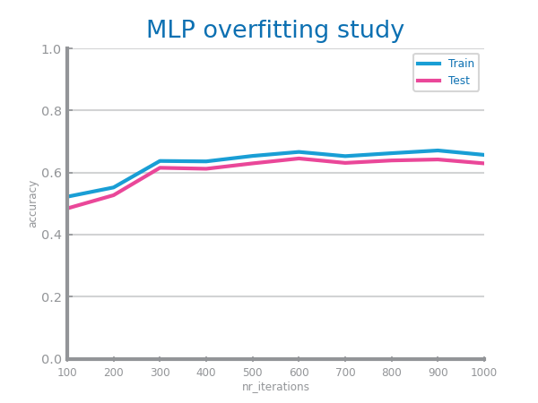11: We are able to identify the existence of overfitting for MLP models trained longer than 700 episodes.

12: We are able to identify the existence of overfitting for gradient boosting models with more than 1002 estimators.
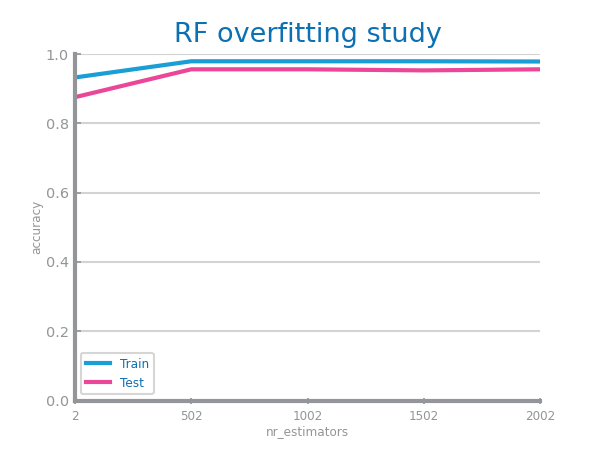13: Results for Random Forests identified as 3, may be explained by its estimators being in underfitting.
14: The random forests results shown can be explained by the lack of diversity resulting from the number of features considered.
15: We are able to identify the existence of overfitting for random forest models with more than 502 estimators.
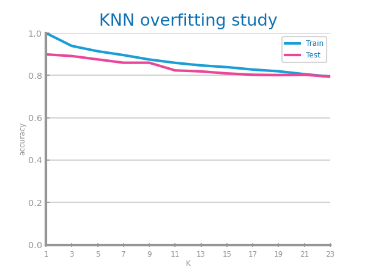16: KNN is in overfitting for k larger than 17.
17: KNN with 7 neighbour is in overfitting.
18: KNN with more than 17 neighbours is in overfitting.
19: We are able to identify the existence of overfitting for KNN models with less than 2 neighbors.
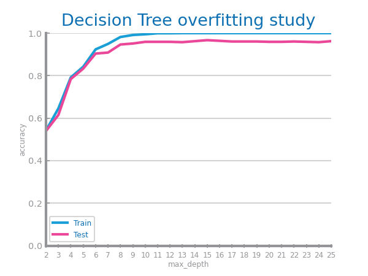20: According to the decision tree overfitting chart, the tree with 12 nodes of depth is in overfitting.
21: The chart reporting the recall for different trees shows that the model enters in overfitting for models with depth higher than 4.
22: The decision tree is in overfitting for depths above 8.
23: We are able to identify the existence of overfitting for decision tree models with more than 6 nodes of depth.
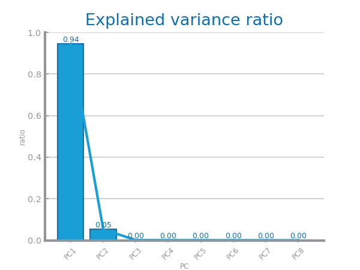24: The first 7 principal components are enough for explaining half the data variance.
25: Using the first 7 principal components would imply an error between 15 and 20%.

26: The intrinsic dimensionality of this dataset is 3.
27: One of the variables Age or Height can be discarded without losing information.
28: The variable Weight can be discarded without risking losing information.
29: Variables NCP and TUE are redundant, but we can’t say the same for the pair Weight and Height.
30: Variables FAF and TUE are redundant.
31: From the correlation analysis alone, it is clear that there are relevant variables.
32: Variable Height seems to be relevant for the majority of mining tasks.
33: Variables FAF and Height seem to be useful for classification tasks.
34: Applying a non-supervised feature selection based on the redundancy, would not increase the performance of the generality of the training algorithms in this dataset.
35: Removing variable CH2O might improve the training of decision trees .
36: There is evidence in favour for sequential backward selection to select variable Age previously than variable Height.
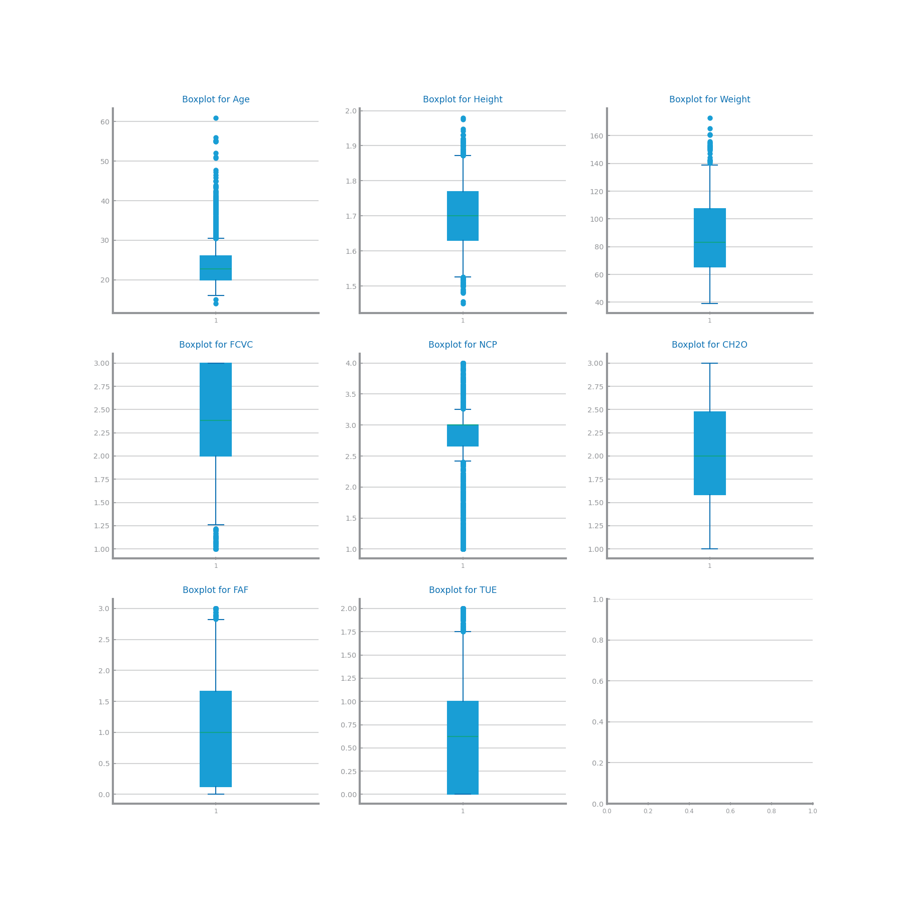37: Variable CH2O is balanced.
38: Those boxplots show that the data is not normalized.
39: It is clear that variable FCVC shows some outliers, but we can’t be sure of the same for variable TUE.
40: Outliers seem to be a problem in the dataset.
41: Variable FAF shows some outlier values.
42: Variable NCP doesn’t have any outliers.
43: Variable Height presents some outliers.
44: At least 75 of the variables present outliers.
45: The boxplots presented show a large number of outliers for most of the numeric variables.
46: The existence of outliers is one of the problems to tackle in this dataset.
47: A scaling transformation is mandatory, in order to improve the KNN performance in this dataset.
48: Multiplying ratio and Boolean variables by 100, and variables with a range between 0 and 10 by 10, would have an impact similar to other scaling transformations.
49: Normalization of this dataset could not have impact on a KNN classifier.
50: Scaling this dataset would be mandatory to improve the results with distance-based methods.

51: All variables, but the class, should be dealt with as numeric.
52: The variable SMOKE can be seen as ordinal.
53: The variable FAVC can be seen as ordinal without losing information.
54: Considering the common semantics for FAVC and CAEC variables, dummification if applied would increase the risk of facing the curse of dimensionality.
55: Considering the common semantics for family_history_with_overweight variable, dummification would be the most adequate encoding.
56: The variable MTRANS can be coded as ordinal without losing information.
57: Feature generation based on variable family_history_with_overweight seems to be promising.
58: Feature generation based on the use of variable SCC wouldn’t be useful, but the use of CAEC seems to be promising.
59: Given the usual semantics of family_history_with_overweight variable, dummification would have been a better codification.
60: It is better to drop the variable CALC than removing all records with missing values.
61: Not knowing the semantics of family_history_with_overweight variable, dummification could have been a more adequate codification.
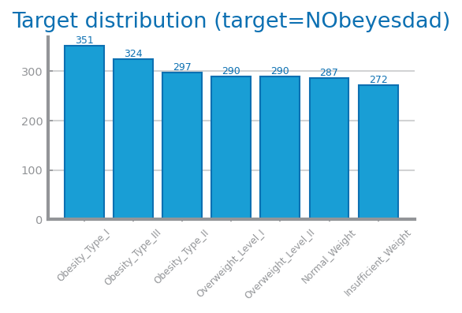62: Balancing this dataset would be mandatory to improve the results.
63: Given the number of records and that some variables are symbolic, we might be facing the curse of dimensionality.
64: We face the curse of dimensionality when training a classifier with this dataset.
65: Balancing this dataset by SMOTE would most probably be preferable over undersampling.
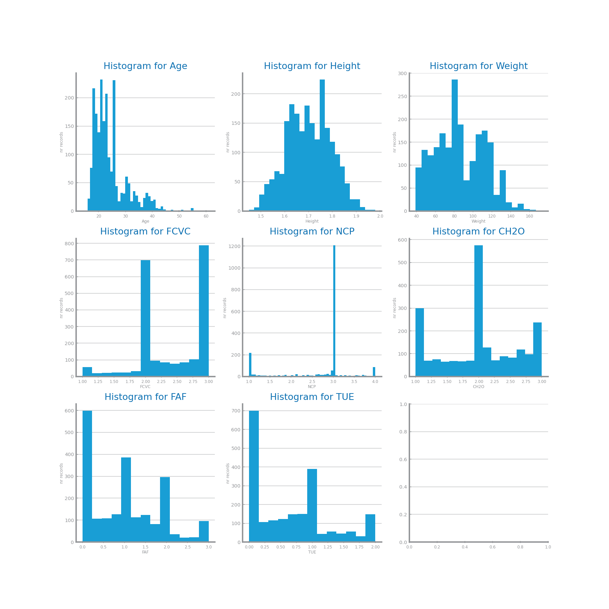66: All variables, but the class, should be dealt with as symbolic.
67: The variable Height can be seen as ordinal.
68: The variable NCP can be seen as ordinal without losing information.
69: Variable FAF is balanced.
70: It is clear that variable Age shows some outliers, but we can’t be sure of the same for variable CH2O.
71: Outliers seem to be a problem in the dataset.
72: Variable Height shows a high number of outlier values.
73: Variable TUE doesn’t have any outliers.
74: Variable FCVC presents some outliers.
75: At least 60 of the variables present outliers.
76: The boxplots presented show a large number of outliers for most of the numeric variables.
77: The existence of outliers is one of the problems to tackle in this dataset.
78: Considering the common semantics for Weight and Age variables, dummification if applied would increase the risk of facing the curse of dimensionality.
79: Considering the common semantics for Age variable, dummification would be the most adequate encoding.
80: The variable Weight can be coded as ordinal without losing information.
81: Feature generation based on variable TUE seems to be promising.
82: Feature generation based on the use of variable Weight wouldn’t be useful, but the use of Age seems to be promising.
83: Given the usual semantics of FAF variable, dummification would have been a better codification.
84: It is better to drop the variable Age than removing all records with missing values.
85: Not knowing the semantics of CH2O variable, dummification could have been a more adequate codification.
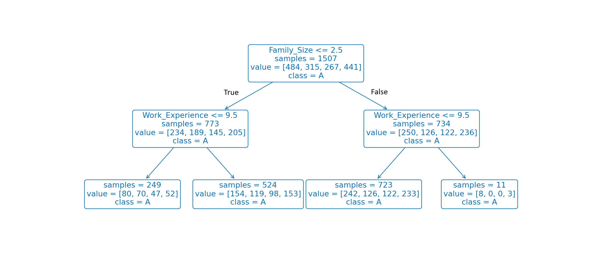86: The variable Family_Size discriminates between the target values, as shown in the decision tree.
87: Variable Work_Experience is one of the most relevant variables.
88: A smaller tree would be delivered if we would apply post-pruning, accepting an accuracy reduction of 5%.
89: As reported in the tree, the number of False Positive is smaller than the number of False Negatives.
90: The precision for the presented tree is lower than 60%.
91: The number of True Negatives is higher than the number of False Positives for the presented tree.
92: The number of True Negatives is higher than the number of True Positives for the presented tree.
93: The recall for the presented tree is higher than its accuracy.
94: Considering that A=True<=>[Family_Size <= 2.5] and B=True<=>[Work_Experience <= 9.5], it is possible to state that KNN algorithm classifies (A,B) as B for any k ≤ 11.
95: Considering that A=True<=>[Family_Size <= 2.5] and B=True<=>[Work_Experience <= 9.5], it is possible to state that KNN algorithm classifies (A, not B) as C for any k ≤ 723.
96: Considering that A=True<=>[Family_Size <= 2.5] and B=True<=>[Work_Experience <= 9.5], it is possible to state that KNN algorithm classifies (not A, B) as B for any k ≤ 524.
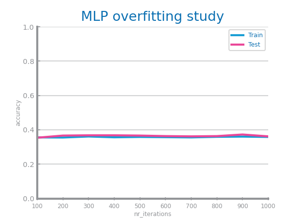97: We are able to identify the existence of overfitting for MLP models trained longer than 300 episodes.

98: We are able to identify the existence of overfitting for gradient boosting models with more than 502 estimators.

99: Results for Random Forests identified as 2, may be explained by its estimators being in overfitting.
100: The random forests results shown can be explained by the lack of diversity resulting from the number of features considered.
101: We are able to identify the existence of overfitting for random forest models with more than 1002 estimators.
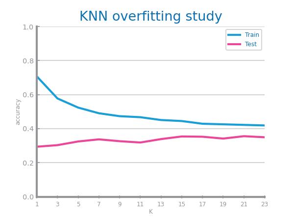102: KNN is in overfitting for k larger than 13.
103: KNN with 11 neighbour is in overfitting.
104: KNN with more than 17 neighbours is in overfitting.
105: We are able to identify the existence of overfitting for KNN models with less than 5 neighbors.

106: According to the decision tree overfitting chart, the tree with 16 nodes of depth is in overfitting.
107: The chart reporting the recall for different trees shows that the model enters in overfitting for models with depth higher than 7.
108: The decision tree is in overfitting for depths above 5.
109: We are able to identify the existence of overfitting for decision tree models with more than 5 nodes of depth.

110: The first 2 principal components are enough for explaining half the data variance.
111: Using the first 2 principal components would imply an error between 10 and 20%.
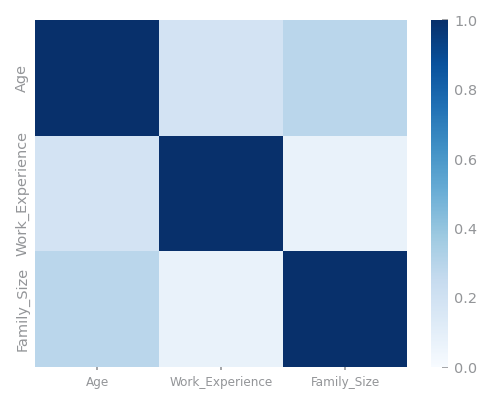112: The intrinsic dimensionality of this dataset is 2.
113: One of the variables Age or Family_Size can be discarded without losing information.
114: The variable Age can be discarded without risking losing information.
115: Variables Age and Work_Experience seem to be useful for classification tasks.
116: Variables Age and Work_Experience are redundant.
117: From the correlation analysis alone, it is clear that there are relevant variables.
118: Variable Family_Size seems to be relevant for the majority of mining tasks.
119: Variables Family_Size and Work_Experience seem to be useful for classification tasks.
120: Applying a non-supervised feature selection based on the redundancy, would not increase the performance of the generality of the training algorithms in this dataset.
121: Removing variable Work_Experience might improve the training of decision trees .
122: There is evidence in favour for sequential backward selection to select variable Age previously than variable Family_Size.
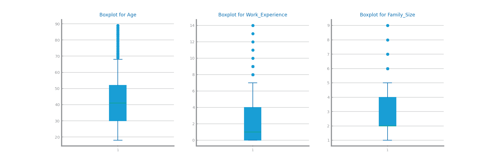123: Variable Family_Size is balanced.
124: Those boxplots show that the data is not normalized.
125: It is clear that variable Work_Experience shows some outliers, but we can’t be sure of the same for variable Family_Size.
126: Outliers seem to be a problem in the dataset.
127: Variable Work_Experience shows a high number of outlier values.
128: Variable Work_Experience doesn’t have any outliers.
129: Variable Age presents some outliers.
130: At least 50 of the variables present outliers.
131: The histograms presented show a large number of outliers for most of the numeric variables.
132: The existence of outliers is one of the problems to tackle in this dataset.
133: A scaling transformation is mandatory, in order to improve the KNN performance in this dataset.
134: Multiplying ratio and Boolean variables by 100, and variables with a range between 0 and 10 by 10, would have an impact similar to other scaling transformations.
135: Normalization of this dataset could not have impact on a KNN classifier.
136: Scaling this dataset would be mandatory to improve the results with distance-based methods.
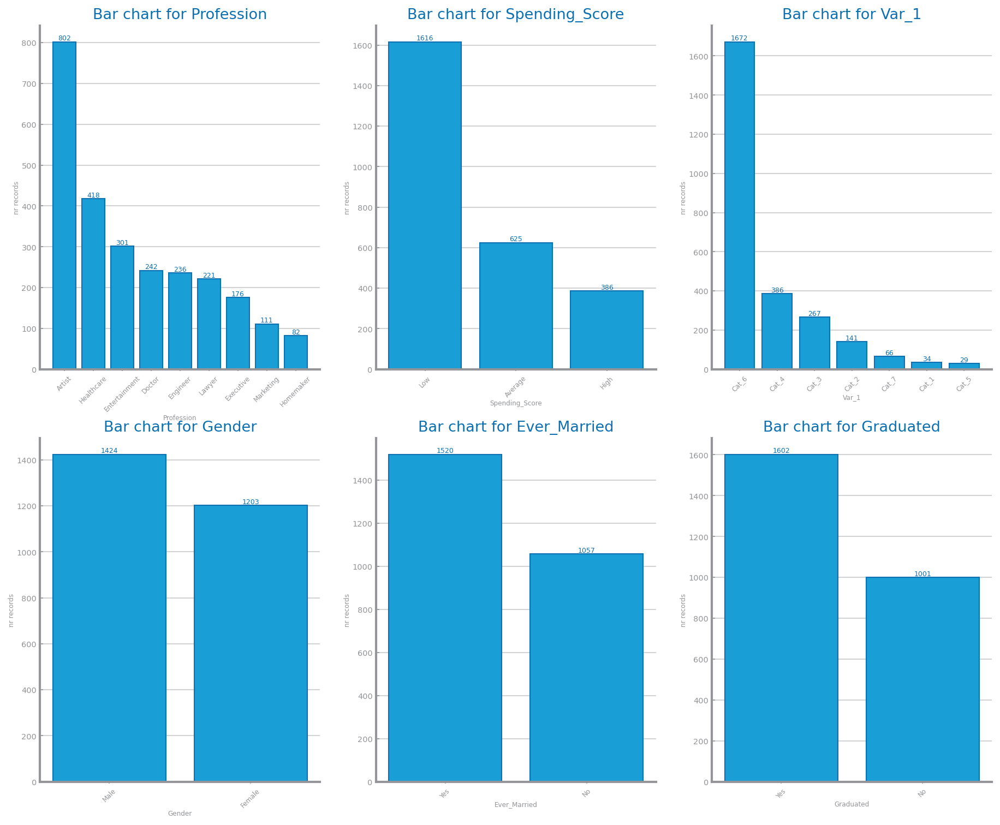137: All variables, but the class, should be dealt with as numeric.
138: The variable Gender can be seen as ordinal.
139: The variable Ever_Married can be seen as ordinal without losing information.
140: Considering the common semantics for Var_1 and Profession variables, dummification if applied would increase the risk of facing the curse of dimensionality.
141: Considering the common semantics for Profession variable, dummification would be the most adequate encoding.
142: The variable Graduated can be coded as ordinal without losing information.
143: Feature generation based on variable Gender seems to be promising.
144: Feature generation based on the use of variable Graduated wouldn’t be useful, but the use of Profession seems to be promising.
145: Given the usual semantics of Profession variable, dummification would have been a better codification.
146: It is better to drop the variable Graduated than removing all records with missing values.
147: Not knowing the semantics of Spending_Score variable, dummification could have been a more adequate codification.
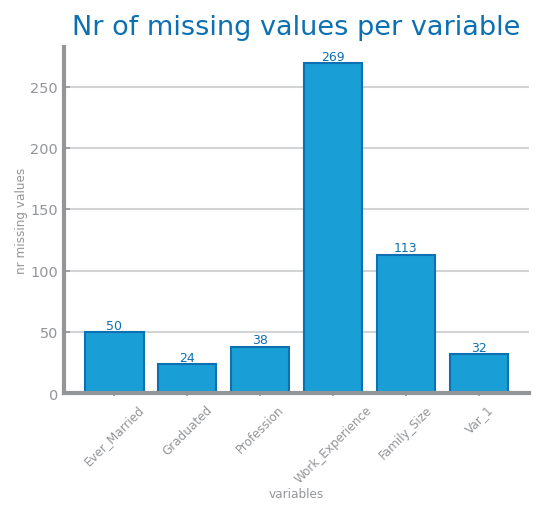148: Discarding variable Var_1 would be better than discarding all the records with missing values for that variable.
149: Dropping all records with missing values would be better than to drop the variables with missing values.
150: Dropping all rows with missing values can lead to a dataset with less than 30% of the original data.
151: There is no reason to believe that discarding records showing missing values is safer than discarding the corresponding variables in this case.
152: Feature generation based on variable Var_1 seems to be promising.
153: It is better to drop the variable Family_Size than removing all records with missing values.

154: Balancing this dataset would be mandatory to improve the results.

155: Given the number of records and that some variables are symbolic, we might be facing the curse of dimensionality.
156: We face the curse of dimensionality when training a classifier with this dataset.
157: Balancing this dataset by SMOTE would most probably be preferable over undersampling.
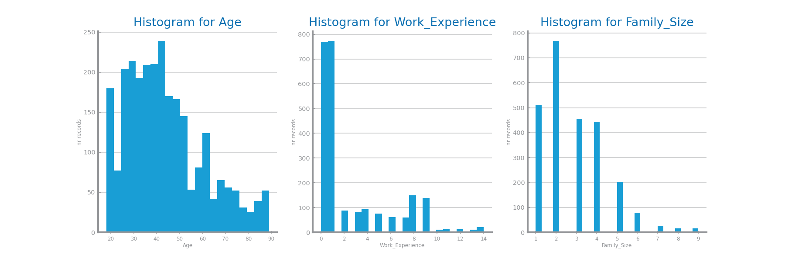158: All variables, but the class, should be dealt with as symbolic.
159: The variable Family_Size can be seen as ordinal.
160: The variable Age can be seen as ordinal without losing information.
161: Variable Family_Size is balanced.
162: It is clear that variable Work_Experience shows some outliers, but we can’t be sure of the same for variable Age.
163: Outliers seem to be a problem in the dataset.
164: Variable Age shows some outlier values.
165: Variable Family_Size doesn’t have any outliers.
166: Variable Work_Experience presents some outliers.
167: At least 75 of the variables present outliers.
168: The histograms presented show a large number of outliers for most of the numeric variables.
169: The existence of outliers is one of the problems to tackle in this dataset.
170: Considering the common semantics for Family_Size and Age variables, dummification if applied would increase the risk of facing the curse of dimensionality.
171: Considering the common semantics for Age variable, dummification would be the most adequate encoding.
172: The variable Age can be coded as ordinal without losing information.
173: Feature generation based on variable Work_Experience seems to be promising.
174: Feature generation based on the use of variable Work_Experience wouldn’t be useful, but the use of Age seems to be promising.
175: Given the usual semantics of Age variable, dummification would have been a better codification.
176: It is better to drop the variable Age than removing all records with missing values.
177: Not knowing the semantics of Family_Size variable, dummification could have been a more adequate codification.

178: The variable Age discriminates between the target values, as shown in the decision tree.
179: Variable Age is one of the most relevant variables.
180: A smaller tree would be delivered if we would apply post-pruning, accepting an accuracy reduction of 6%.
181: As reported in the tree, the number of False Positive is bigger than the number of False Negatives.
182: The specificity for the presented tree is higher than 60%.
183: The number of True Positives reported in the same tree is 10.
184: The number of False Positives is higher than the number of False Negatives for the presented tree.
185: The recall for the presented tree is lower than its specificity.
186: Considering that A=True<=>[Age <= 0.1] and B=True<=>[pH <= 5.5], the Decision Tree presented classifies (not A, B) as NEGATIVE.
187: Considering that A=True<=>[Age <= 0.1] and B=True<=>[pH <= 5.5], the Decision Tree presented classifies (not A, B) as POSITIVE.
188: Considering that A=True<=>[Age <= 0.1] and B=True<=>[pH <= 5.5], it is possible to state that KNN algorithm classifies (not A, B) as NEGATIVE for any k ≤ 763.
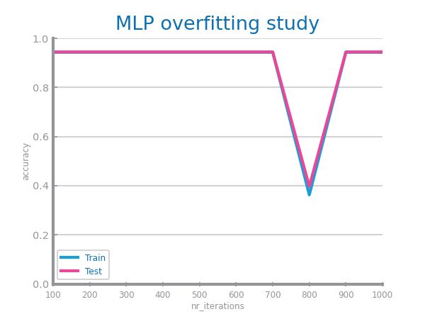189: We are able to identify the existence of overfitting for MLP models trained longer than 700 episodes.
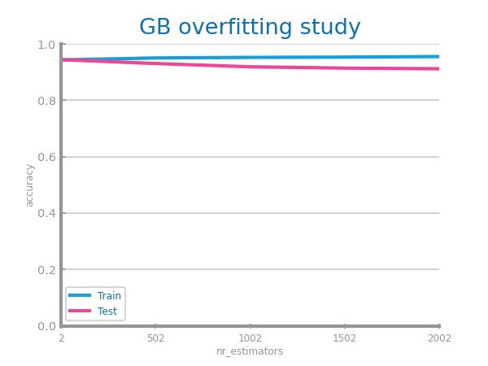190: We are able to identify the existence of overfitting for gradient boosting models with more than 1502 estimators.
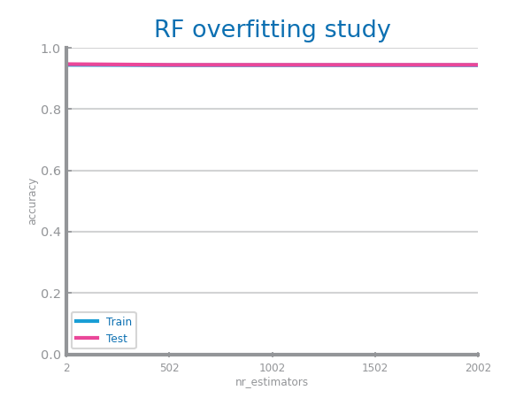191: Results for Random Forests identified as 3, may be explained by its estimators being in overfitting.
192: The random forests results shown can be explained by the lack of diversity resulting from the number of features considered.
193: We are able to identify the existence of overfitting for random forest models with more than 1502 estimators.

194: KNN is in overfitting for k larger than 5.
195: KNN with 7 neighbour is in overfitting.
196: KNN with less than 17 neighbours is in overfitting.
197: We are able to identify the existence of overfitting for KNN models with less than 3 neighbors.

198: According to the decision tree overfitting chart, the tree with 5 nodes of depth is in overfitting.
199: The chart reporting the recall for different trees shows that the model enters in overfitting for models with depth higher than 9.
200: The decision tree is in overfitting for depths above 8.
201: We are able to identify the existence of overfitting for decision tree models with more than 5 nodes of depth.
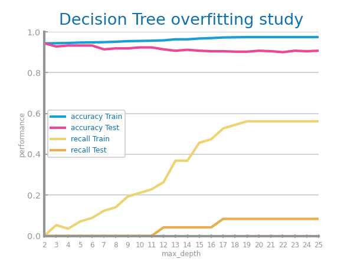202: The difference between recall and accuracy becomes smaller with the depth due to the overfitting phenomenon.

203: The first 2 principal components are enough for explaining half the data variance.
204: Using the first 2 principal components would imply an error between 5 and 20%.

205: The intrinsic dimensionality of this dataset is 2.
206: One of the variables pH or Age can be discarded without losing information.
207: The variable Age can be discarded without risking losing information.
208: Variables Specific Gravity and Age seem to be useful for classification tasks.
209: Variables Age and pH are redundant.
210: From the correlation analysis alone, it is clear that there are relevant variables.
211: Variable Specific Gravity seems to be relevant for the majority of mining tasks.
212: Variables Specific Gravity and pH seem to be useful for classification tasks.
213: Applying a non-supervised feature selection based on the redundancy, would not increase the performance of the generality of the training algorithms in this dataset.
214: Removing variable pH might improve the training of decision trees .
215: There is evidence in favour for sequential backward selection to select variable Age previously than variable pH.
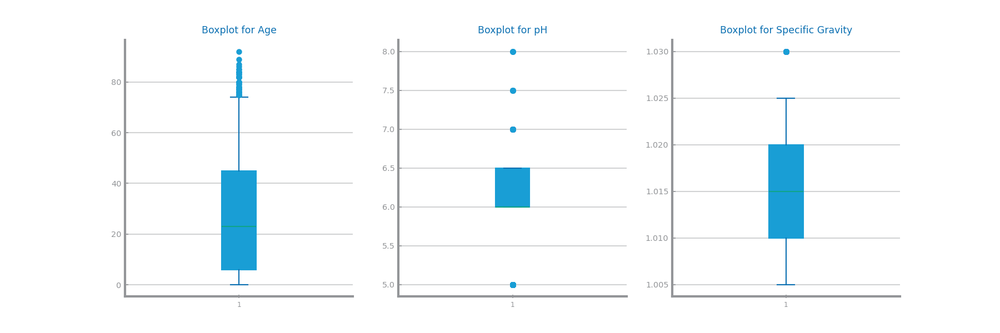216: Variable pH is balanced.
217: Those boxplots show that the data is not normalized.
218: It is clear that variable Specific Gravity shows some outliers, but we can’t be sure of the same for variable Age.
219: Outliers seem to be a problem in the dataset.
220: Variable Specific Gravity shows a high number of outlier values.
221: Variable Age doesn’t have any outliers.
222: Variable Age presents some outliers.
223: At least 60 of the variables present outliers.
224: The boxplots presented show a large number of outliers for most of the numeric variables.
225: The existence of outliers is one of the problems to tackle in this dataset.
226: A scaling transformation is mandatory, in order to improve the Naive Bayes performance in this dataset.
227: Multiplying ratio and Boolean variables by 100, and variables with a range between 0 and 10 by 10, would have an impact similar to other scaling transformations.
228: Normalization of this dataset could not have impact on a KNN classifier.
229: Scaling this dataset would be mandatory to improve the results with distance-based methods.
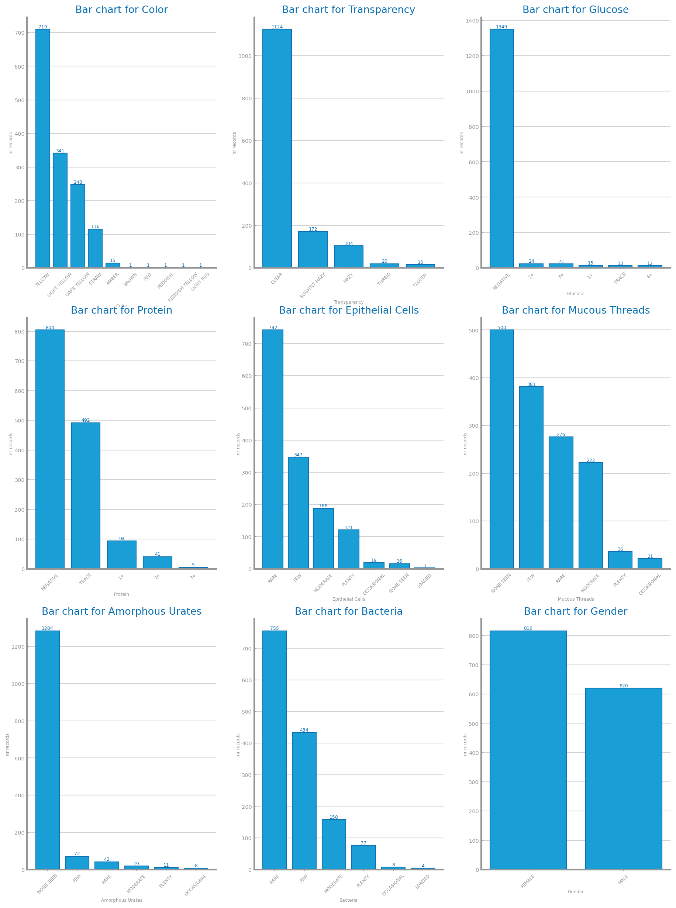230: All variables, but the class, should be dealt with as symbolic.
231: The variable Gender can be seen as ordinal.
232: The variable Mucous Threads can be seen as ordinal without losing information.
233: Considering the common semantics for Epithelial Cells and Color variables, dummification if applied would increase the risk of facing the curse of dimensionality.
234: Considering the common semantics for Amorphous Urates variable, dummification would be the most adequate encoding.
235: The variable Color can be coded as ordinal without losing information.
236: Feature generation based on variable Amorphous Urates seems to be promising.
237: Feature generation based on the use of variable Protein wouldn’t be useful, but the use of Color seems to be promising.
238: Given the usual semantics of Bacteria variable, dummification would have been a better codification.
239: It is better to drop the variable Bacteria than removing all records with missing values.
240: Not knowing the semantics of Epithelial Cells variable, dummification could have been a more adequate codification.
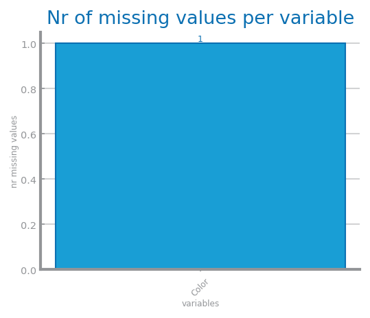241: Discarding variable Color would be better than discarding all the records with missing values for that variable.
242: Dropping all records with missing values would be better than to drop the variables with missing values.
243: Dropping all rows with missing values can lead to a dataset with less than 30% of the original data.
244: There is no reason to believe that discarding records showing missing values is safer than discarding the corresponding variables in this case.
245: Feature generation based on variable Color seems to be promising.
246: It is better to drop the variable Color than removing all records with missing values.
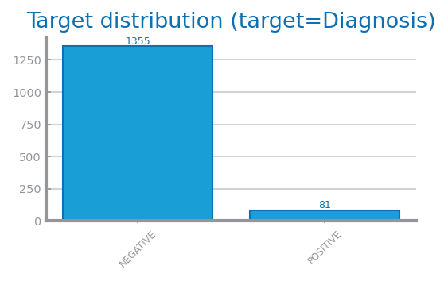247: Balancing this dataset would be mandatory to improve the results.

248: Given the number of records and that some variables are date, we might be facing the curse of dimensionality.
249: We face the curse of dimensionality when training a classifier with this dataset.
250: Balancing this dataset by SMOTE would most probably be preferable over undersampling.

251: All variables, but the class, should be dealt with as binary.
252: The variable Specific Gravity can be seen as ordinal.
253: The variable Specific Gravity can be seen as ordinal without losing information.
254: Variable Specific Gravity is balanced.
255: It is clear that variable Age shows some outliers, but we can’t be sure of the same for variable pH.
256: Outliers seem to be a problem in the dataset.
257: Variable Specific Gravity shows a high number of outlier values.
258: Variable Specific Gravity doesn’t have any outliers.
259: Variable Specific Gravity presents some outliers.
260: At least 50 of the variables present outliers.
261: The boxplots presented show a large number of outliers for most of the numeric variables.
262: The existence of outliers is one of the problems to tackle in this dataset.
263: Considering the common semantics for Age and pH variables, dummification if applied would increase the risk of facing the curse of dimensionality.
264: Considering the common semantics for Age variable, dummification would be the most adequate encoding.
265: The variable pH can be coded as ordinal without losing information.
266: Feature generation based on variable Age seems to be promising.
267: Feature generation based on the use of variable Age wouldn’t be useful, but the use of pH seems to be promising.
268: Given the usual semantics of Specific Gravity variable, dummification would have been a better codification.
269: It is better to drop the variable pH than removing all records with missing values.
270: Not knowing the semantics of Age variable, dummification could have been a more adequate codification.

271: The variable Ic discriminates between the target values, as shown in the decision tree.
272: Variable Vb is one of the most relevant variables.
273: A smaller tree would be delivered if we would apply post-pruning, accepting an accuracy reduction of 8%.
274: As reported in the tree, the number of False Positive is smaller than the number of False Negatives.
275: The precision for the presented tree is higher than 75%.
276: The number of False Negatives is lower than the number of True Negatives for the presented tree.
277: The number of True Positives is lower than the number of False Positives for the presented tree.
278: The number of False Negatives reported in the same tree is 50.
279: Considering that A=True<=>[Ic <= 71.01] and B=True<=>[Vb <= -0.37], it is possible to state that KNN algorithm classifies (A,B) as 0 for any k ≤ 3.
280: Considering that A=True<=>[Ic <= 71.01] and B=True<=>[Vb <= -0.37], the Decision Tree presented classifies (A, not B) as 0.
281: Considering that A=True<=>[Ic <= 71.01] and B=True<=>[Vb <= -0.37], the Decision Tree presented classifies (A,B) as 0.

282: We are able to identify the existence of overfitting for MLP models trained longer than 700 episodes.
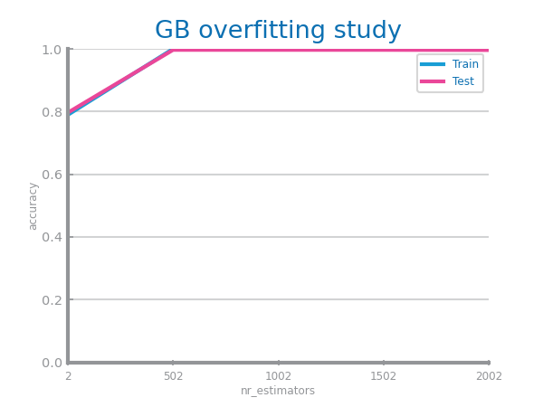283: We are able to identify the existence of overfitting for gradient boosting models with more than 1502 estimators.

284: Results for Random Forests identified as 2, may be explained by its estimators being in overfitting.
285: The random forests results shown can be explained by the lack of diversity resulting from the number of features considered.
286: We are able to identify the existence of overfitting for random forest models with more than 502 estimators.

287: KNN is in overfitting for k less than 17.
288: KNN with 5 neighbour is in overfitting.
289: KNN with less than 17 neighbours is in overfitting.
290: We are able to identify the existence of overfitting for KNN models with less than 6 neighbors.
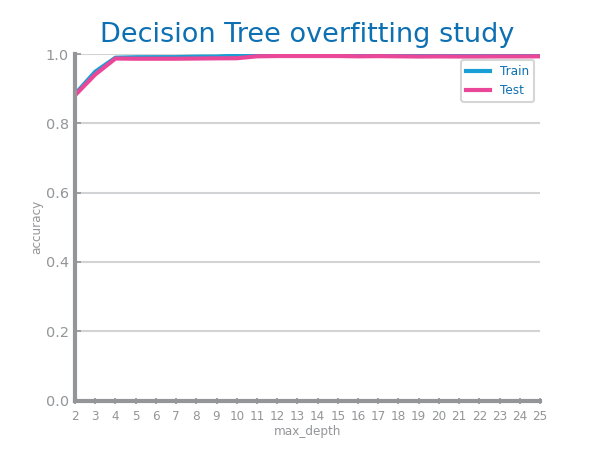291: According to the decision tree overfitting chart, the tree with 16 nodes of depth is in overfitting.
292: The chart reporting the recall for different trees shows that the model enters in overfitting for models with depth higher than 5.
293: The decision tree is in overfitting for depths above 9.
294: We are able to identify the existence of overfitting for decision tree models with more than 5 nodes of depth.
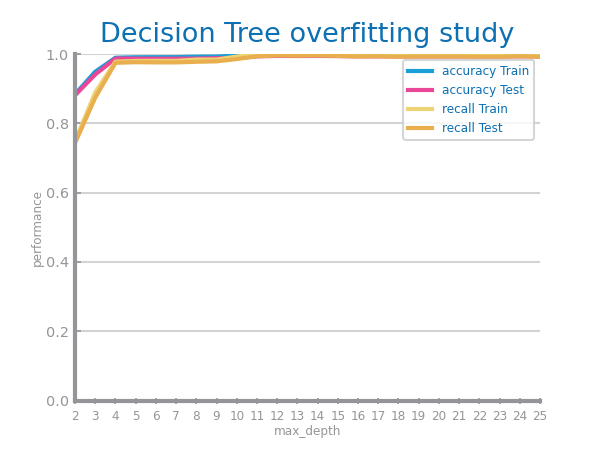295: The difference between recall and accuracy becomes smaller with the depth due to the overfitting phenomenon.

296: The first 2 principal components are enough for explaining half the data variance.
297: Using the first 3 principal components would imply an error between 10 and 20%.

298: The intrinsic dimensionality of this dataset is 5.
299: One of the variables Vc or Va can be discarded without losing information.
300: The variable Ic can be discarded without risking losing information.
301: Variables Ia and Ic are redundant, but we can’t say the same for the pair Vc and Vb.
302: Variables Ib and Vc are redundant.
303: From the correlation analysis alone, it is clear that there are relevant variables.
304: Variable Vb seems to be relevant for the majority of mining tasks.
305: Variables Ib and Ic seem to be useful for classification tasks.
306: Applying a non-supervised feature selection based on the redundancy, would not increase the performance of the generality of the training algorithms in this dataset.
307: Removing variable Ic might improve the training of decision trees .
308: There is evidence in favour for sequential backward selection to select variable Ic previously than variable Va.

309: Variable Vb is balanced.
310: Those boxplots show that the data is not normalized.
311: It is clear that variable Vb shows some outliers, but we can’t be sure of the same for variable Va.
312: Outliers seem to be a problem in the dataset.
313: Variable Vb shows some outlier values.
314: Variable Vb doesn’t have any outliers.
315: Variable Ia presents some outliers.
316: At least 75 of the variables present outliers.
317: The boxplots presented show a large number of outliers for most of the numeric variables.
318: The existence of outliers is one of the problems to tackle in this dataset.
319: A scaling transformation is mandatory, in order to improve the Naive Bayes performance in this dataset.
320: Multiplying ratio and Boolean variables by 100, and variables with a range between 0 and 10 by 10, would have an impact similar to other scaling transformations.
321: Normalization of this dataset could not have impact on a KNN classifier.
322: Scaling this dataset would be mandatory to improve the results with distance-based methods.
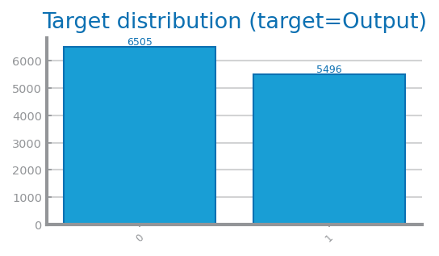323: Balancing this dataset would be mandatory to improve the results.
324: Given the number of records and that some variables are numeric, we might be facing the curse of dimensionality.
325: We face the curse of dimensionality when training a classifier with this dataset.
326: Balancing this dataset by SMOTE would most probably be preferable over undersampling.

327: All variables, but the class, should be dealt with as date.
328: The variable Ic can be seen as ordinal.
329: The variable Vc can be seen as ordinal without losing information.
330: Variable Ia is balanced.
331: It is clear that variable Va shows some outliers, but we can’t be sure of the same for variable Vc.
332: Outliers seem to be a problem in the dataset.
333: Variable Ia shows a high number of outlier values.
334: Variable Ic doesn’t have any outliers.
335: Variable Ic presents some outliers.
336: At least 60 of the variables present outliers.
337: The histograms presented show a large number of outliers for most of the numeric variables.
338: The existence of outliers is one of the problems to tackle in this dataset.
339: Considering the common semantics for Ia and Ib variables, dummification if applied would increase the risk of facing the curse of dimensionality.
340: Considering the common semantics for Vc variable, dummification would be the most adequate encoding.
341: The variable Vb can be coded as ordinal without losing information.
342: Feature generation based on variable Vb seems to be promising.
343: Feature generation based on the use of variable Ic wouldn’t be useful, but the use of Ia seems to be promising.
344: Given the usual semantics of Ib variable, dummification would have been a better codification.
345: It is better to drop the variable Ia than removing all records with missing values.
346: Not knowing the semantics of Ia variable, dummification could have been a more adequate codification.

347: The variable BMI discriminates between the target values, as shown in the decision tree.
348: Variable BMI is one of the most relevant variables.
349: A smaller tree would be delivered if we would apply post-pruning, accepting an accuracy reduction of 5%.
350: As reported in the tree, the number of False Positive is bigger than the number of False Negatives.
351: The precision for the presented tree is higher than 60%.
352: The number of True Positives reported in the same tree is 30.
353: The number of False Positives is lower than the number of False Negatives for the presented tree.
354: The accuracy for the presented tree is higher than its specificity.
355: Considering that A=True<=>[BMI <= 29.85] and B=True<=>[Age <= 27.5], the Decision Tree presented classifies (not A, not B) as 1.
356: Considering that A=True<=>[BMI <= 29.85] and B=True<=>[Age <= 27.5], the Decision Tree presented classifies (not A, not B) as 1.
357: Considering that A=True<=>[BMI <= 29.85] and B=True<=>[Age <= 27.5], it is possible to state that KNN algorithm classifies (A, not B) as 0 for any k ≤ 98.
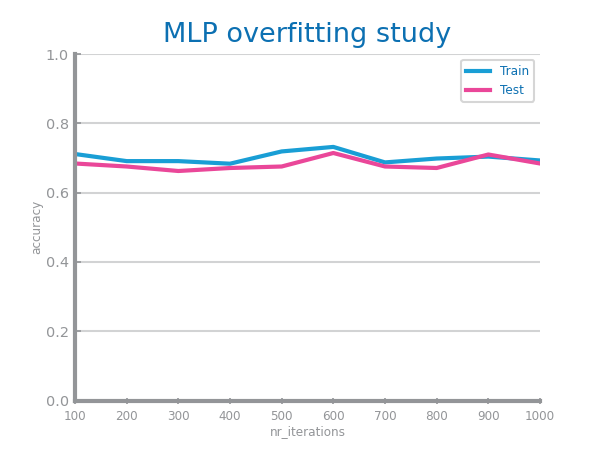358: We are able to identify the existence of overfitting for MLP models trained longer than 300 episodes.
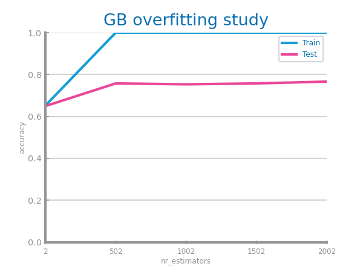359: We are able to identify the existence of overfitting for gradient boosting models with more than 1502 estimators.

360: Results for Random Forests identified as 2, may be explained by its estimators being in overfitting.
361: The random forests results shown can be explained by the lack of diversity resulting from the number of features considered.
362: We are able to identify the existence of overfitting for random forest models with more than 1002 estimators.

363: KNN is in overfitting for k larger than 13.
364: KNN with 11 neighbour is in overfitting.
365: KNN with more than 17 neighbours is in overfitting.
366: We are able to identify the existence of overfitting for KNN models with less than 2 neighbors.
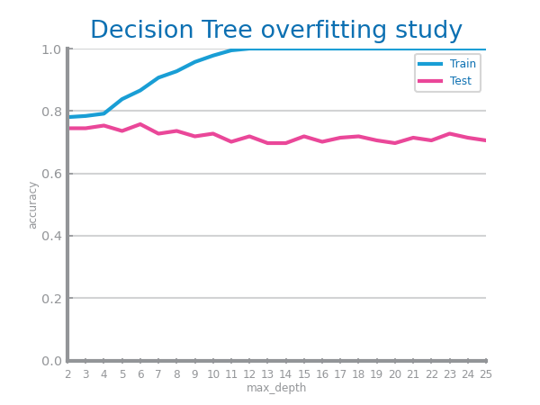367: According to the decision tree overfitting chart, the tree with 12 nodes of depth is in overfitting.
368: The chart reporting the recall for different trees shows that the model enters in overfitting for models with depth higher than 3.
369: The decision tree is in overfitting for depths above 4.
370: We are able to identify the existence of overfitting for decision tree models with more than 5 nodes of depth.
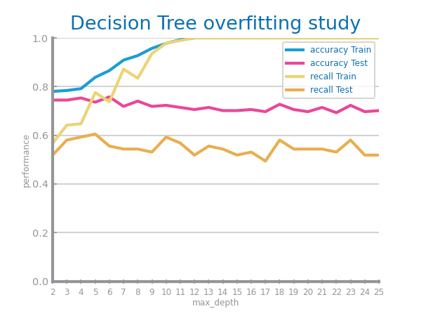371: The difference between recall and accuracy becomes smaller with the depth due to the overfitting phenomenon.
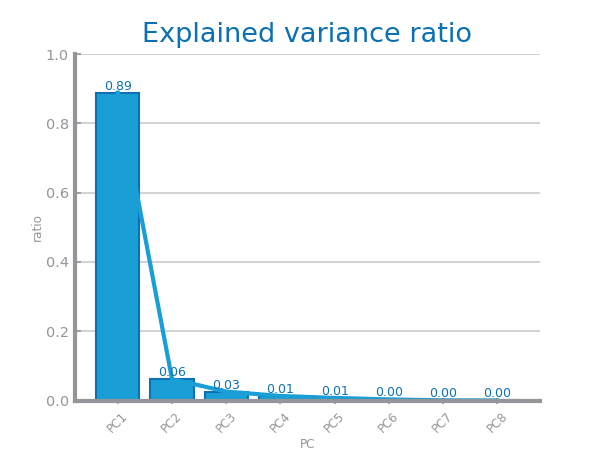372: The first 7 principal components are enough for explaining half the data variance.
373: Using the first 2 principal components would imply an error between 10 and 20%.

374: The intrinsic dimensionality of this dataset is 3.
375: One of the variables Age or Insulin can be discarded without losing information.
376: The variable DiabetesPedigreeFunction can be discarded without risking losing information.
377: Variables Age and SkinThickness are redundant, but we can’t say the same for the pair BMI and BloodPressure.
378: Variables DiabetesPedigreeFunction and Age are redundant.
379: From the correlation analysis alone, it is clear that there are relevant variables.
380: Variable SkinThickness seems to be relevant for the majority of mining tasks.
381: Variables Insulin and Glucose seem to be useful for classification tasks.
382: Applying a non-supervised feature selection based on the redundancy, would not increase the performance of the generality of the training algorithms in this dataset.
383: Removing variable Insulin might improve the training of decision trees .
384: There is evidence in favour for sequential backward selection to select variable DiabetesPedigreeFunction previously than variable Pregnancies.

385: Variable DiabetesPedigreeFunction is balanced.
386: Those boxplots show that the data is not normalized.
387: It is clear that variable Glucose shows some outliers, but we can’t be sure of the same for variable Age.
388: Outliers seem to be a problem in the dataset.
389: Variable Pregnancies shows some outlier values.
390: Variable Insulin doesn’t have any outliers.
391: Variable BMI presents some outliers.
392: At least 85 of the variables present outliers.
393: The boxplots presented show a large number of outliers for most of the numeric variables.
394: The existence of outliers is one of the problems to tackle in this dataset.
395: A scaling transformation is mandatory, in order to improve the Naive Bayes performance in this dataset.
396: Multiplying ratio and Boolean variables by 100, and variables with a range between 0 and 10 by 10, would have an impact similar to other scaling transformations.
397: Normalization of this dataset could not have impact on a KNN classifier.
398: Scaling this dataset would be mandatory to improve the results with distance-based methods.
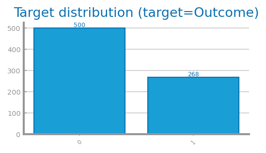399: Balancing this dataset would be mandatory to improve the results.

400: Given the number of records and that some variables are binary, we might be facing the curse of dimensionality.
401: We face the curse of dimensionality when training a classifier with this dataset.
402: Balancing this dataset by SMOTE would most probably be preferable over undersampling.

403: All variables, but the class, should be dealt with as numeric.
404: The variable Age can be seen as ordinal.
405: The variable Age can be seen as ordinal without losing information.
406: Variable Pregnancies is balanced.
407: It is clear that variable DiabetesPedigreeFunction shows some outliers, but we can’t be sure of the same for variable Glucose.
408: Outliers seem to be a problem in the dataset.
409: Variable Age shows a high number of outlier values.
410: Variable BMI doesn’t have any outliers.
411: Variable BloodPressure presents some outliers.
412: At least 60 of the variables present outliers.
413: The histograms presented show a large number of outliers for most of the numeric variables.
414: The existence of outliers is one of the problems to tackle in this dataset.
415: Considering the common semantics for BloodPressure and Pregnancies variables, dummification if applied would increase the risk of facing the curse of dimensionality.
416: Considering the common semantics for BMI variable, dummification would be the most adequate encoding.
417: The variable Age can be coded as ordinal without losing information.
418: Feature generation based on variable BMI seems to be promising.
419: Feature generation based on the use of variable Age wouldn’t be useful, but the use of Pregnancies seems to be promising.
420: Given the usual semantics of BMI variable, dummification would have been a better codification.
421: It is better to drop the variable BMI than removing all records with missing values.
422: Not knowing the semantics of SkinThickness variable, dummification could have been a more adequate codification.
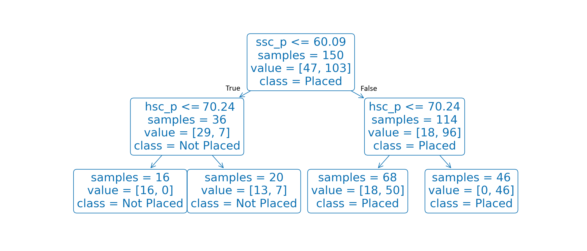423: The variable ssc_p discriminates between the target values, as shown in the decision tree.
424: Variable hsc_p is one of the most relevant variables.
425: A smaller tree would be delivered if we would apply post-pruning, accepting an accuracy reduction of 6%.
426: As reported in the tree, the number of False Positive is bigger than the number of False Negatives.
427: The recall for the presented tree is higher than 90%.
428: The number of False Negatives is lower than the number of True Negatives for the presented tree.
429: The number of True Negatives is lower than the number of True Positives for the presented tree.
430: The accuracy for the presented tree is higher than 75%.
431: Considering that A=True<=>[ssc_p <= 60.09] and B=True<=>[hsc_p <= 70.24], it is possible to state that KNN algorithm classifies (not A, not B) as Placed for any k ≤ 68.
432: Considering that A=True<=>[ssc_p <= 60.09] and B=True<=>[hsc_p <= 70.24], it is possible to state that KNN algorithm classifies (not A, not B) as Placed for any k ≤ 68.
433: Considering that A=True<=>[ssc_p <= 60.09] and B=True<=>[hsc_p <= 70.24], the Decision Tree presented classifies (A, not B) as Placed.

434: We are able to identify the existence of overfitting for MLP models trained longer than 500 episodes.
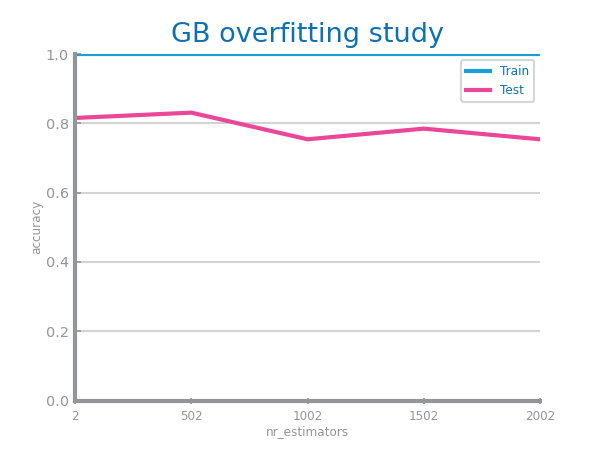435: We are able to identify the existence of overfitting for gradient boosting models with more than 1002 estimators.

436: Results for Random Forests identified as 10, may be explained by its estimators being in underfitting.
437: The random forests results shown can be explained by the lack of diversity resulting from the number of features considered.
438: We are able to identify the existence of overfitting for random forest models with more than 1002 estimators.
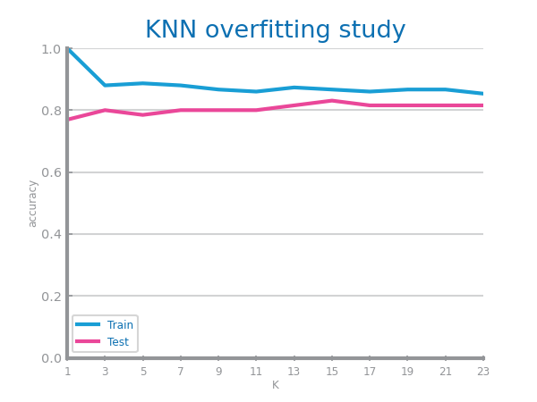439: KNN is in overfitting for k less than 13.
440: KNN with 7 neighbour is in overfitting.
441: KNN with more than 15 neighbours is in overfitting.
442: We are able to identify the existence of overfitting for KNN models with less than 3 neighbors.

443: According to the decision tree overfitting chart, the tree with 12 nodes of depth is in overfitting.
444: The chart reporting the recall for different trees shows that the model enters in overfitting for models with depth higher than 3.
445: The decision tree is in overfitting for depths above 8.
446: We are able to identify the existence of overfitting for decision tree models with more than 3 nodes of depth.
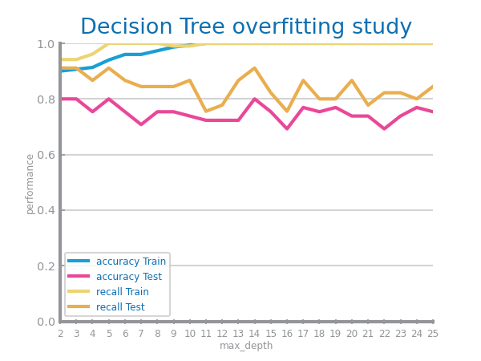447: The difference between recall and accuracy becomes smaller with the depth due to the overfitting phenomenon.
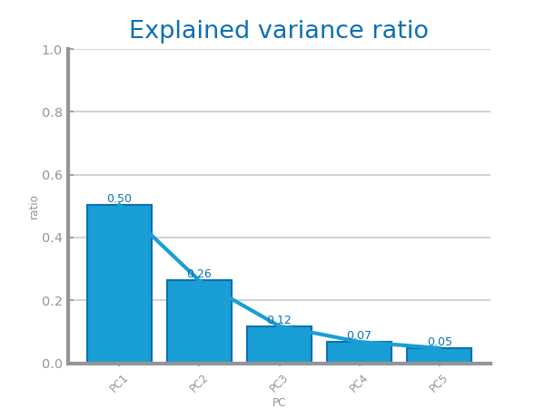448: The first 3 principal components are enough for explaining half the data variance.
449: Using the first 2 principal components would imply an error between 10 and 30%.

450: The intrinsic dimensionality of this dataset is 4.
451: One of the variables hsc_p or mba_p can be discarded without losing information.
452: The variable mba_p can be discarded without risking losing information.
453: Variables hsc_p and ssc_p are redundant, but we can’t say the same for the pair degree_p and etest_p.
454: Variables hsc_p and etest_p are redundant.
455: From the correlation analysis alone, it is clear that there are relevant variables.
456: Variable ssc_p seems to be relevant for the majority of mining tasks.
457: Variables hsc_p and degree_p seem to be useful for classification tasks.
458: Applying a non-supervised feature selection based on the redundancy, would not increase the performance of the generality of the training algorithms in this dataset.
459: Removing variable degree_p might improve the training of decision trees .
460: There is evidence in favour for sequential backward selection to select variable hsc_p previously than variable mba_p.

461: Variable etest_p is balanced.
462: Those boxplots show that the data is not normalized.
463: It is clear that variable mba_p shows some outliers, but we can’t be sure of the same for variable ssc_p.
464: Outliers seem to be a problem in the dataset.
465: Variable hsc_p shows some outlier values.
466: Variable hsc_p doesn’t have any outliers.
467: Variable hsc_p presents some outliers.
468: At least 75 of the variables present outliers.
469: The boxplots presented show a large number of outliers for most of the numeric variables.
470: The existence of outliers is one of the problems to tackle in this dataset.
471: A scaling transformation is mandatory, in order to improve the KNN performance in this dataset.
472: Multiplying ratio and Boolean variables by 100, and variables with a range between 0 and 10 by 10, would have an impact similar to other scaling transformations.
473: Normalization of this dataset could not have impact on a KNN classifier.
474: Scaling this dataset would be mandatory to improve the results with distance-based methods.

475: All variables, but the class, should be dealt with as numeric.
476: The variable degree_t can be seen as ordinal.
477: The variable specialisation can be seen as ordinal without losing information.
478: Considering the common semantics for specialisation and hsc_s variables, dummification if applied would increase the risk of facing the curse of dimensionality.
479: Considering the common semantics for specialisation variable, dummification would be the most adequate encoding.
480: The variable ssc_b can be coded as ordinal without losing information.
481: Feature generation based on variable hsc_s seems to be promising.
482: Feature generation based on the use of variable hsc_s wouldn’t be useful, but the use of degree_t seems to be promising.
483: Given the usual semantics of hsc_s variable, dummification would have been a better codification.
484: It is better to drop the variable ssc_b than removing all records with missing values.
485: Not knowing the semantics of hsc_b variable, dummification could have been a more adequate codification.

486: Balancing this dataset would be mandatory to improve the results.

487: Given the number of records and that some variables are binary, we might be facing the curse of dimensionality.
488: We face the curse of dimensionality when training a classifier with this dataset.
489: Balancing this dataset by SMOTE would most probably be preferable over undersampling.
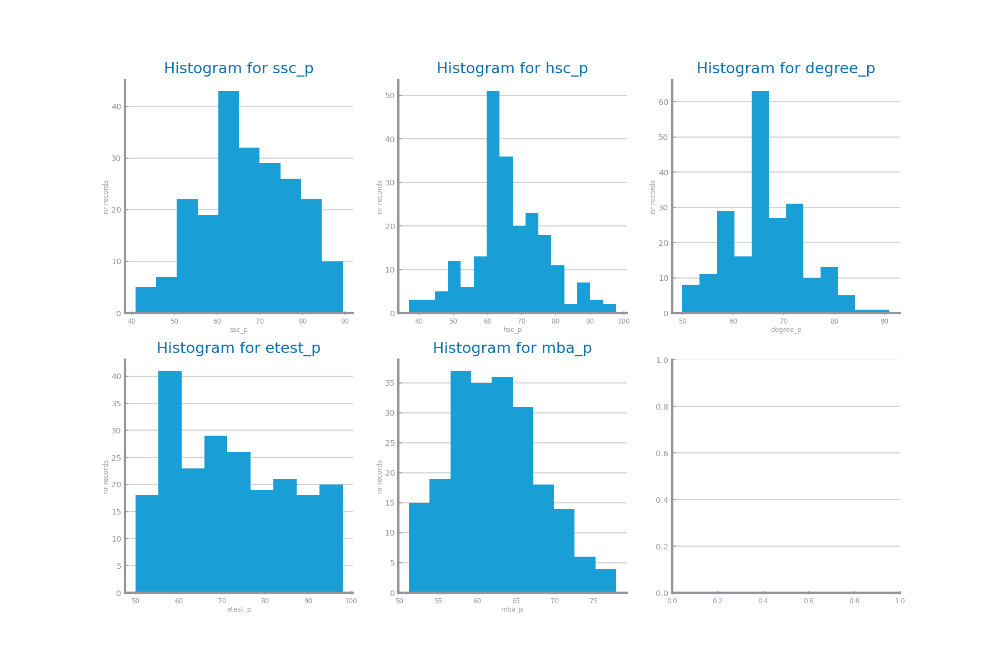490: All variables, but the class, should be dealt with as numeric.
491: The variable etest_p can be seen as ordinal.
492: The variable mba_p can be seen as ordinal without losing information.
493: Variable degree_p is balanced.
494: It is clear that variable mba_p shows some outliers, but we can’t be sure of the same for variable hsc_p.
495: Outliers seem to be a problem in the dataset.
496: Variable mba_p shows some outlier values.
497: Variable ssc_p doesn’t have any outliers.
498: Variable degree_p presents some outliers.
499: At least 85 of the variables present outliers.
500: The boxplots presented show a large number of outliers for most of the numeric variables.
501: The existence of outliers is one of the problems to tackle in this dataset.
502: Considering the common semantics for ssc_p and hsc_p variables, dummification if applied would increase the risk of facing the curse of dimensionality.
503: Considering the common semantics for ssc_p variable, dummification would be the most adequate encoding.
504: The variable degree_p can be coded as ordinal without losing information.
505: Feature generation based on variable ssc_p seems to be promising.
506: Feature generation based on the use of variable etest_p wouldn’t be useful, but the use of ssc_p seems to be promising.
507: Given the usual semantics of degree_p variable, dummification would have been a better codification.
508: It is better to drop the variable etest_p than removing all records with missing values.
509: Not knowing the semantics of hsc_p variable, dummification could have been a more adequate codification.
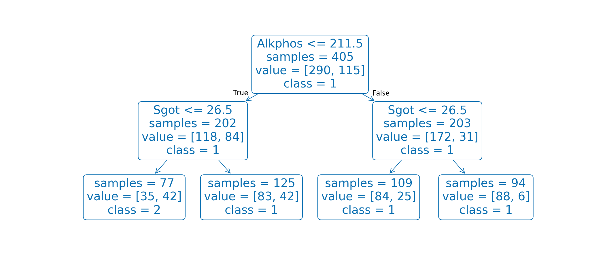510: The variable Sgot discriminates between the target values, as shown in the decision tree.
511: Variable Alkphos is one of the most relevant variables.
512: A smaller tree would be delivered if we would apply post-pruning, accepting an accuracy reduction of 5%.
513: As reported in the tree, the number of False Positive is bigger than the number of False Negatives.
514: The recall for the presented tree is higher than 90%.
515: The number of True Negatives is higher than the number of True Positives for the presented tree.
516: The number of True Negatives is lower than the number of False Positives for the presented tree.
517: The precision for the presented tree is higher than its recall.
518: Considering that A=True<=>[Alkphos <= 211.5] and B=True<=>[Sgot <= 26.5], it is possible to state that Naive Bayes algorithm classifies (A, not B), as 1.
519: Considering that A=True<=>[Alkphos <= 211.5] and B=True<=>[Sgot <= 26.5], it is possible to state that KNN algorithm classifies (not A, not B) as 2 for any k ≤ 94.
520: Considering that A=True<=>[Alkphos <= 211.5] and B=True<=>[Sgot <= 26.5], the Decision Tree presented classifies (not A, B) as 1.
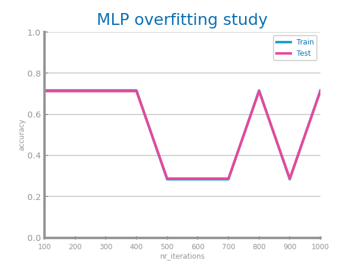521: We are able to identify the existence of overfitting for MLP models trained longer than 500 episodes.

522: We are able to identify the existence of overfitting for gradient boosting models with more than 502 estimators.

523: Results for Random Forests identified as 10, may be explained by its estimators being in overfitting.
524: The random forests results shown can be explained by the lack of diversity resulting from the number of features considered.
525: We are able to identify the existence of overfitting for random forest models with more than 1502 estimators.
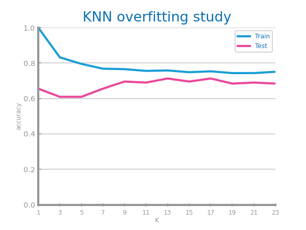526: KNN is in overfitting for k less than 13.
527: KNN with 7 neighbour is in overfitting.
528: KNN with more than 15 neighbours is in overfitting.
529: We are able to identify the existence of overfitting for KNN models with less than 3 neighbors.
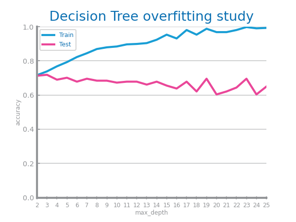530: According to the decision tree overfitting chart, the tree with 20 nodes of depth is in overfitting.
531: The chart reporting the recall for different trees shows that the model enters in overfitting for models with depth higher than 4.
532: The decision tree is in overfitting for depths above 4.
533: We are able to identify the existence of overfitting for decision tree models with more than 5 nodes of depth.

534: The difference between recall and accuracy becomes smaller with the depth due to the overfitting phenomenon.

535: The first 3 principal components are enough for explaining half the data variance.
536: Using the first 3 principal components would imply an error between 10 and 25%.
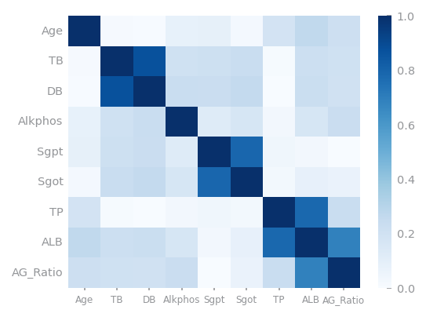537: The intrinsic dimensionality of this dataset is 8.
538: One of the variables ALB or DB can be discarded without losing information.
539: The variable AG_Ratio can be discarded without risking losing information.
540: Variables AG_Ratio and DB are redundant, but we can’t say the same for the pair Sgpt and Sgot.
541: Variables Sgpt and AG_Ratio are redundant.
542: From the correlation analysis alone, it is clear that there are relevant variables.
543: Variable Sgpt seems to be relevant for the majority of mining tasks.
544: Variables Age and DB seem to be useful for classification tasks.
545: Applying a non-supervised feature selection based on the redundancy, would not increase the performance of the generality of the training algorithms in this dataset.
546: Removing variable DB might improve the training of decision trees .
547: There is evidence in favour for sequential backward selection to select variable DB previously than variable TB.

548: Variable ALB is balanced.
549: Those boxplots show that the data is not normalized.
550: It is clear that variable Sgpt shows some outliers, but we can’t be sure of the same for variable TP.
551: Outliers seem to be a problem in the dataset.
552: Variable Sgot shows a high number of outlier values.
553: Variable TP doesn’t have any outliers.
554: Variable Age presents some outliers.
555: At least 75 of the variables present outliers.
556: The histograms presented show a large number of outliers for most of the numeric variables.
557: The existence of outliers is one of the problems to tackle in this dataset.
558: A scaling transformation is mandatory, in order to improve the KNN performance in this dataset.
559: Multiplying ratio and Boolean variables by 100, and variables with a range between 0 and 10 by 10, would have an impact similar to other scaling transformations.
560: Normalization of this dataset could not have impact on a KNN classifier.
561: Scaling this dataset would be mandatory to improve the results with distance-based methods.
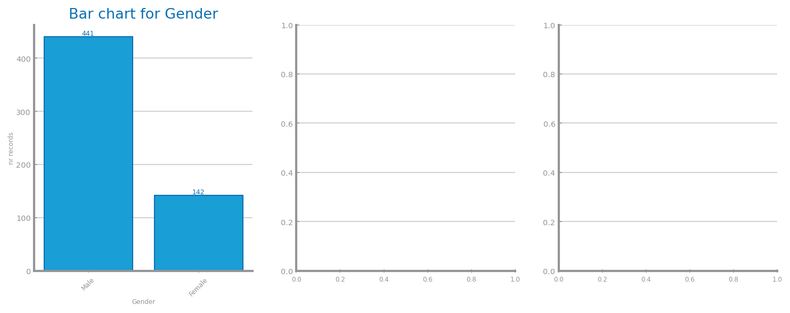562: All variables, but the class, should be dealt with as numeric.
563: The variable Gender can be seen as ordinal.
564: The variable Gender can be seen as ordinal without losing information.
565: Considering the common semantics for Gender and
566: Considering the common semantics for Gender variable, dummification would be the most adequate encoding.
567: The variable Gender can be coded as ordinal without losing information.
568: Feature generation based on variable Gender seems to be promising.
569: Feature generation based on the use of variable Gender wouldn’t be useful, but the use of
570: Given the usual semantics of Gender variable, dummification would have been a better codification.
571: It is better to drop the variable Gender than removing all records with missing values.
572: Not knowing the semantics of Gender variable, dummification could have been a more adequate codification.
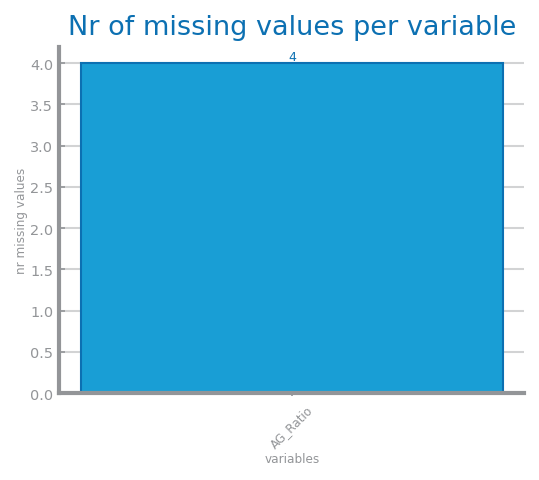573: Discarding variable AG_Ratio would be better than discarding all the records with missing values for that variable.
574: Dropping all records with missing values would be better than to drop the variables with missing values.
575: Dropping all rows with missing values can lead to a dataset with less than 30% of the original data.
576: There is no reason to believe that discarding records showing missing values is safer than discarding the corresponding variables in this case.
577: Feature generation based on variable AG_Ratio seems to be promising.
578: It is better to drop the variable AG_Ratio than removing all records with missing values.
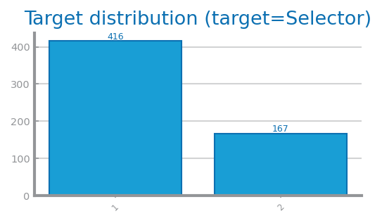579: Balancing this dataset would be mandatory to improve the results.
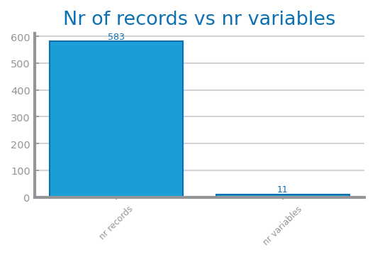580: Given the number of records and that some variables are date, we might be facing the curse of dimensionality.
581: We face the curse of dimensionality when training a classifier with this dataset.
582: Balancing this dataset by SMOTE would most probably be preferable over undersampling.
583: All variables, but the class, should be dealt with as binary.
584: The variable ALB can be seen as ordinal.
585: The variable AG_Ratio can be seen as ordinal without losing information.
586: Variable Age is balanced.
587: It is clear that variable Sgot shows some outliers, but we can’t be sure of the same for variable Age.
588: Outliers seem to be a problem in the dataset.
589: Variable ALB shows a high number of outlier values.
590: Variable DB doesn’t have any outliers.
591: Variable Alkphos presents some outliers.
592: At least 50 of the variables present outliers.
593: The histograms presented show a large number of outliers for most of the numeric variables.
594: The existence of outliers is one of the problems to tackle in this dataset.
595: Considering the common semantics for Age and TB variables, dummification if applied would increase the risk of facing the curse of dimensionality.
596: Considering the common semantics for TB variable, dummification would be the most adequate encoding.
597: The variable AG_Ratio can be coded as ordinal without losing information.
598: Feature generation based on variable ALB seems to be promising.
599: Feature generation based on the use of variable Sgpt wouldn’t be useful, but the use of Age seems to be promising.
600: Given the usual semantics of Alkphos variable, dummification would have been a better codification.
601: It is better to drop the variable AG_Ratio than removing all records with missing values.
602: Not knowing the semantics of AG_Ratio variable, dummification could have been a more adequate codification.
603: The variable lead_time discriminates between the target values, as shown in the decision tree.
604: Variable no_of_special_requests is one of the most relevant variables.
605: A smaller tree would be delivered if we would apply post-pruning, accepting an accuracy reduction of 5%.
606: As reported in the tree, the number of False Positive is bigger than the number of False Negatives.
607: The recall for the presented tree is lower than 75%.
608: The number of True Positives is higher than the number of False Negatives for the presented tree.
609: The number of True Negatives is lower than the number of False Positives for the presented tree.
610: The variable lead_time discriminates between the target values, as shown in the decision tree.
611: Considering that A=True<=>[lead_time <= 151.5] and B=True<=>[no_of_special_requests <= 2.5], it is possible to state that KNN algorithm classifies (A, not B) as Canceled for any k ≤ 4955.
612: Considering that A=True<=>[lead_time <= 151.5] and B=True<=>[no_of_special_requests <= 2.5], it is possible to state that KNN algorithm classifies (A,B) as Not_Canceled for any k ≤ 10612.
613: Considering that A=True<=>[lead_time <= 151.5] and B=True<=>[no_of_special_requests <= 2.5], it is possible to state that KNN algorithm classifies (A,B) as Canceled for any k ≤ 9756.

614: We are able to identify the existence of overfitting for MLP models trained longer than 700 episodes.

615: We are able to identify the existence of overfitting for gradient boosting models with more than 1002 estimators.
616: Results for Random Forests identified as 3, may be explained by its estimators being in underfitting.
617: The random forests results shown can be explained by the lack of diversity resulting from the number of features considered.
618: We are able to identify the existence of overfitting for random forest models with more than 502 estimators.

619: KNN is in overfitting for k less than 5.
620: KNN with 7 neighbour is in overfitting.
621: KNN with more than 15 neighbours is in overfitting.
622: We are able to identify the existence of overfitting for KNN models with less than 4 neighbors.

623: According to the decision tree overfitting chart, the tree with 12 nodes of depth is in overfitting.
624: The chart reporting the recall for different trees shows that the model enters in overfitting for models with depth higher than 3.
625: The decision tree is in overfitting for depths above 8.
626: We are able to identify the existence of overfitting for decision tree models with more than 6 nodes of depth.
627: The difference between recall and accuracy becomes smaller with the depth due to the overfitting phenomenon.
628: The first 3 principal components are enough for explaining half the data variance.
629: Using the first 5 principal components would imply an error between 10 and 20%.

630: The intrinsic dimensionality of this dataset is 3.
631: One of the variables arrival_month or no_of_special_requests can be discarded without losing information.
632: The variable no_of_adults can be discarded without risking losing information.
633: Variables no_of_adults and arrival_month are redundant, but we can’t say the same for the pair no_of_week_nights and no_of_weekend_nights.
634: Variables no_of_adults and no_of_week_nights are redundant.
635: From the correlation analysis alone, it is clear that there are relevant variables.
636: Variable arrival_month seems to be relevant for the majority of mining tasks.
637: Variables arrival_month and no_of_adults seem to be useful for classification tasks.
638: Applying a non-supervised feature selection based on the redundancy, would not increase the performance of the generality of the training algorithms in this dataset.
639: Removing variable no_of_adults might improve the training of decision trees .
640: There is evidence in favour for sequential backward selection to select variable arrival_date previously than variable no_of_week_nights.
641: Variable arrival_date is balanced.
642: Those boxplots show that the data is not normalized.
643: It is clear that variable no_of_weekend_nights shows some outliers, but we can’t be sure of the same for variable lead_time.
644: Outliers seem to be a problem in the dataset.
645: Variable no_of_week_nights shows a high number of outlier values.
646: Variable no_of_week_nights doesn’t have any outliers.
647: Variable avg_price_per_room presents some outliers.
648: At least 85 of the variables present outliers.
649: The histograms presented show a large number of outliers for most of the numeric variables.
650: The existence of outliers is one of the problems to tackle in this dataset.
651: A scaling transformation is mandatory, in order to improve the KNN performance in this dataset.
652: Multiplying ratio and Boolean variables by 100, and variables with a range between 0 and 10 by 10, would have an impact similar to other scaling transformations.
653: Normalization of this dataset could not have impact on a KNN classifier.
654: Scaling this dataset would be mandatory to improve the results with distance-based methods.

655: All variables, but the class, should be dealt with as symbolic.
656: The variable room_type_reserved can be seen as ordinal.
657: The variable type_of_meal_plan can be seen as ordinal without losing information.
658: Considering the common semantics for arrival_year and type_of_meal_plan variables, dummification if applied would increase the risk of facing the curse of dimensionality.
659: Considering the common semantics for type_of_meal_plan variable, dummification would be the most adequate encoding.
660: The variable type_of_meal_plan can be coded as ordinal without losing information.
661: Feature generation based on variable arrival_year seems to be promising.
662: Feature generation based on the use of variable required_car_parking_space wouldn’t be useful, but the use of type_of_meal_plan seems to be promising.
663: Given the usual semantics of required_car_parking_space variable, dummification would have been a better codification.
664: It is better to drop the variable required_car_parking_space than removing all records with missing values.
665: Not knowing the semantics of arrival_year variable, dummification could have been a more adequate codification.

666: Balancing this dataset would be mandatory to improve the results.
667: Given the number of records and that some variables are numeric, we might be facing the curse of dimensionality.
668: We face the curse of dimensionality when training a classifier with this dataset.
669: Balancing this dataset by SMOTE would most probably be preferable over undersampling.
670: All variables, but the class, should be dealt with as date.
671: The variable arrival_date can be seen as ordinal.
672: The variable no_of_children can be seen as ordinal without losing information.
673: Variable no_of_children is balanced.
674: It is clear that variable no_of_special_requests shows some outliers, but we can’t be sure of the same for variable avg_price_per_room.
675: Outliers seem to be a problem in the dataset.
676: Variable arrival_date shows a high number of outlier values.
677: Variable no_of_adults doesn’t have any outliers.
678: Variable no_of_weekend_nights presents some outliers.
679: At least 75 of the variables present outliers.
680: The boxplots presented show a large number of outliers for most of the numeric variables.
681: The existence of outliers is one of the problems to tackle in this dataset.
682: Considering the common semantics for arrival_date and no_of_adults variables, dummification if applied would increase the risk of facing the curse of dimensionality.
683: Considering the common semantics for no_of_special_requests variable, dummification would be the most adequate encoding.
684: The variable avg_price_per_room can be coded as ordinal without losing information.
685: Feature generation based on variable no_of_special_requests seems to be promising.
686: Feature generation based on the use of variable no_of_week_nights wouldn’t be useful, but the use of no_of_adults seems to be promising.
687: Given the usual semantics of no_of_adults variable, dummification would have been a better codification.
688: It is better to drop the variable arrival_date than removing all records with missing values.
689: Not knowing the semantics of no_of_week_nights variable, dummification could have been a more adequate codification.

690: The variable bullying discriminates between the target values, as shown in the decision tree.
691: Variable basic_needs is one of the most relevant variables.
692: A smaller tree would be delivered if we would apply post-pruning, accepting an accuracy reduction of 6%.
693: As reported in the tree, the number of False Positive is bigger than the number of False Negatives.
694: The precision for the presented tree is higher than 60%.
695: The number of False Positives reported in the same tree is 30.
696: The number of True Positives is higher than the number of False Negatives for the presented tree.
697: The variable basic_needs seems to be one of the four most relevant features.
698: Considering that A=True<=>[basic_needs <= 3.5] and B=True<=>[bullying <= 1.5], the Decision Tree presented classifies (A, not B) as 2.
699: Considering that A=True<=>[basic_needs <= 3.5] and B=True<=>[bullying <= 1.5], the Decision Tree presented classifies (not A, B) as 1.
700: Considering that A=True<=>[basic_needs <= 3.5] and B=True<=>[bullying <= 1.5], it is possible to state that KNN algorithm classifies (A, not B) as 0 for any k ≤ 271.
701: We are able to identify the existence of overfitting for MLP models trained longer than 700 episodes.

702: We are able to identify the existence of overfitting for gradient boosting models with more than 1002 estimators.
703: Results for Random Forests identified as 2, may be explained by its estimators being in underfitting.
704: The random forests results shown can be explained by the lack of diversity resulting from the number of features considered.
705: We are able to identify the existence of overfitting for random forest models with more than 1002 estimators.

706: KNN is in overfitting for k larger than 17.
707: KNN with 5 neighbour is in overfitting.
708: KNN with more than 17 neighbours is in overfitting.
709: We are able to identify the existence of overfitting for KNN models with less than 5 neighbors.

710: According to the decision tree overfitting chart, the tree with 20 nodes of depth is in overfitting.
711: The chart reporting the recall for different trees shows that the model enters in overfitting for models with depth higher than 6.
712: The decision tree is in overfitting for depths above 6.
713: We are able to identify the existence of overfitting for decision tree models with more than 2 nodes of depth.
714: The first 4 principal components are enough for explaining half the data variance.
715: Using the first 2 principal components would imply an error between 5 and 25%.
716: The intrinsic dimensionality of this dataset is 6.
717: One of the variables headache or bullying can be discarded without losing information.
718: The variable breathing_problem can be discarded without risking losing information.
719: Variables anxiety_level and bullying are redundant, but we can’t say the same for the pair study_load and living_conditions.
720: Variables bullying and depression are redundant.
721: From the correlation analysis alone, it is clear that there are relevant variables.
722: Variable breathing_problem seems to be relevant for the majority of mining tasks.
723: Variables living_conditions and breathing_problem seem to be useful for classification tasks.
724: Applying a non-supervised feature selection based on the redundancy, would not increase the performance of the generality of the training algorithms in this dataset.
725: Removing variable basic_needs might improve the training of decision trees .
726: There is evidence in favour for sequential backward selection to select variable basic_needs previously than variable self_esteem.
727: Variable study_load is balanced.
728: Those boxplots show that the data is not normalized.
729: It is clear that variable self_esteem shows some outliers, but we can’t be sure of the same for variable anxiety_level.
730: Outliers seem to be a problem in the dataset.
731: Variable basic_needs shows some outlier values.
732: Variable headache doesn’t have any outliers.
733: Variable depression presents some outliers.
734: At least 60 of the variables present outliers.
735: The histograms presented show a large number of outliers for most of the numeric variables.
736: The existence of outliers is one of the problems to tackle in this dataset.
737: A scaling transformation is mandatory, in order to improve the KNN performance in this dataset.
738: Multiplying ratio and Boolean variables by 100, and variables with a range between 0 and 10 by 10, would have an impact similar to other scaling transformations.
739: Normalization of this dataset could not have impact on a KNN classifier.
740: Scaling this dataset would be mandatory to improve the results with distance-based methods.
741: All variables, but the class, should be dealt with as symbolic.
742: The variable mental_health_history can be seen as ordinal.
743: The variable mental_health_history can be seen as ordinal without losing information.
744: Considering the common semantics for mental_health_history and
745: Considering the common semantics for mental_health_history variable, dummification would be the most adequate encoding.
746: The variable mental_health_history can be coded as ordinal without losing information.
747: Feature generation based on variable mental_health_history seems to be promising.
748: Feature generation based on the use of variable mental_health_history wouldn’t be useful, but the use of
749: Given the usual semantics of mental_health_history variable, dummification would have been a better codification.
750: It is better to drop the variable mental_health_history than removing all records with missing values.
751: Not knowing the semantics of mental_health_history variable, dummification could have been a more adequate codification.
752: Balancing this dataset would be mandatory to improve the results.
753: Given the number of records and that some variables are numeric, we might be facing the curse of dimensionality.
754: We face the curse of dimensionality when training a classifier with this dataset.
755: Balancing this dataset by SMOTE would most probably be preferable over undersampling.

756: All variables, but the class, should be dealt with as symbolic.
757: The variable living_conditions can be seen as ordinal.
758: The variable breathing_problem can be seen as ordinal without losing information.
759: Variable breathing_problem is balanced.
760: It is clear that variable depression shows some outliers, but we can’t be sure of the same for variable study_load.
761: Outliers seem to be a problem in the dataset.
762: Variable bullying shows a high number of outlier values.
763: Variable headache doesn’t have any outliers.
764: Variable anxiety_level presents some outliers.
765: At least 60 of the variables present outliers.
766: The histograms presented show a large number of outliers for most of the numeric variables.
767: The existence of outliers is one of the problems to tackle in this dataset.
768: Considering the common semantics for sleep_quality and anxiety_level variables, dummification if applied would increase the risk of facing the curse of dimensionality.
769: Considering the common semantics for headache variable, dummification would be the most adequate encoding.
770: The variable breathing_problem can be coded as ordinal without losing information.
771: Feature generation based on variable self_esteem seems to be promising.
772: Feature generation based on the use of variable anxiety_level wouldn’t be useful, but the use of self_esteem seems to be promising.
773: Given the usual semantics of study_load variable, dummification would have been a better codification.
774: It is better to drop the variable depression than removing all records with missing values.
775: Not knowing the semantics of basic_needs variable, dummification could have been a more adequate codification.

776: The variable chlorides discriminates between the target values, as shown in the decision tree.
777: Variable density is one of the most relevant variables.
778: A smaller tree would be delivered if we would apply post-pruning, accepting an accuracy reduction of 8%.
779: As reported in the tree, the number of False Positive is smaller than the number of False Negatives.
780: The precision for the presented tree is higher than 75%.
781: The number of False Negatives is lower than the number of True Negatives for the presented tree.
782: The number of False Positives is lower than the number of False Negatives for the presented tree.
783: The number of False Positives reported in the same tree is 10.
784: Considering that A=True<=>[density <= 1.0] and B=True<=>[chlorides <= 0.08], it is possible to state that KNN algorithm classifies (not A, not B) as 6 for any k ≤ 447.
785: Considering that A=True<=>[density <= 1.0] and B=True<=>[chlorides <= 0.08], it is possible to state that Naive Bayes algorithm classifies (A, not B), as 3.
786: Considering that A=True<=>[density <= 1.0] and B=True<=>[chlorides <= 0.08], it is possible to state that KNN algorithm classifies (not A, not B) as 5 for any k ≤ 172.

787: We are able to identify the existence of overfitting for MLP models trained longer than 500 episodes.
788: We are able to identify the existence of overfitting for gradient boosting models with more than 502 estimators.
789: Results for Random Forests identified as 3, may be explained by its estimators being in overfitting.
790: The random forests results shown can be explained by the lack of diversity resulting from the number of features considered.
791: We are able to identify the existence of overfitting for random forest models with more than 502 estimators.
792: KNN is in overfitting for k larger than 13.
793: KNN with 7 neighbour is in overfitting.
794: KNN with more than 7 neighbours is in overfitting.
795: We are able to identify the existence of overfitting for KNN models with less than 6 neighbors.
796: According to the decision tree overfitting chart, the tree with 16 nodes of depth is in overfitting.
797: The chart reporting the recall for different trees shows that the model enters in overfitting for models with depth higher than 8.
798: The decision tree is in overfitting for depths above 10.
799: We are able to identify the existence of overfitting for decision tree models with more than 5 nodes of depth.
800: The first 8 principal components are enough for explaining half the data variance.
801: Using the first 6 principal components would imply an error between 15 and 25%.

802: The intrinsic dimensionality of this dataset is 5.
803: One of the variables citric acid or residual sugar can be discarded without losing information.
804: The variable chlorides can be discarded without risking losing information.
805: Variables sulphates and pH are redundant, but we can’t say the same for the pair free sulfur dioxide and volatile acidity.
806: Variables free sulfur dioxide and total sulfur dioxide are redundant.
807: From the correlation analysis alone, it is clear that there are relevant variables.
808: Variable volatile acidity seems to be relevant for the majority of mining tasks.
809: Variables chlorides and citric acid seem to be useful for classification tasks.
810: Applying a non-supervised feature selection based on the redundancy, would not increase the performance of the generality of the training algorithms in this dataset.
811: Removing variable fixed acidity might improve the training of decision trees .
812: There is evidence in favour for sequential backward selection to select variable pH previously than variable chlorides.
813: Variable citric acid is balanced.
814: Those boxplots show that the data is not normalized.
815: It is clear that variable pH shows some outliers, but we can’t be sure of the same for variable volatile acidity.
816: Outliers seem to be a problem in the dataset.
817: Variable free sulfur dioxide shows a high number of outlier values.
818: Variable chlorides doesn’t have any outliers.
819: Variable total sulfur dioxide presents some outliers.
820: At least 75 of the variables present outliers.
821: The histograms presented show a large number of outliers for most of the numeric variables.
822: The existence of outliers is one of the problems to tackle in this dataset.
823: A scaling transformation is mandatory, in order to improve the Naive Bayes performance in this dataset.
824: Multiplying ratio and Boolean variables by 100, and variables with a range between 0 and 10 by 10, would have an impact similar to other scaling transformations.
825: Normalization of this dataset could not have impact on a KNN classifier.
826: Scaling this dataset would be mandatory to improve the results with distance-based methods.
827: Balancing this dataset would be mandatory to improve the results.

828: Given the number of records and that some variables are symbolic, we might be facing the curse of dimensionality.
829: We face the curse of dimensionality when training a classifier with this dataset.
830: Balancing this dataset by SMOTE would most probably be preferable over undersampling.
831: All variables, but the class, should be dealt with as numeric.
832: The variable fixed acidity can be seen as ordinal.
833: The variable pH can be seen as ordinal without losing information.
834: Variable free sulfur dioxide is balanced.
835: It is clear that variable alcohol shows some outliers, but we can’t be sure of the same for variable sulphates.
836: Outliers seem to be a problem in the dataset.
837: Variable sulphates shows a high number of outlier values.
838: Variable pH doesn’t have any outliers.
839: Variable citric acid presents some outliers.
840: At least 75 of the variables present outliers.
841: The histograms presented show a large number of outliers for most of the numeric variables.
842: The existence of outliers is one of the problems to tackle in this dataset.
843: Considering the common semantics for citric acid and fixed acidity variables, dummification if applied would increase the risk of facing the curse of dimensionality.
844: Considering the common semantics for citric acid variable, dummification would be the most adequate encoding.
845: The variable pH can be coded as ordinal without losing information.
846: Feature generation based on variable density seems to be promising.
847: Feature generation based on the use of variable sulphates wouldn’t be useful, but the use of fixed acidity seems to be promising.
848: Given the usual semantics of citric acid variable, dummification would have been a better codification.
849: It is better to drop the variable free sulfur dioxide than removing all records with missing values.
850: Not knowing the semantics of pH variable, dummification could have been a more adequate codification.

851: The variable ApplicantIncome discriminates between the target values, as shown in the decision tree.
852: Variable ApplicantIncome is one of the most relevant variables.
853: A smaller tree would be delivered if we would apply post-pruning, accepting an accuracy reduction of 5%.
854: As reported in the tree, the number of False Positive is bigger than the number of False Negatives.
855: The recall for the presented tree is lower than 90%.
856: The number of False Positives is higher than the number of True Negatives for the presented tree.
857: The number of False Negatives is higher than the number of True Positives for the presented tree.
858: The recall for the presented tree is higher than its accuracy.
859: Considering that A=True<=>[Loan_Amount_Term <= 420.0] and B=True<=>[ApplicantIncome <= 1519.0], it is possible to state that KNN algorithm classifies (not A, not B) as Y for any k ≤ 3.
860: Considering that A=True<=>[Loan_Amount_Term <= 420.0] and B=True<=>[ApplicantIncome <= 1519.0], it is possible to state that KNN algorithm classifies (not A, B) as N for any k ≤ 204.
861: Considering that A=True<=>[Loan_Amount_Term <= 420.0] and B=True<=>[ApplicantIncome <= 1519.0], it is possible to state that Naive Bayes algorithm classifies (not A, not B), as N.

862: We are able to identify the existence of overfitting for MLP models trained longer than 300 episodes.

863: We are able to identify the existence of overfitting for gradient boosting models with more than 502 estimators.

864: Results for Random Forests identified as 2, may be explained by its estimators being in underfitting.
865: The random forests results shown can be explained by the lack of diversity resulting from the number of features considered.
866: We are able to identify the existence of overfitting for random forest models with more than 1502 estimators.

867: KNN is in overfitting for k larger than 13.
868: KNN with 7 neighbour is in overfitting.
869: KNN with more than 15 neighbours is in overfitting.
870: We are able to identify the existence of overfitting for KNN models with less than 5 neighbors.

871: According to the decision tree overfitting chart, the tree with 16 nodes of depth is in overfitting.
872: The chart reporting the recall for different trees shows that the model enters in overfitting for models with depth higher than 5.
873: The decision tree is in overfitting for depths above 10.
874: We are able to identify the existence of overfitting for decision tree models with more than 3 nodes of depth.
875: The difference between recall and accuracy becomes smaller with the depth due to the overfitting phenomenon.

876: The first 2 principal components are enough for explaining half the data variance.
877: Using the first 2 principal components would imply an error between 10 and 20%.

878: The intrinsic dimensionality of this dataset is 2.
879: One of the variables CoapplicantIncome or ApplicantIncome can be discarded without losing information.
880: The variable CoapplicantIncome can be discarded without risking losing information.
881: Variables ApplicantIncome and LoanAmount seem to be useful for classification tasks.
882: Variables Loan_Amount_Term and CoapplicantIncome are redundant.
883: From the correlation analysis alone, it is clear that there are relevant variables.
884: Variable ApplicantIncome seems to be relevant for the majority of mining tasks.
885: Variables CoapplicantIncome and ApplicantIncome seem to be useful for classification tasks.
886: Applying a non-supervised feature selection based on the redundancy, would not increase the performance of the generality of the training algorithms in this dataset.
887: Removing variable LoanAmount might improve the training of decision trees .
888: There is evidence in favour for sequential backward selection to select variable CoapplicantIncome previously than variable Loan_Amount_Term.
889: Variable Loan_Amount_Term is balanced.
890: Those boxplots show that the data is not normalized.
891: It is clear that variable Loan_Amount_Term shows some outliers, but we can’t be sure of the same for variable ApplicantIncome.
892: Outliers seem to be a problem in the dataset.
893: Variable ApplicantIncome shows a high number of outlier values.
894: Variable Loan_Amount_Term doesn’t have any outliers.
895: Variable ApplicantIncome presents some outliers.
896: At least 50 of the variables present outliers.
897: The boxplots presented show a large number of outliers for most of the numeric variables.
898: The existence of outliers is one of the problems to tackle in this dataset.
899: A scaling transformation is mandatory, in order to improve the KNN performance in this dataset.
900: Multiplying ratio and Boolean variables by 100, and variables with a range between 0 and 10 by 10, would have an impact similar to other scaling transformations.
901: Normalization of this dataset could not have impact on a KNN classifier.
902: Scaling this dataset would be mandatory to improve the results with distance-based methods.
903: All variables, but the class, should be dealt with as numeric.
904: The variable Credit_History can be seen as ordinal.
905: The variable Married can be seen as ordinal without losing information.
906: Considering the common semantics for Credit_History and Dependents variables, dummification if applied would increase the risk of facing the curse of dimensionality.
907: Considering the common semantics for Property_Area variable, dummification would be the most adequate encoding.
908: The variable Dependents can be coded as ordinal without losing information.
909: Feature generation based on variable Dependents seems to be promising.
910: Feature generation based on the use of variable Self_Employed wouldn’t be useful, but the use of Dependents seems to be promising.
911: Given the usual semantics of Education variable, dummification would have been a better codification.
912: It is better to drop the variable Property_Area than removing all records with missing values.
913: Not knowing the semantics of Dependents variable, dummification could have been a more adequate codification.
914: Discarding variable Gender would be better than discarding all the records with missing values for that variable.
915: Dropping all records with missing values would be better than to drop the variables with missing values.
916: Dropping all rows with missing values can lead to a dataset with less than 25% of the original data.
917: There is no reason to believe that discarding records showing missing values is safer than discarding the corresponding variables in this case.
918: Feature generation based on variable Dependents seems to be promising.
919: It is better to drop the variable Self_Employed than removing all records with missing values.
920: Balancing this dataset would be mandatory to improve the results.

921: Given the number of records and that some variables are symbolic, we might be facing the curse of dimensionality.
922: We face the curse of dimensionality when training a classifier with this dataset.
923: Balancing this dataset by SMOTE would most probably be preferable over undersampling.

924: All variables, but the class, should be dealt with as date.
925: The variable Loan_Amount_Term can be seen as ordinal.
926: The variable CoapplicantIncome can be seen as ordinal without losing information.
927: Variable LoanAmount is balanced.
928: It is clear that variable LoanAmount shows some outliers, but we can’t be sure of the same for variable Loan_Amount_Term.
929: Outliers seem to be a problem in the dataset.
930: Variable Loan_Amount_Term shows a high number of outlier values.
931: Variable Loan_Amount_Term doesn’t have any outliers.
932: Variable LoanAmount presents some outliers.
933: At least 85 of the variables present outliers.
934: The boxplots presented show a large number of outliers for most of the numeric variables.
935: The existence of outliers is one of the problems to tackle in this dataset.
936: Considering the common semantics for LoanAmount and ApplicantIncome variables, dummification if applied would increase the risk of facing the curse of dimensionality.
937: Considering the common semantics for LoanAmount variable, dummification would be the most adequate encoding.
938: The variable LoanAmount can be coded as ordinal without losing information.
939: Feature generation based on variable LoanAmount seems to be promising.
940: Feature generation based on the use of variable CoapplicantIncome wouldn’t be useful, but the use of ApplicantIncome seems to be promising.
941: Given the usual semantics of ApplicantIncome variable, dummification would have been a better codification.
942: It is better to drop the variable ApplicantIncome than removing all records with missing values.
943: Not knowing the semantics of Loan_Amount_Term variable, dummification could have been a more adequate codification.
944: The variable Area discriminates between the target values, as shown in the decision tree.
945: Variable AspectRation is one of the most relevant variables.
946: A smaller tree would be delivered if we would apply post-pruning, accepting an accuracy reduction of 6%.
947: As reported in the tree, the number of False Positive is bigger than the number of False Negatives.
948: The recall for the presented tree is higher than 60%.
949: The number of True Positives is lower than the number of False Negatives for the presented tree.
950: The number of True Positives is higher than the number of False Positives for the presented tree.
951: The precision for the presented tree is higher than its specificity.
952: Considering that A=True<=>[Area <= 39172.5] and B=True<=>[AspectRation <= 1.86], it is possible to state that KNN algorithm classifies (not A, not B) as SEKER for any k ≤ 1284.
953: Considering that A=True<=>[Area <= 39172.5] and B=True<=>[AspectRation <= 1.86], the Decision Tree presented classifies (not A, B) as BOMBAY.
954: Considering that A=True<=>[Area <= 39172.5] and B=True<=>[AspectRation <= 1.86], it is possible to state that KNN algorithm classifies (A,B) as DERMASON for any k ≤ 2501.
955: We are able to identify the existence of overfitting for MLP models trained longer than 700 episodes.
956: We are able to identify the existence of overfitting for gradient boosting models with more than 1502 estimators.

957: Results for Random Forests identified as 3, may be explained by its estimators being in underfitting.
958: The random forests results shown can be explained by the lack of diversity resulting from the number of features considered.
959: We are able to identify the existence of overfitting for random forest models with more than 1502 estimators.
960: KNN is in overfitting for k larger than 17.
961: KNN with 5 neighbour is in overfitting.
962: KNN with more than 15 neighbours is in overfitting.
963: We are able to identify the existence of overfitting for KNN models with less than 6 neighbors.
964: According to the decision tree overfitting chart, the tree with 16 nodes of depth is in overfitting.
965: The chart reporting the recall for different trees shows that the model enters in overfitting for models with depth higher than 8.
966: The decision tree is in overfitting for depths above 8.
967: We are able to identify the existence of overfitting for decision tree models with more than 4 nodes of depth.
968: The first 6 principal components are enough for explaining half the data variance.
969: Using the first 2 principal components would imply an error between 15 and 25%.

970: The intrinsic dimensionality of this dataset is 9.
971: One of the variables MinorAxisLength or Eccentricity can be discarded without losing information.
972: The variable Eccentricity can be discarded without risking losing information.
973: Variables MinorAxisLength and Solidity are redundant, but we can’t say the same for the pair ShapeFactor1 and Extent.
974: Variables roundness and ShapeFactor1 are redundant.
975: From the correlation analysis alone, it is clear that there are relevant variables.
976: Variable ShapeFactor1 seems to be relevant for the majority of mining tasks.
977: Variables Perimeter and Eccentricity seem to be useful for classification tasks.
978: Applying a non-supervised feature selection based on the redundancy, would not increase the performance of the generality of the training algorithms in this dataset.
979: Removing variable Solidity might improve the training of decision trees .
980: There is evidence in favour for sequential backward selection to select variable Eccentricity previously than variable EquivDiameter.
981: Variable MinorAxisLength is balanced.
982: Those boxplots show that the data is not normalized.
983: It is clear that variable Solidity shows some outliers, but we can’t be sure of the same for variable EquivDiameter.
984: Outliers seem to be a problem in the dataset.
985: Variable Solidity shows some outlier values.
986: Variable roundness doesn’t have any outliers.
987: Variable Eccentricity presents some outliers.
988: At least 50 of the variables present outliers.
989: The boxplots presented show a large number of outliers for most of the numeric variables.
990: The existence of outliers is one of the problems to tackle in this dataset.
991: A scaling transformation is mandatory, in order to improve the KNN performance in this dataset.
992: Multiplying ratio and Boolean variables by 100, and variables with a range between 0 and 10 by 10, would have an impact similar to other scaling transformations.
993: Normalization of this dataset could not have impact on a KNN classifier.
994: Scaling this dataset would be mandatory to improve the results with distance-based methods.

995: Balancing this dataset would be mandatory to improve the results.

996: Given the number of records and that some variables are date, we might be facing the curse of dimensionality.
997: We face the curse of dimensionality when training a classifier with this dataset.
998: Balancing this dataset by SMOTE would most probably be preferable over undersampling.
999: All variables, but the class, should be dealt with as date.
1000: The variable Perimeter can be seen as ordinal.
1001: The variable Extent can be seen as ordinal without losing information.
1002: Variable Solidity is balanced.
1003: It is clear that variable EquivDiameter shows some outliers, but we can’t be sure of the same for variable MinorAxisLength.
1004: Outliers seem to be a problem in the dataset.
1005: Variable Area shows some outlier values.
1006: Variable roundness doesn’t have any outliers.
1007: Variable Solidity presents some outliers.
1008: At least 85 of the variables present outliers.
1009: The histograms presented show a large number of outliers for most of the numeric variables.
1010: The existence of outliers is one of the problems to tackle in this dataset.
1011: Considering the common semantics for AspectRation and Area variables, dummification if applied would increase the risk of facing the curse of dimensionality.
1012: Considering the common semantics for EquivDiameter variable, dummification would be the most adequate encoding.
1013: The variable roundness can be coded as ordinal without losing information.
1014: Feature generation based on variable EquivDiameter seems to be promising.
1015: Feature generation based on the use of variable MinorAxisLength wouldn’t be useful, but the use of Area seems to be promising.
1016: Given the usual semantics of roundness variable, dummification would have been a better codification.
1017: It is better to drop the variable Solidity than removing all records with missing values.
1018: Not knowing the semantics of Perimeter variable, dummification could have been a more adequate codification.
1019: The variable residence_since discriminates between the target values, as shown in the decision tree.
1020: Variable residence_since is one of the most relevant variables.
1021: A smaller tree would be delivered if we would apply post-pruning, accepting an accuracy reduction of 8%.
1022: As reported in the tree, the number of False Positive is bigger than the number of False Negatives.
1023: The accuracy for the presented tree is higher than 90%.
1024: The number of False Negatives is lower than the number of True Positives for the presented tree.
1025: The number of True Positives is higher than the number of False Positives for the presented tree.
1026: The accuracy for the presented tree is higher than its recall.
1027: Considering that A=True<=>[existing_credits <= 1.5] and B=True<=>[residence_since <= 3.5], it is possible to state that KNN algorithm classifies (not A, not B) as bad for any k ≤ 107.
1028: Considering that A=True<=>[existing_credits <= 1.5] and B=True<=>[residence_since <= 3.5], it is possible to state that Naive Bayes algorithm classifies (not A, B), as bad.
1029: Considering that A=True<=>[existing_credits <= 1.5] and B=True<=>[residence_since <= 3.5], it is possible to state that KNN algorithm classifies (not A, not B) as bad for any k ≤ 264.

1030: We are able to identify the existence of overfitting for MLP models trained longer than 500 episodes.
1031: We are able to identify the existence of overfitting for gradient boosting models with more than 502 estimators.

1032: Results for Random Forests identified as 10, may be explained by its estimators being in underfitting.
1033: The random forests results shown can be explained by the lack of diversity resulting from the number of features considered.
1034: We are able to identify the existence of overfitting for random forest models with more than 1502 estimators.
1035: KNN is in overfitting for k less than 13.
1036: KNN with 7 neighbour is in overfitting.
1037: KNN with more than 15 neighbours is in overfitting.
1038: We are able to identify the existence of overfitting for KNN models with less than 5 neighbors.
1039: According to the decision tree overfitting chart, the tree with 16 nodes of depth is in overfitting.
1040: The chart reporting the recall for different trees shows that the model enters in overfitting for models with depth higher than 3.
1041: The decision tree is in overfitting for depths above 7.
1042: We are able to identify the existence of overfitting for decision tree models with more than 5 nodes of depth.

1043: The difference between recall and accuracy becomes smaller with the depth due to the overfitting phenomenon.
1044: The first 3 principal components are enough for explaining half the data variance.
1045: Using the first 4 principal components would imply an error between 5 and 20%.

1046: The intrinsic dimensionality of this dataset is 2.
1047: One of the variables age or credit_amount can be discarded without losing information.
1048: The variable existing_credits can be discarded without risking losing information.
1049: Variables existing_credits and credit_amount are redundant, but we can’t say the same for the pair duration and installment_commitment.
1050: Variables residence_since and existing_credits are redundant.
1051: From the correlation analysis alone, it is clear that there are relevant variables.
1052: Variable age seems to be relevant for the majority of mining tasks.
1053: Variables age and installment_commitment seem to be useful for classification tasks.
1054: Applying a non-supervised feature selection based on the redundancy, would not increase the performance of the generality of the training algorithms in this dataset.
1055: Removing variable credit_amount might improve the training of decision trees .
1056: There is evidence in favour for sequential backward selection to select variable existing_credits previously than variable credit_amount.
1057: Variable existing_credits is balanced.
1058: Those boxplots show that the data is not normalized.
1059: It is clear that variable age shows some outliers, but we can’t be sure of the same for variable residence_since.
1060: Outliers seem to be a problem in the dataset.
1061: Variable age shows some outlier values.
1062: Variable residence_since doesn’t have any outliers.
1063: Variable age presents some outliers.
1064: At least 50 of the variables present outliers.
1065: The histograms presented show a large number of outliers for most of the numeric variables.
1066: The existence of outliers is one of the problems to tackle in this dataset.
1067: A scaling transformation is mandatory, in order to improve the KNN performance in this dataset.
1068: Multiplying ratio and Boolean variables by 100, and variables with a range between 0 and 10 by 10, would have an impact similar to other scaling transformations.
1069: Normalization of this dataset could not have impact on a KNN classifier.
1070: Scaling this dataset would be mandatory to improve the results with distance-based methods.
1071: All variables, but the class, should be dealt with as numeric.
1072: The variable other_parties can be seen as ordinal.
1073: The variable employment can be seen as ordinal without losing information.
1074: Considering the common semantics for checking_status and employment variables, dummification if applied would increase the risk of facing the curse of dimensionality.
1075: Considering the common semantics for housing variable, dummification would be the most adequate encoding.
1076: The variable checking_status can be coded as ordinal without losing information.
1077: Feature generation based on variable num_dependents seems to be promising.
1078: Feature generation based on the use of variable employment wouldn’t be useful, but the use of checking_status seems to be promising.
1079: Given the usual semantics of own_telephone variable, dummification would have been a better codification.
1080: It is better to drop the variable num_dependents than removing all records with missing values.
1081: Not knowing the semantics of num_dependents variable, dummification could have been a more adequate codification.
1082: Balancing this dataset would be mandatory to improve the results.
1083: Given the number of records and that some variables are binary, we might be facing the curse of dimensionality.
1084: We face the curse of dimensionality when training a classifier with this dataset.
1085: Balancing this dataset by SMOTE would most probably be preferable over undersampling.
1086: All variables, but the class, should be dealt with as binary.
1087: The variable credit_amount can be seen as ordinal.
1088: The variable age can be seen as ordinal without losing information.
1089: Variable duration is balanced.
1090: It is clear that variable age shows some outliers, but we can’t be sure of the same for variable credit_amount.
1091: Outliers seem to be a problem in the dataset.
1092: Variable residence_since shows some outlier values.
1093: Variable credit_amount doesn’t have any outliers.
1094: Variable existing_credits presents some outliers.
1095: At least 60 of the variables present outliers.
1096: The boxplots presented show a large number of outliers for most of the numeric variables.
1097: The existence of outliers is one of the problems to tackle in this dataset.
1098: Considering the common semantics for residence_since and duration variables, dummification if applied would increase the risk of facing the curse of dimensionality.
1099: Considering the common semantics for installment_commitment variable, dummification would be the most adequate encoding.
1100: The variable age can be coded as ordinal without losing information.
1101: Feature generation based on variable residence_since seems to be promising.
1102: Feature generation based on the use of variable credit_amount wouldn’t be useful, but the use of duration seems to be promising.
1103: Given the usual semantics of age variable, dummification would have been a better codification.
1104: It is better to drop the variable residence_since than removing all records with missing values.
1105: Not knowing the semantics of installment_commitment variable, dummification could have been a more adequate codification.
1106: The variable Pressure3pm discriminates between the target values, as shown in the decision tree.
1107: Variable Rainfall is one of the most relevant variables.
1108: A smaller tree would be delivered if we would apply post-pruning, accepting an accuracy reduction of 10%.
1109: As reported in the tree, the number of False Positive is smaller than the number of False Negatives.
1110: The precision for the presented tree is lower than 60%.
1111: The number of True Negatives is lower than the number of False Positives for the presented tree.
1112: The number of False Negatives is lower than the number of False Positives for the presented tree.
1113: The accuracy for the presented tree is higher than 75%.
1114: Considering that A=True<=>[Rainfall <= 0.1] and B=True<=>[Pressure3pm <= 1009.65], the Decision Tree presented classifies (not A, not B) as No.
1115: Considering that A=True<=>[Rainfall <= 0.1] and B=True<=>[Pressure3pm <= 1009.65], the Decision Tree presented classifies (not A, B) as Yes.
1116: Considering that A=True<=>[Rainfall <= 0.1] and B=True<=>[Pressure3pm <= 1009.65], it is possible to state that Naive Bayes algorithm classifies (not A, not B), as No.

1117: We are able to identify the existence of overfitting for MLP models trained longer than 500 episodes.
1118: We are able to identify the existence of overfitting for gradient boosting models with more than 1502 estimators.

1119: Results for Random Forests identified as 3, may be explained by its estimators being in overfitting.
1120: The random forests results shown can be explained by the lack of diversity resulting from the number of features considered.
1121: We are able to identify the existence of overfitting for random forest models with more than 502 estimators.
1122: KNN is in overfitting for k less than 5.
1123: KNN with 5 neighbour is in overfitting.
1124: KNN with less than 17 neighbours is in overfitting.
1125: We are able to identify the existence of overfitting for KNN models with less than 2 neighbors.

1126: According to the decision tree overfitting chart, the tree with 5 nodes of depth is in overfitting.
1127: The chart reporting the recall for different trees shows that the model enters in overfitting for models with depth higher than 3.
1128: The decision tree is in overfitting for depths above 4.
1129: We are able to identify the existence of overfitting for decision tree models with more than 2 nodes of depth.
1130: The difference between recall and accuracy becomes smaller with the depth due to the overfitting phenomenon.

1131: The first 3 principal components are enough for explaining half the data variance.
1132: Using the first 6 principal components would imply an error between 5 and 20%.

1133: The intrinsic dimensionality of this dataset is 4.
1134: One of the variables Pressure9am or Pressure3pm can be discarded without losing information.
1135: The variable Pressure9am can be discarded without risking losing information.
1136: Variables Rainfall and Pressure3pm are redundant, but we can’t say the same for the pair Pressure9am and Cloud3pm.
1137: Variables Temp3pm and Rainfall are redundant.
1138: From the correlation analysis alone, it is clear that there are relevant variables.
1139: Variable Temp3pm seems to be relevant for the majority of mining tasks.
1140: Variables Pressure9am and Cloud3pm seem to be useful for classification tasks.
1141: Applying a non-supervised feature selection based on the redundancy, would not increase the performance of the generality of the training algorithms in this dataset.
1142: Removing variable Cloud9am might improve the training of decision trees .
1143: There is evidence in favour for sequential backward selection to select variable Cloud9am previously than variable Pressure9am.
1144: Variable Pressure9am is balanced.
1145: Those boxplots show that the data is not normalized.
1146: It is clear that variable Cloud9am shows some outliers, but we can’t be sure of the same for variable WindSpeed9am.
1147: Outliers seem to be a problem in the dataset.
1148: Variable Rainfall shows a high number of outlier values.
1149: Variable Cloud9am doesn’t have any outliers.
1150: Variable Cloud9am presents some outliers.
1151: At least 60 of the variables present outliers.
1152: The histograms presented show a large number of outliers for most of the numeric variables.
1153: The existence of outliers is one of the problems to tackle in this dataset.
1154: A scaling transformation is mandatory, in order to improve the Naive Bayes performance in this dataset.
1155: Multiplying ratio and Boolean variables by 100, and variables with a range between 0 and 10 by 10, would have an impact similar to other scaling transformations.
1156: Normalization of this dataset could not have impact on a KNN classifier.
1157: Scaling this dataset would be mandatory to improve the results with distance-based methods.
1158: All variables, but the class, should be dealt with as symbolic.
1159: The variable WindDir9am can be seen as ordinal.
1160: The variable WindDir3pm can be seen as ordinal without losing information.
1161: Considering the common semantics for Location and WindGustDir variables, dummification if applied would increase the risk of facing the curse of dimensionality.
1162: Considering the common semantics for WindGustDir variable, dummification would be the most adequate encoding.
1163: The variable WindDir3pm can be coded as ordinal without losing information.
1164: Feature generation based on variable WindDir3pm seems to be promising.
1165: Feature generation based on the use of variable WindDir3pm wouldn’t be useful, but the use of Location seems to be promising.
1166: Given the usual semantics of RainToday variable, dummification would have been a better codification.
1167: It is better to drop the variable Location than removing all records with missing values.
1168: Not knowing the semantics of WindGustDir variable, dummification could have been a more adequate codification.

1169: Discarding variable Pressure9am would be better than discarding all the records with missing values for that variable.
1170: Dropping all records with missing values would be better than to drop the variables with missing values.
1171: Dropping all rows with missing values can lead to a dataset with less than 25% of the original data.
1172: There is no reason to believe that discarding records showing missing values is safer than discarding the corresponding variables in this case.
1173: Feature generation based on variable RainToday seems to be promising.
1174: It is better to drop the variable Cloud9am than removing all records with missing values.

1175: Balancing this dataset would be mandatory to improve the results.
1176: Given the number of records and that some variables are numeric, we might be facing the curse of dimensionality.
1177: We face the curse of dimensionality when training a classifier with this dataset.
1178: Balancing this dataset by SMOTE would most probably be preferable over undersampling.
1179: All variables, but the class, should be dealt with as date.
1180: The variable Rainfall can be seen as ordinal.
1181: The variable Pressure3pm can be seen as ordinal without losing information.
1182: Variable Cloud3pm is balanced.
1183: It is clear that variable Pressure9am shows some outliers, but we can’t be sure of the same for variable Rainfall.
1184: Outliers seem to be a problem in the dataset.
1185: Variable Pressure9am shows some outlier values.
1186: Variable Cloud3pm doesn’t have any outliers.
1187: Variable Pressure9am presents some outliers.
1188: At least 85 of the variables present outliers.
1189: The histograms presented show a large number of outliers for most of the numeric variables.
1190: The existence of outliers is one of the problems to tackle in this dataset.
1191: Considering the common semantics for Pressure3pm and Rainfall variables, dummification if applied would increase the risk of facing the curse of dimensionality.
1192: Considering the common semantics for Rainfall variable, dummification would be the most adequate encoding.
1193: The variable Cloud9am can be coded as ordinal without losing information.
1194: Feature generation based on variable Temp3pm seems to be promising.
1195: Feature generation based on the use of variable Cloud9am wouldn’t be useful, but the use of Rainfall seems to be promising.
1196: Given the usual semantics of WindSpeed9am variable, dummification would have been a better codification.
1197: It is better to drop the variable Rainfall than removing all records with missing values.
1198: Not knowing the semantics of Rainfall variable, dummification could have been a more adequate codification.
1199: The variable displacement discriminates between the target values, as shown in the decision tree.
1200: Variable displacement is one of the most relevant variables.
1201: A smaller tree would be delivered if we would apply post-pruning, accepting an accuracy reduction of 6%.
1202: As reported in the tree, the number of False Positive is smaller than the number of False Negatives.
1203: The specificity for the presented tree is higher than 60%.
1204: The number of True Positives is higher than the number of False Negatives for the presented tree.
1205: The number of True Negatives is lower than the number of True Positives for the presented tree.
1206: The number of True Positives is lower than the number of False Positives for the presented tree.
1207: Considering that A=True<=>[displacement <= 1196.5] and B=True<=>[height <= 1519.0], it is possible to state that KNN algorithm classifies (A,B) as 0 for any k ≤ 2141.
1208: Considering that A=True<=>[displacement <= 1196.5] and B=True<=>[height <= 1519.0], the Decision Tree presented classifies (not A, B) as 1.
1209: Considering that A=True<=>[displacement <= 1196.5] and B=True<=>[height <= 1519.0], it is possible to state that KNN algorithm classifies (not A, B) as 1 for any k ≤ 686.

1210: We are able to identify the existence of overfitting for MLP models trained longer than 300 episodes.
1211: We are able to identify the existence of overfitting for gradient boosting models with more than 1002 estimators.
1212: Results for Random Forests identified as 2, may be explained by its estimators being in underfitting.
1213: The random forests results shown can be explained by the lack of diversity resulting from the number of features considered.
1214: We are able to identify the existence of overfitting for random forest models with more than 1502 estimators.
1215: KNN is in overfitting for k larger than 5.
1216: KNN with 11 neighbour is in overfitting.
1217: KNN with less than 7 neighbours is in overfitting.
1218: We are able to identify the existence of overfitting for KNN models with less than 4 neighbors.
1219: According to the decision tree overfitting chart, the tree with 16 nodes of depth is in overfitting.
1220: The chart reporting the recall for different trees shows that the model enters in overfitting for models with depth higher than 6.
1221: The decision tree is in overfitting for depths above 9.
1222: We are able to identify the existence of overfitting for decision tree models with more than 4 nodes of depth.
1223: The difference between recall and accuracy becomes smaller with the depth due to the overfitting phenomenon.

1224: The first 4 principal components are enough for explaining half the data variance.
1225: Using the first 6 principal components would imply an error between 5 and 25%.

1226: The intrinsic dimensionality of this dataset is 6.
1227: One of the variables age_of_car or airbags can be discarded without losing information.
1228: The variable length can be discarded without risking losing information.
1229: Variables age_of_car and policy_tenure are redundant, but we can’t say the same for the pair height and length.
1230: Variables age_of_car and gross_weight are redundant.
1231: From the correlation analysis alone, it is clear that there are relevant variables.
1232: Variable height seems to be relevant for the majority of mining tasks.
1233: Variables gross_weight and width seem to be useful for classification tasks.
1234: Applying a non-supervised feature selection based on the redundancy, would not increase the performance of the generality of the training algorithms in this dataset.
1235: Removing variable length might improve the training of decision trees .
1236: There is evidence in favour for sequential backward selection to select variable length previously than variable gross_weight.
1237: Variable height is balanced.
1238: Those boxplots show that the data is not normalized.
1239: It is clear that variable displacement shows some outliers, but we can’t be sure of the same for variable policy_tenure.
1240: Outliers seem to be a problem in the dataset.
1241: Variable airbags shows some outlier values.
1242: Variable width doesn’t have any outliers.
1243: Variable length presents some outliers.
1244: At least 50 of the variables present outliers.
1245: The histograms presented show a large number of outliers for most of the numeric variables.
1246: The existence of outliers is one of the problems to tackle in this dataset.
1247: A scaling transformation is mandatory, in order to improve the Naive Bayes performance in this dataset.
1248: Multiplying ratio and Boolean variables by 100, and variables with a range between 0 and 10 by 10, would have an impact similar to other scaling transformations.
1249: Normalization of this dataset could not have impact on a KNN classifier.
1250: Scaling this dataset would be mandatory to improve the results with distance-based methods.
1251: All variables, but the class, should be dealt with as symbolic.
1252: The variable segment can be seen as ordinal.
1253: The variable is_esc can be seen as ordinal without losing information.
1254: Considering the common semantics for segment and area_cluster variables, dummification if applied would increase the risk of facing the curse of dimensionality.
1255: Considering the common semantics for max_torque variable, dummification would be the most adequate encoding.
1256: The variable max_torque can be coded as ordinal without losing information.
1257: Feature generation based on variable area_cluster seems to be promising.
1258: Feature generation based on the use of variable steering_type wouldn’t be useful, but the use of area_cluster seems to be promising.
1259: Given the usual semantics of model variable, dummification would have been a better codification.
1260: It is better to drop the variable steering_type than removing all records with missing values.
1261: Not knowing the semantics of is_esc variable, dummification could have been a more adequate codification.

1262: Balancing this dataset would be mandatory to improve the results.

1263: Given the number of records and that some variables are symbolic, we might be facing the curse of dimensionality.
1264: We face the curse of dimensionality when training a classifier with this dataset.
1265: Balancing this dataset by SMOTE would most probably be preferable over undersampling.

1266: All variables, but the class, should be dealt with as numeric.
1267: The variable age_of_car can be seen as ordinal.
1268: The variable height can be seen as ordinal without losing information.
1269: Variable displacement is balanced.
1270: It is clear that variable displacement shows some outliers, but we can’t be sure of the same for variable age_of_car.
1271: Outliers seem to be a problem in the dataset.
1272: Variable displacement shows some outlier values.
1273: Variable width doesn’t have any outliers.
1274: Variable height presents some outliers.
1275: At least 60 of the variables present outliers.
1276: The histograms presented show a large number of outliers for most of the numeric variables.
1277: The existence of outliers is one of the problems to tackle in this dataset.
1278: Considering the common semantics for displacement and policy_tenure variables, dummification if applied would increase the risk of facing the curse of dimensionality.
1279: Considering the common semantics for length variable, dummification would be the most adequate encoding.
1280: The variable age_of_car can be coded as ordinal without losing information.
1281: Feature generation based on variable height seems to be promising.
1282: Feature generation based on the use of variable age_of_car wouldn’t be useful, but the use of policy_tenure seems to be promising.
1283: Given the usual semantics of age_of_policyholder variable, dummification would have been a better codification.
1284: It is better to drop the variable gross_weight than removing all records with missing values.
1285: Not knowing the semantics of displacement variable, dummification could have been a more adequate codification.

1286: The variable slope discriminates between the target values, as shown in the decision tree.
1287: Variable slope is one of the most relevant variables.
1288: A smaller tree would be delivered if we would apply post-pruning, accepting an accuracy reduction of 5%.
1289: As reported in the tree, the number of False Positive is smaller than the number of False Negatives.
1290: The specificity for the presented tree is lower than 75%.
1291: The number of True Negatives is higher than the number of False Positives for the presented tree.
1292: The number of False Positives is lower than the number of True Negatives for the presented tree.
1293: The precision for the presented tree is lower than its specificity.
1294: Considering that A=True<=>[slope <= 1.5] and B=True<=>[restecg <= 0.5], the Decision Tree presented classifies (not A, B) as 1.
1295: Considering that A=True<=>[slope <= 1.5] and B=True<=>[restecg <= 0.5], the Decision Tree presented classifies (not A, B) as 1.
1296: Considering that A=True<=>[slope <= 1.5] and B=True<=>[restecg <= 0.5], it is possible to state that Naive Bayes algorithm classifies (not A, B), as 0.

1297: We are able to identify the existence of overfitting for MLP models trained longer than 700 episodes.

1298: We are able to identify the existence of overfitting for gradient boosting models with more than 1002 estimators.
1299: Results for Random Forests identified as 10, may be explained by its estimators being in overfitting.
1300: The random forests results shown can be explained by the lack of diversity resulting from the number of features considered.
1301: We are able to identify the existence of overfitting for random forest models with more than 1502 estimators.
1302: KNN is in overfitting for k less than 17.
1303: KNN with 11 neighbour is in overfitting.
1304: KNN with more than 7 neighbours is in overfitting.
1305: We are able to identify the existence of overfitting for KNN models with less than 4 neighbors.

1306: According to the decision tree overfitting chart, the tree with 12 nodes of depth is in overfitting.
1307: The chart reporting the recall for different trees shows that the model enters in overfitting for models with depth higher than 4.
1308: The decision tree is in overfitting for depths above 7.
1309: We are able to identify the existence of overfitting for decision tree models with more than 3 nodes of depth.
1310: The difference between recall and accuracy becomes smaller with the depth due to the overfitting phenomenon.
1311: The first 4 principal components are enough for explaining half the data variance.
1312: Using the first 9 principal components would imply an error between 15 and 20%.
1313: The intrinsic dimensionality of this dataset is 2.
1314: One of the variables restecg or age can be discarded without losing information.
1315: The variable trestbps can be discarded without risking losing information.
1316: Variables cp and age are redundant, but we can’t say the same for the pair ca and trestbps.
1317: Variables restecg and oldpeak are redundant.
1318: From the correlation analysis alone, it is clear that there are relevant variables.
1319: Variable thalach seems to be relevant for the majority of mining tasks.
1320: Variables cp and chol seem to be useful for classification tasks.
1321: Applying a non-supervised feature selection based on the redundancy, would not increase the performance of the generality of the training algorithms in this dataset.
1322: Removing variable age might improve the training of decision trees .
1323: There is evidence in favour for sequential backward selection to select variable restecg previously than variable slope.
1324: Variable thal is balanced.
1325: Those boxplots show that the data is not normalized.
1326: It is clear that variable trestbps shows some outliers, but we can’t be sure of the same for variable restecg.
1327: Outliers seem to be a problem in the dataset.
1328: Variable chol shows some outlier values.
1329: Variable restecg doesn’t have any outliers.
1330: Variable restecg presents some outliers.
1331: At least 85 of the variables present outliers.
1332: The histograms presented show a large number of outliers for most of the numeric variables.
1333: The existence of outliers is one of the problems to tackle in this dataset.
1334: A scaling transformation is mandatory, in order to improve the Naive Bayes performance in this dataset.
1335: Multiplying ratio and Boolean variables by 100, and variables with a range between 0 and 10 by 10, would have an impact similar to other scaling transformations.
1336: Normalization of this dataset could not have impact on a KNN classifier.
1337: Scaling this dataset would be mandatory to improve the results with distance-based methods.
1338: All variables, but the class, should be dealt with as numeric.
1339: The variable sex can be seen as ordinal.
1340: The variable sex can be seen as ordinal without losing information.
1341: Considering the common semantics for fbs and sex variables, dummification if applied would increase the risk of facing the curse of dimensionality.
1342: Considering the common semantics for sex variable, dummification would be the most adequate encoding.
1343: The variable sex can be coded as ordinal without losing information.
1344: Feature generation based on variable exang seems to be promising.
1345: Feature generation based on the use of variable exang wouldn’t be useful, but the use of sex seems to be promising.
1346: Given the usual semantics of sex variable, dummification would have been a better codification.
1347: It is better to drop the variable exang than removing all records with missing values.
1348: Not knowing the semantics of sex variable, dummification could have been a more adequate codification.

1349: Balancing this dataset would be mandatory to improve the results.

1350: Given the number of records and that some variables are date, we might be facing the curse of dimensionality.
1351: We face the curse of dimensionality when training a classifier with this dataset.
1352: Balancing this dataset by SMOTE would most probably be preferable over undersampling.

1353: All variables, but the class, should be dealt with as binary.
1354: The variable chol can be seen as ordinal.
1355: The variable age can be seen as ordinal without losing information.
1356: Variable restecg is balanced.
1357: It is clear that variable chol shows some outliers, but we can’t be sure of the same for variable age.
1358: Outliers seem to be a problem in the dataset.
1359: Variable age shows some outlier values.
1360: Variable chol doesn’t have any outliers.
1361: Variable ca presents some outliers.
1362: At least 50 of the variables present outliers.
1363: The histograms presented show a large number of outliers for most of the numeric variables.
1364: The existence of outliers is one of the problems to tackle in this dataset.
1365: Considering the common semantics for chol and age variables, dummification if applied would increase the risk of facing the curse of dimensionality.
1366: Considering the common semantics for restecg variable, dummification would be the most adequate encoding.
1367: The variable thal can be coded as ordinal without losing information.
1368: Feature generation based on variable cp seems to be promising.
1369: Feature generation based on the use of variable thalach wouldn’t be useful, but the use of age seems to be promising.
1370: Given the usual semantics of restecg variable, dummification would have been a better codification.
1371: It is better to drop the variable trestbps than removing all records with missing values.
1372: Not knowing the semantics of trestbps variable, dummification could have been a more adequate codification.
1373: The variable texture_worst discriminates between the target values, as shown in the decision tree.
1374: Variable texture_worst is one of the most relevant variables.
1375: A smaller tree would be delivered if we would apply post-pruning, accepting an accuracy reduction of 8%.
1376: As reported in the tree, the number of False Positive is bigger than the number of False Negatives.
1377: The recall for the presented tree is higher than 60%.
1378: The number of False Positives is higher than the number of False Negatives for the presented tree.
1379: The number of False Positives is lower than the number of False Negatives for the presented tree.
1380: The number of True Positives is lower than the number of False Positives for the presented tree.
1381: Considering that A=True<=>[perimeter_mean <= 90.47] and B=True<=>[texture_worst <= 27.89], it is possible to state that Naive Bayes algorithm classifies (A, not B), as M.
1382: Considering that A=True<=>[perimeter_mean <= 90.47] and B=True<=>[texture_worst <= 27.89], it is possible to state that Naive Bayes algorithm classifies (not A, B), as M.
1383: Considering that A=True<=>[perimeter_mean <= 90.47] and B=True<=>[texture_worst <= 27.89], it is possible to state that KNN algorithm classifies (not A, B) as M for any k ≤ 20.

1384: We are able to identify the existence of overfitting for MLP models trained longer than 700 episodes.
1385: We are able to identify the existence of overfitting for gradient boosting models with more than 1502 estimators.
1386: Results for Random Forests identified as 3, may be explained by its estimators being in overfitting.
1387: The random forests results shown can be explained by the lack of diversity resulting from the number of features considered.
1388: We are able to identify the existence of overfitting for random forest models with more than 1002 estimators.
1389: KNN is in overfitting for k larger than 5.
1390: KNN with 5 neighbour is in overfitting.
1391: KNN with more than 15 neighbours is in overfitting.
1392: We are able to identify the existence of overfitting for KNN models with less than 3 neighbors.
1393: According to the decision tree overfitting chart, the tree with 9 nodes of depth is in overfitting.
1394: The chart reporting the recall for different trees shows that the model enters in overfitting for models with depth higher than 6.
1395: The decision tree is in overfitting for depths above 7.
1396: We are able to identify the existence of overfitting for decision tree models with more than 5 nodes of depth.

1397: The difference between recall and accuracy becomes smaller with the depth due to the overfitting phenomenon.
1398: The first 6 principal components are enough for explaining half the data variance.
1399: Using the first 6 principal components would imply an error between 10 and 30%.

1400: The intrinsic dimensionality of this dataset is 3.
1401: One of the variables symmetry_se or area_se can be discarded without losing information.
1402: The variable perimeter_worst can be discarded without risking losing information.
1403: Variables texture_worst and radius_worst are redundant, but we can’t say the same for the pair perimeter_worst and texture_se.
1404: Variables texture_worst and perimeter_se are redundant.
1405: From the correlation analysis alone, it is clear that there are relevant variables.
1406: Variable area_se seems to be relevant for the majority of mining tasks.
1407: Variables symmetry_se and perimeter_mean seem to be useful for classification tasks.
1408: Applying a non-supervised feature selection based on the redundancy, would not increase the performance of the generality of the training algorithms in this dataset.
1409: Removing variable texture_se might improve the training of decision trees .
1410: There is evidence in favour for sequential backward selection to select variable texture_mean previously than variable perimeter_se.
1411: Variable perimeter_se is balanced.
1412: Those boxplots show that the data is not normalized.
1413: It is clear that variable texture_mean shows some outliers, but we can’t be sure of the same for variable perimeter_se.
1414: Outliers seem to be a problem in the dataset.
1415: Variable texture_se shows a high number of outlier values.
1416: Variable texture_mean doesn’t have any outliers.
1417: Variable radius_worst presents some outliers.
1418: At least 60 of the variables present outliers.
1419: The histograms presented show a large number of outliers for most of the numeric variables.
1420: The existence of outliers is one of the problems to tackle in this dataset.
1421: A scaling transformation is mandatory, in order to improve the KNN performance in this dataset.
1422: Multiplying ratio and Boolean variables by 100, and variables with a range between 0 and 10 by 10, would have an impact similar to other scaling transformations.
1423: Normalization of this dataset could not have impact on a KNN classifier.
1424: Scaling this dataset would be mandatory to improve the results with distance-based methods.

1425: Balancing this dataset would be mandatory to improve the results.

1426: Given the number of records and that some variables are symbolic, we might be facing the curse of dimensionality.
1427: We face the curse of dimensionality when training a classifier with this dataset.
1428: Balancing this dataset by SMOTE would most probably be preferable over undersampling.

1429: All variables, but the class, should be dealt with as numeric.
1430: The variable perimeter_mean can be seen as ordinal.
1431: The variable radius_worst can be seen as ordinal without losing information.
1432: Variable texture_se is balanced.
1433: It is clear that variable radius_worst shows some outliers, but we can’t be sure of the same for variable perimeter_worst.
1434: Outliers seem to be a problem in the dataset.
1435: Variable smoothness_se shows some outlier values.
1436: Variable smoothness_se doesn’t have any outliers.
1437: Variable texture_worst presents some outliers.
1438: At least 60 of the variables present outliers.
1439: The boxplots presented show a large number of outliers for most of the numeric variables.
1440: The existence of outliers is one of the problems to tackle in this dataset.
1441: Considering the common semantics for perimeter_mean and texture_mean variables, dummification if applied would increase the risk of facing the curse of dimensionality.
1442: Considering the common semantics for area_se variable, dummification would be the most adequate encoding.
1443: The variable smoothness_se can be coded as ordinal without losing information.
1444: Feature generation based on variable perimeter_worst seems to be promising.
1445: Feature generation based on the use of variable area_se wouldn’t be useful, but the use of texture_mean seems to be promising.
1446: Given the usual semantics of perimeter_worst variable, dummification would have been a better codification.
1447: It is better to drop the variable texture_mean than removing all records with missing values.
1448: Not knowing the semantics of smoothness_se variable, dummification could have been a more adequate codification.

1449: The variable Prior_purchases discriminates between the target values, as shown in the decision tree.
1450: Variable Prior_purchases is one of the most relevant variables.
1451: A smaller tree would be delivered if we would apply post-pruning, accepting an accuracy reduction of 10%.
1452: As reported in the tree, the number of False Positive is smaller than the number of False Negatives.
1453: The accuracy for the presented tree is lower than 60%.
1454: The number of True Negatives is lower than the number of False Positives for the presented tree.
1455: The number of True Negatives is lower than the number of False Negatives for the presented tree.
1456: The accuracy for the presented tree is higher than 60%.
1457: Considering that A=True<=>[Prior_purchases <= 3.5] and B=True<=>[Customer_care_calls <= 4.5], it is possible to state that KNN algorithm classifies (A,B) as Yes for any k ≤ 1596.
1458: Considering that A=True<=>[Prior_purchases <= 3.5] and B=True<=>[Customer_care_calls <= 4.5], it is possible to state that KNN algorithm classifies (not A, B) as No for any k ≤ 3657.
1459: Considering that A=True<=>[Prior_purchases <= 3.5] and B=True<=>[Customer_care_calls <= 4.5], it is possible to state that KNN algorithm classifies (not A, B) as No for any k ≤ 1596.

1460: We are able to identify the existence of overfitting for MLP models trained longer than 500 episodes.

1461: We are able to identify the existence of overfitting for gradient boosting models with more than 502 estimators.
1462: Results for Random Forests identified as 3, may be explained by its estimators being in overfitting.
1463: The random forests results shown can be explained by the lack of diversity resulting from the number of features considered.
1464: We are able to identify the existence of overfitting for random forest models with more than 1502 estimators.

1465: KNN is in overfitting for k less than 17.
1466: KNN with 5 neighbour is in overfitting.
1467: KNN with more than 17 neighbours is in overfitting.
1468: We are able to identify the existence of overfitting for KNN models with less than 6 neighbors.

1469: According to the decision tree overfitting chart, the tree with 12 nodes of depth is in overfitting.
1470: The chart reporting the recall for different trees shows that the model enters in overfitting for models with depth higher than 8.
1471: The decision tree is in overfitting for depths above 5.
1472: We are able to identify the existence of overfitting for decision tree models with more than 4 nodes of depth.
1473: The difference between recall and accuracy becomes smaller with the depth due to the overfitting phenomenon.

1474: The first 2 principal components are enough for explaining half the data variance.
1475: Using the first 4 principal components would imply an error between 10 and 25%.

1476: The intrinsic dimensionality of this dataset is 5.
1477: One of the variables Discount_offered or Prior_purchases can be discarded without losing information.
1478: The variable Customer_rating can be discarded without risking losing information.
1479: Variables Customer_care_calls and Cost_of_the_Product are redundant.
1480: Variables Prior_purchases and Cost_of_the_Product are redundant.
1481: From the correlation analysis alone, it is clear that there are relevant variables.
1482: Variable Discount_offered seems to be relevant for the majority of mining tasks.
1483: Variables Weight_in_gms and Prior_purchases seem to be useful for classification tasks.
1484: Applying a non-supervised feature selection based on the redundancy, would not increase the performance of the generality of the training algorithms in this dataset.
1485: Removing variable Cost_of_the_Product might improve the training of decision trees .
1486: There is evidence in favour for sequential backward selection to select variable Discount_offered previously than variable Cost_of_the_Product.
1487: Variable Discount_offered is balanced.
1488: Those boxplots show that the data is not normalized.
1489: It is clear that variable Customer_rating shows some outliers, but we can’t be sure of the same for variable Prior_purchases.
1490: Outliers seem to be a problem in the dataset.
1491: Variable Discount_offered shows some outlier values.
1492: Variable Customer_rating doesn’t have any outliers.
1493: Variable Prior_purchases presents some outliers.
1494: At least 60 of the variables present outliers.
1495: The histograms presented show a large number of outliers for most of the numeric variables.
1496: The existence of outliers is one of the problems to tackle in this dataset.
1497: A scaling transformation is mandatory, in order to improve the KNN performance in this dataset.
1498: Multiplying ratio and Boolean variables by 100, and variables with a range between 0 and 10 by 10, would have an impact similar to other scaling transformations.
1499: Normalization of this dataset could not have impact on a KNN classifier.
1500: Scaling this dataset would be mandatory to improve the results with distance-based methods.
1501: All variables, but the class, should be dealt with as symbolic.
1502: The variable Warehouse_block can be seen as ordinal.
1503: The variable Product_importance can be seen as ordinal without losing information.
1504: Considering the common semantics for Mode_of_Shipment and Warehouse_block variables, dummification if applied would increase the risk of facing the curse of dimensionality.
1505: Considering the common semantics for Mode_of_Shipment variable, dummification would be the most adequate encoding.
1506: The variable Product_importance can be coded as ordinal without losing information.
1507: Feature generation based on variable Gender seems to be promising.
1508: Feature generation based on the use of variable Warehouse_block wouldn’t be useful, but the use of Mode_of_Shipment seems to be promising.
1509: Given the usual semantics of Warehouse_block variable, dummification would have been a better codification.
1510: It is better to drop the variable Product_importance than removing all records with missing values.
1511: Not knowing the semantics of Product_importance variable, dummification could have been a more adequate codification.

1512: Balancing this dataset would be mandatory to improve the results.
1513: Given the number of records and that some variables are numeric, we might be facing the curse of dimensionality.
1514: We face the curse of dimensionality when training a classifier with this dataset.
1515: Balancing this dataset by SMOTE would most probably be preferable over undersampling.

1516: All variables, but the class, should be dealt with as date.
1517: The variable Weight_in_gms can be seen as ordinal.
1518: The variable Weight_in_gms can be seen as ordinal without losing information.
1519: Variable Customer_care_calls is balanced.
1520: It is clear that variable Discount_offered shows some outliers, but we can’t be sure of the same for variable Customer_care_calls.
1521: Outliers seem to be a problem in the dataset.
1522: Variable Prior_purchases shows a high number of outlier values.
1523: Variable Prior_purchases doesn’t have any outliers.
1524: Variable Discount_offered presents some outliers.
1525: At least 85 of the variables present outliers.
1526: The boxplots presented show a large number of outliers for most of the numeric variables.
1527: The existence of outliers is one of the problems to tackle in this dataset.
1528: Considering the common semantics for Prior_purchases and Customer_care_calls variables, dummification if applied would increase the risk of facing the curse of dimensionality.
1529: Considering the common semantics for Customer_care_calls variable, dummification would be the most adequate encoding.
1530: The variable Customer_care_calls can be coded as ordinal without losing information.
1531: Feature generation based on variable Discount_offered seems to be promising.
1532: Feature generation based on the use of variable Discount_offered wouldn’t be useful, but the use of Customer_care_calls seems to be promising.
1533: Given the usual semantics of Discount_offered variable, dummification would have been a better codification.
1534: It is better to drop the variable Discount_offered than removing all records with missing values.
1535: Not knowing the semantics of Cost_of_the_Product variable, dummification could have been a more adequate codification.
1536: The variable Rotational speed [rpm] discriminates between the target values, as shown in the decision tree.
1537: Variable Rotational speed [rpm] is one of the most relevant variables.
1538: A smaller tree would be delivered if we would apply post-pruning, accepting an accuracy reduction of 5%.
1539: As reported in the tree, the number of False Positive is smaller than the number of False Negatives.
1540: The precision for the presented tree is lower than 60%.
1541: The number of False Positives is higher than the number of True Positives for the presented tree.
1542: The number of True Negatives is higher than the number of False Negatives for the presented tree.
1543: The number of True Negatives reported in the same tree is 50.
1544: Considering that A=True<=>[Rotational speed [rpm] <= 1381.5] and B=True<=>[Torque [Nm] <= 65.05], it is possible to state that KNN algorithm classifies (A,B) as 1 for any k ≤ 5990.
1545: Considering that A=True<=>[Rotational speed [rpm] <= 1381.5] and B=True<=>[Torque [Nm] <= 65.05], it is possible to state that KNN algorithm classifies (A, not B) as 1 for any k ≤ 46.
1546: Considering that A=True<=>[Rotational speed [rpm] <= 1381.5] and B=True<=>[Torque [Nm] <= 65.05], it is possible to state that KNN algorithm classifies (not A, B) as 1 for any k ≤ 46.
1547: We are able to identify the existence of overfitting for MLP models trained longer than 500 episodes.

1548: We are able to identify the existence of overfitting for gradient boosting models with more than 502 estimators.

1549: Results for Random Forests identified as 2, may be explained by its estimators being in underfitting.
1550: The random forests results shown can be explained by the lack of diversity resulting from the number of features considered.
1551: We are able to identify the existence of overfitting for random forest models with more than 502 estimators.
1552: KNN is in overfitting for k larger than 13.
1553: KNN with 11 neighbour is in overfitting.
1554: KNN with more than 17 neighbours is in overfitting.
1555: We are able to identify the existence of overfitting for KNN models with less than 3 neighbors.
1556: According to the decision tree overfitting chart, the tree with 20 nodes of depth is in overfitting.
1557: The chart reporting the recall for different trees shows that the model enters in overfitting for models with depth higher than 8.
1558: The decision tree is in overfitting for depths above 6.
1559: We are able to identify the existence of overfitting for decision tree models with more than 5 nodes of depth.
1560: The difference between recall and accuracy becomes smaller with the depth due to the overfitting phenomenon.
1561: The first 2 principal components are enough for explaining half the data variance.
1562: Using the first 2 principal components would imply an error between 10 and 25%.

1563: The intrinsic dimensionality of this dataset is 2.
1564: One of the variables Process temperature [K] or Torque [Nm] can be discarded without losing information.
1565: The variable Rotational speed [rpm] can be discarded without risking losing information.
1566: Variables Air temperature [K] and Tool wear [min] seem to be useful for classification tasks.
1567: Variables Rotational speed [rpm] and Process temperature [K] are redundant.
1568: From the correlation analysis alone, it is clear that there are relevant variables.
1569: Variable Tool wear [min] seems to be relevant for the majority of mining tasks.
1570: Variables Torque [Nm] and Tool wear [min] seem to be useful for classification tasks.
1571: Applying a non-supervised feature selection based on the redundancy, would not increase the performance of the generality of the training algorithms in this dataset.
1572: Removing variable Torque [Nm] might improve the training of decision trees .
1573: There is evidence in favour for sequential backward selection to select variable Rotational speed [rpm] previously than variable Torque [Nm].
1574: Variable Process temperature [K] is balanced.
1575: Those boxplots show that the data is not normalized.
1576: It is clear that variable Rotational speed [rpm] shows some outliers, but we can’t be sure of the same for variable Torque [Nm].
1577: Outliers seem to be a problem in the dataset.
1578: Variable Tool wear [min] shows a high number of outlier values.
1579: Variable Air temperature [K] doesn’t have any outliers.
1580: Variable Tool wear [min] presents some outliers.
1581: At least 85 of the variables present outliers.
1582: The histograms presented show a large number of outliers for most of the numeric variables.
1583: The existence of outliers is one of the problems to tackle in this dataset.
1584: A scaling transformation is mandatory, in order to improve the Naive Bayes performance in this dataset.
1585: Multiplying ratio and Boolean variables by 100, and variables with a range between 0 and 10 by 10, would have an impact similar to other scaling transformations.
1586: Normalization of this dataset could not have impact on a KNN classifier.
1587: Scaling this dataset would be mandatory to improve the results with distance-based methods.

1588: All variables, but the class, should be dealt with as date.
1589: The variable TWF can be seen as ordinal.
1590: The variable HDF can be seen as ordinal without losing information.
1591: Considering the common semantics for PWF and Type variables, dummification if applied would increase the risk of facing the curse of dimensionality.
1592: Considering the common semantics for Type variable, dummification would be the most adequate encoding.
1593: The variable Type can be coded as ordinal without losing information.
1594: Feature generation based on variable OSF seems to be promising.
1595: Feature generation based on the use of variable RNF wouldn’t be useful, but the use of Type seems to be promising.
1596: Given the usual semantics of OSF variable, dummification would have been a better codification.
1597: It is better to drop the variable PWF than removing all records with missing values.
1598: Not knowing the semantics of RNF variable, dummification could have been a more adequate codification.

1599: Balancing this dataset would be mandatory to improve the results.

1600: Given the number of records and that some variables are symbolic, we might be facing the curse of dimensionality.
1601: We face the curse of dimensionality when training a classifier with this dataset.
1602: Balancing this dataset by SMOTE would most probably be preferable over undersampling.
1603: All variables, but the class, should be dealt with as numeric.
1604: The variable Rotational speed [rpm] can be seen as ordinal.
1605: The variable Air temperature [K] can be seen as ordinal without losing information.
1606: Variable Rotational speed [rpm] is balanced.
1607: It is clear that variable Air temperature [K] shows some outliers, but we can’t be sure of the same for variable Torque [Nm].
1608: Outliers seem to be a problem in the dataset.
1609: Variable Torque [Nm] shows some outlier values.
1610: Variable Air temperature [K] doesn’t have any outliers.
1611: Variable Process temperature [K] presents some outliers.
1612: At least 85 of the variables present outliers.
1613: The boxplots presented show a large number of outliers for most of the numeric variables.
1614: The existence of outliers is one of the problems to tackle in this dataset.
1615: Considering the common semantics for Torque [Nm] and Air temperature [K] variables, dummification if applied would increase the risk of facing the curse of dimensionality.
1616: Considering the common semantics for Torque [Nm] variable, dummification would be the most adequate encoding.
1617: The variable Rotational speed [rpm] can be coded as ordinal without losing information.
1618: Feature generation based on variable Rotational speed [rpm] seems to be promising.
1619: Feature generation based on the use of variable Air temperature [K] wouldn’t be useful, but the use of Process temperature [K] seems to be promising.
1620: Given the usual semantics of Rotational speed [rpm] variable, dummification would have been a better codification.
1621: It is better to drop the variable Process temperature [K] than removing all records with missing values.
1622: Not knowing the semantics of Tool wear [min] variable, dummification could have been a more adequate codification.
1623: The variable NumOfProducts discriminates between the target values, as shown in the decision tree.
1624: Variable Age is one of the most relevant variables.
1625: A smaller tree would be delivered if we would apply post-pruning, accepting an accuracy reduction of 10%.
1626: As reported in the tree, the number of False Positive is smaller than the number of False Negatives.
1627: The specificity for the presented tree is lower than 90%.
1628: The number of True Positives reported in the same tree is 50.
1629: The number of True Positives is lower than the number of False Negatives for the presented tree.
1630: The number of True Negatives is lower than the number of False Positives for the presented tree.
1631: Considering that A=True<=>[Age <= 42.5] and B=True<=>[NumOfProducts <= 2.5], it is possible to state that KNN algorithm classifies (A, not B) as 0 for any k ≤ 124.
1632: Considering that A=True<=>[Age <= 42.5] and B=True<=>[NumOfProducts <= 2.5], it is possible to state that Naive Bayes algorithm classifies (A, not B), as 0.
1633: Considering that A=True<=>[Age <= 42.5] and B=True<=>[NumOfProducts <= 2.5], it is possible to state that Naive Bayes algorithm classifies (not A, not B), as 1.
1634: We are able to identify the existence of overfitting for MLP models trained longer than 500 episodes.

1635: We are able to identify the existence of overfitting for gradient boosting models with more than 502 estimators.

1636: Results for Random Forests identified as 10, may be explained by its estimators being in underfitting.
1637: The random forests results shown can be explained by the lack of diversity resulting from the number of features considered.
1638: We are able to identify the existence of overfitting for random forest models with more than 1002 estimators.

1639: KNN is in overfitting for k larger than 13.
1640: KNN with 5 neighbour is in overfitting.
1641: KNN with less than 7 neighbours is in overfitting.
1642: We are able to identify the existence of overfitting for KNN models with less than 2 neighbors.

1643: According to the decision tree overfitting chart, the tree with 16 nodes of depth is in overfitting.
1644: The chart reporting the recall for different trees shows that the model enters in overfitting for models with depth higher than 8.
1645: The decision tree is in overfitting for depths above 6.
1646: We are able to identify the existence of overfitting for decision tree models with more than 4 nodes of depth.

1647: The difference between recall and accuracy becomes smaller with the depth due to the overfitting phenomenon.

1648: The first 5 principal components are enough for explaining half the data variance.
1649: Using the first 5 principal components would imply an error between 10 and 25%.

1650: The intrinsic dimensionality of this dataset is 4.
1651: One of the variables EstimatedSalary or NumOfProducts can be discarded without losing information.
1652: The variable EstimatedSalary can be discarded without risking losing information.
1653: Variables Age and CreditScore are redundant, but we can’t say the same for the pair Tenure and NumOfProducts.
1654: Variables NumOfProducts and CreditScore are redundant.
1655: From the correlation analysis alone, it is clear that there are relevant variables.
1656: Variable EstimatedSalary seems to be relevant for the majority of mining tasks.
1657: Variables NumOfProducts and CreditScore seem to be useful for classification tasks.
1658: Applying a non-supervised feature selection based on the redundancy, would not increase the performance of the generality of the training algorithms in this dataset.
1659: Removing variable Balance might improve the training of decision trees .
1660: There is evidence in favour for sequential backward selection to select variable Tenure previously than variable CreditScore.

1661: Variable Tenure is balanced.
1662: Those boxplots show that the data is not normalized.
1663: It is clear that variable Tenure shows some outliers, but we can’t be sure of the same for variable NumOfProducts.
1664: Outliers seem to be a problem in the dataset.
1665: Variable EstimatedSalary shows some outlier values.
1666: Variable EstimatedSalary doesn’t have any outliers.
1667: Variable Age presents some outliers.
1668: At least 60 of the variables present outliers.
1669: The histograms presented show a large number of outliers for most of the numeric variables.
1670: The existence of outliers is one of the problems to tackle in this dataset.
1671: A scaling transformation is mandatory, in order to improve the KNN performance in this dataset.
1672: Multiplying ratio and Boolean variables by 100, and variables with a range between 0 and 10 by 10, would have an impact similar to other scaling transformations.
1673: Normalization of this dataset could not have impact on a KNN classifier.
1674: Scaling this dataset would be mandatory to improve the results with distance-based methods.

1675: All variables, but the class, should be dealt with as binary.
1676: The variable IsActiveMember can be seen as ordinal.
1677: The variable Gender can be seen as ordinal without losing information.
1678: Considering the common semantics for Gender and Geography variables, dummification if applied would increase the risk of facing the curse of dimensionality.
1679: Considering the common semantics for IsActiveMember variable, dummification would be the most adequate encoding.
1680: The variable IsActiveMember can be coded as ordinal without losing information.
1681: Feature generation based on variable IsActiveMember seems to be promising.
1682: Feature generation based on the use of variable Gender wouldn’t be useful, but the use of Geography seems to be promising.
1683: Given the usual semantics of Geography variable, dummification would have been a better codification.
1684: It is better to drop the variable Gender than removing all records with missing values.
1685: Not knowing the semantics of Gender variable, dummification could have been a more adequate codification.

1686: Balancing this dataset would be mandatory to improve the results.

1687: Given the number of records and that some variables are symbolic, we might be facing the curse of dimensionality.
1688: We face the curse of dimensionality when training a classifier with this dataset.
1689: Balancing this dataset by SMOTE would most probably be preferable over undersampling.
1690: All variables, but the class, should be dealt with as numeric.
1691: The variable Age can be seen as ordinal.
1692: The variable EstimatedSalary can be seen as ordinal without losing information.
1693: Variable Age is balanced.
1694: It is clear that variable NumOfProducts shows some outliers, but we can’t be sure of the same for variable Tenure.
1695: Outliers seem to be a problem in the dataset.
1696: Variable EstimatedSalary shows some outlier values.
1697: Variable Age doesn’t have any outliers.
1698: Variable NumOfProducts presents some outliers.
1699: At least 85 of the variables present outliers.
1700: The boxplots presented show a large number of outliers for most of the numeric variables.
1701: The existence of outliers is one of the problems to tackle in this dataset.
1702: Considering the common semantics for NumOfProducts and CreditScore variables, dummification if applied would increase the risk of facing the curse of dimensionality.
1703: Considering the common semantics for Balance variable, dummification would be the most adequate encoding.
1704: The variable CreditScore can be coded as ordinal without losing information.
1705: Feature generation based on variable Age seems to be promising.
1706: Feature generation based on the use of variable EstimatedSalary wouldn’t be useful, but the use of CreditScore seems to be promising.
1707: Given the usual semantics of CreditScore variable, dummification would have been a better codification.
1708: It is better to drop the variable EstimatedSalary than removing all records with missing values.
1709: Not knowing the semantics of CreditScore variable, dummification could have been a more adequate codification.

1710: The variable MAJORSKEWNESS discriminates between the target values, as shown in the decision tree.
1711: Variable MAJORSKEWNESS is one of the most relevant variables.
1712: A smaller tree would be delivered if we would apply post-pruning, accepting an accuracy reduction of 10%.
1713: As reported in the tree, the number of False Positive is smaller than the number of False Negatives.
1714: The accuracy for the presented tree is lower than 90%.
1715: The number of False Negatives is lower than the number of True Positives for the presented tree.
1716: The number of True Positives is lower than the number of False Negatives for the presented tree.
1717: The variable MAJORSKEWNESS seems to be one of the five most relevant features.
1718: Considering that A=True<=>[MAJORSKEWNESS <= 74.5] and B=True<=>[CIRCULARITY <= 49.5], it is possible to state that Naive Bayes algorithm classifies (A,B), as 4.
1719: Considering that A=True<=>[MAJORSKEWNESS <= 74.5] and B=True<=>[CIRCULARITY <= 49.5], it is possible to state that KNN algorithm classifies (A, not B) as 2 for any k ≤ 3.
1720: Considering that A=True<=>[MAJORSKEWNESS <= 74.5] and B=True<=>[CIRCULARITY <= 49.5], it is possible to state that KNN algorithm classifies (A,B) as 4 for any k ≤ 3.
1721: We are able to identify the existence of overfitting for MLP models trained longer than 500 episodes.

1722: We are able to identify the existence of overfitting for gradient boosting models with more than 502 estimators.
1723: Results for Random Forests identified as 2, may be explained by its estimators being in underfitting.
1724: The random forests results shown can be explained by the lack of diversity resulting from the number of features considered.
1725: We are able to identify the existence of overfitting for random forest models with more than 502 estimators.
1726: KNN is in overfitting for k larger than 17.
1727: KNN with 5 neighbour is in overfitting.
1728: KNN with more than 7 neighbours is in overfitting.
1729: We are able to identify the existence of overfitting for KNN models with less than 5 neighbors.

1730: According to the decision tree overfitting chart, the tree with 9 nodes of depth is in overfitting.
1731: The chart reporting the recall for different trees shows that the model enters in overfitting for models with depth higher than 6.
1732: The decision tree is in overfitting for depths above 9.
1733: We are able to identify the existence of overfitting for decision tree models with more than 6 nodes of depth.

1734: The first 10 principal components are enough for explaining half the data variance.
1735: Using the first 8 principal components would imply an error between 5 and 20%.
1736: The intrinsic dimensionality of this dataset is 3.
1737: One of the variables MAJORSKEWNESS or CIRCULARITY can be discarded without losing information.
1738: The variable GYRATIONRADIUS can be discarded without risking losing information.
1739: Variables CIRCULARITY and COMPACTNESS are redundant, but we can’t say the same for the pair MINORVARIANCE and MAJORVARIANCE.
1740: Variables MINORVARIANCE and MINORKURTOSIS are redundant.
1741: From the correlation analysis alone, it is clear that there are relevant variables.
1742: Variable MAJORVARIANCE seems to be relevant for the majority of mining tasks.
1743: Variables MINORKURTOSIS and MINORSKEWNESS seem to be useful for classification tasks.
1744: Applying a non-supervised feature selection based on the redundancy, would not increase the performance of the generality of the training algorithms in this dataset.
1745: Removing variable MAJORKURTOSIS might improve the training of decision trees .
1746: There is evidence in favour for sequential backward selection to select variable MINORKURTOSIS previously than variable MAJORSKEWNESS.
1747: Variable COMPACTNESS is balanced.
1748: Those boxplots show that the data is not normalized.
1749: It is clear that variable MINORSKEWNESS shows some outliers, but we can’t be sure of the same for variable MINORVARIANCE.
1750: Outliers seem to be a problem in the dataset.
1751: Variable MINORKURTOSIS shows some outlier values.
1752: Variable COMPACTNESS doesn’t have any outliers.
1753: Variable CIRCULARITY presents some outliers.
1754: At least 75 of the variables present outliers.
1755: The histograms presented show a large number of outliers for most of the numeric variables.
1756: The existence of outliers is one of the problems to tackle in this dataset.
1757: A scaling transformation is mandatory, in order to improve the KNN performance in this dataset.
1758: Multiplying ratio and Boolean variables by 100, and variables with a range between 0 and 10 by 10, would have an impact similar to other scaling transformations.
1759: Normalization of this dataset could not have impact on a KNN classifier.
1760: Scaling this dataset would be mandatory to improve the results with distance-based methods.

1761: Balancing this dataset would be mandatory to improve the results.

1762: Given the number of records and that some variables are date, we might be facing the curse of dimensionality.
1763: We face the curse of dimensionality when training a classifier with this dataset.
1764: Balancing this dataset by SMOTE would most probably be preferable over undersampling.

1765: All variables, but the class, should be dealt with as date.
1766: The variable MINORSKEWNESS can be seen as ordinal.
1767: The variable GYRATIONRADIUS can be seen as ordinal without losing information.
1768: Variable COMPACTNESS is balanced.
1769: It is clear that variable MAJORSKEWNESS shows some outliers, but we can’t be sure of the same for variable MAJORVARIANCE.
1770: Outliers seem to be a problem in the dataset.
1771: Variable MINORKURTOSIS shows a high number of outlier values.
1772: Variable MINORSKEWNESS doesn’t have any outliers.
1773: Variable CIRCULARITY presents some outliers.
1774: At least 60 of the variables present outliers.
1775: The histograms presented show a large number of outliers for most of the numeric variables.
1776: The existence of outliers is one of the problems to tackle in this dataset.
1777: Considering the common semantics for RADIUS RATIO and COMPACTNESS variables, dummification if applied would increase the risk of facing the curse of dimensionality.
1778: Considering the common semantics for MINORKURTOSIS variable, dummification would be the most adequate encoding.
1779: The variable DISTANCE CIRCULARITY can be coded as ordinal without losing information.
1780: Feature generation based on variable GYRATIONRADIUS seems to be promising.
1781: Feature generation based on the use of variable MAJORSKEWNESS wouldn’t be useful, but the use of COMPACTNESS seems to be promising.
1782: Given the usual semantics of GYRATIONRADIUS variable, dummification would have been a better codification.
1783: It is better to drop the variable COMPACTNESS than removing all records with missing values.
1784: Not knowing the semantics of MAJORSKEWNESS variable, dummification could have been a more adequate codification.

1785: The variable capital-loss discriminates between the target values, as shown in the decision tree.
1786: Variable hours-per-week is one of the most relevant variables.
1787: A smaller tree would be delivered if we would apply post-pruning, accepting an accuracy reduction of 8%.
1788: As reported in the tree, the number of False Positive is smaller than the number of False Negatives.
1789: The accuracy for the presented tree is higher than 60%.
1790: The number of True Negatives is higher than the number of False Negatives for the presented tree.
1791: The number of False Negatives is lower than the number of False Positives for the presented tree.
1792: The number of False Negatives is lower than the number of False Positives for the presented tree.
1793: Considering that A=True<=>[hours-per-week <= 41.5] and B=True<=>[capital-loss <= 1820.5], it is possible to state that Naive Bayes algorithm classifies (A, not B), as >50K.
1794: Considering that A=True<=>[hours-per-week <= 41.5] and B=True<=>[capital-loss <= 1820.5], it is possible to state that KNN algorithm classifies (A, not B) as >50K for any k ≤ 541.
1795: Considering that A=True<=>[hours-per-week <= 41.5] and B=True<=>[capital-loss <= 1820.5], it is possible to state that KNN algorithm classifies (not A, B) as >50K for any k ≤ 21974.

1796: We are able to identify the existence of overfitting for MLP models trained longer than 300 episodes.

1797: We are able to identify the existence of overfitting for gradient boosting models with more than 502 estimators.

1798: Results for Random Forests identified as 10, may be explained by its estimators being in underfitting.
1799: The random forests results shown can be explained by the lack of diversity resulting from the number of features considered.
1800: We are able to identify the existence of overfitting for random forest models with more than 1502 estimators.
1801: KNN is in overfitting for k larger than 17.
1802: KNN with 11 neighbour is in overfitting.
1803: KNN with more than 7 neighbours is in overfitting.
1804: We are able to identify the existence of overfitting for KNN models with less than 2 neighbors.
1805: According to the decision tree overfitting chart, the tree with 12 nodes of depth is in overfitting.
1806: The chart reporting the recall for different trees shows that the model enters in overfitting for models with depth higher than 4.
1807: The decision tree is in overfitting for depths above 7.
1808: We are able to identify the existence of overfitting for decision tree models with more than 4 nodes of depth.

1809: The difference between recall and accuracy becomes smaller with the depth due to the overfitting phenomenon.
1810: The first 4 principal components are enough for explaining half the data variance.
1811: Using the first 5 principal components would imply an error between 15 and 30%.

1812: The intrinsic dimensionality of this dataset is 4.
1813: One of the variables fnlwgt or hours-per-week can be discarded without losing information.
1814: The variable hours-per-week can be discarded without risking losing information.
1815: Variables capital-loss and age are redundant.
1816: Variables age and educational-num are redundant.
1817: From the correlation analysis alone, it is clear that there are relevant variables.
1818: Variable capital-gain seems to be relevant for the majority of mining tasks.
1819: Variables fnlwgt and age seem to be useful for classification tasks.
1820: Applying a non-supervised feature selection based on the redundancy, would not increase the performance of the generality of the training algorithms in this dataset.
1821: Removing variable fnlwgt might improve the training of decision trees .
1822: There is evidence in favour for sequential backward selection to select variable capital-gain previously than variable fnlwgt.

1823: Variable hours-per-week is balanced.
1824: Those boxplots show that the data is not normalized.
1825: It is clear that variable educational-num shows some outliers, but we can’t be sure of the same for variable fnlwgt.
1826: Outliers seem to be a problem in the dataset.
1827: Variable capital-loss shows a high number of outlier values.
1828: Variable capital-gain doesn’t have any outliers.
1829: Variable capital-gain presents some outliers.
1830: At least 75 of the variables present outliers.
1831: The histograms presented show a large number of outliers for most of the numeric variables.
1832: The existence of outliers is one of the problems to tackle in this dataset.
1833: A scaling transformation is mandatory, in order to improve the Naive Bayes performance in this dataset.
1834: Multiplying ratio and Boolean variables by 100, and variables with a range between 0 and 10 by 10, would have an impact similar to other scaling transformations.
1835: Normalization of this dataset could not have impact on a KNN classifier.
1836: Scaling this dataset would be mandatory to improve the results with distance-based methods.

1837: All variables, but the class, should be dealt with as date.
1838: The variable gender can be seen as ordinal.
1839: The variable education can be seen as ordinal without losing information.
1840: Considering the common semantics for marital-status and workclass variables, dummification if applied would increase the risk of facing the curse of dimensionality.
1841: Considering the common semantics for marital-status variable, dummification would be the most adequate encoding.
1842: The variable education can be coded as ordinal without losing information.
1843: Feature generation based on variable marital-status seems to be promising.
1844: Feature generation based on the use of variable occupation wouldn’t be useful, but the use of workclass seems to be promising.
1845: Given the usual semantics of education variable, dummification would have been a better codification.
1846: It is better to drop the variable relationship than removing all records with missing values.
1847: Not knowing the semantics of occupation variable, dummification could have been a more adequate codification.
1848: Balancing this dataset would be mandatory to improve the results.

1849: Given the number of records and that some variables are numeric, we might be facing the curse of dimensionality.
1850: We face the curse of dimensionality when training a classifier with this dataset.
1851: Balancing this dataset by SMOTE would most probably be preferable over undersampling.

1852: All variables, but the class, should be dealt with as date.
1853: The variable fnlwgt can be seen as ordinal.
1854: The variable hours-per-week can be seen as ordinal without losing information.
1855: Variable fnlwgt is balanced.
1856: It is clear that variable educational-num shows some outliers, but we can’t be sure of the same for variable capital-loss.
1857: Outliers seem to be a problem in the dataset.
1858: Variable educational-num shows some outlier values.
1859: Variable capital-loss doesn’t have any outliers.
1860: Variable age presents some outliers.
1861: At least 85 of the variables present outliers.
1862: The histograms presented show a large number of outliers for most of the numeric variables.
1863: The existence of outliers is one of the problems to tackle in this dataset.
1864: Considering the common semantics for capital-gain and age variables, dummification if applied would increase the risk of facing the curse of dimensionality.
1865: Considering the common semantics for fnlwgt variable, dummification would be the most adequate encoding.
1866: The variable educational-num can be coded as ordinal without losing information.
1867: Feature generation based on variable educational-num seems to be promising.
1868: Feature generation based on the use of variable capital-loss wouldn’t be useful, but the use of age seems to be promising.
1869: Given the usual semantics of capital-gain variable, dummification would have been a better codification.
1870: It is better to drop the variable hours-per-week than removing all records with missing values.
1871: Not knowing the semantics of fnlwgt variable, dummification could have been a more adequate codification.
1872: The variable ASHTMA discriminates between the target values, as shown in the decision tree.
1873: Variable ASHTMA is one of the most relevant variables.
1874: A smaller tree would be delivered if we would apply post-pruning, accepting an accuracy reduction of 8%.
1875: As reported in the tree, the number of False Positive is smaller than the number of False Negatives.
1876: The precision for the presented tree is higher than 75%.
1877: The number of False Positives is higher than the number of True Negatives for the presented tree.
1878: The number of True Negatives is higher than the number of True Positives for the presented tree.
1879: The recall for the presented tree is lower than 90%.
1880: Considering that A=True<=>[CARDIOVASCULAR <= 50.0] and B=True<=>[ASHTMA <= 1.5], it is possible to state that KNN algorithm classifies (not A, B) as Yes for any k ≤ 46.
1881: Considering that A=True<=>[CARDIOVASCULAR <= 50.0] and B=True<=>[ASHTMA <= 1.5], it is possible to state that KNN algorithm classifies (A,B) as No for any k ≤ 7971.
1882: Considering that A=True<=>[CARDIOVASCULAR <= 50.0] and B=True<=>[ASHTMA <= 1.5], it is possible to state that KNN algorithm classifies (A, not B) as Yes for any k ≤ 173.
1883: We are able to identify the existence of overfitting for MLP models trained longer than 700 episodes.

1884: We are able to identify the existence of overfitting for gradient boosting models with more than 1502 estimators.

1885: Results for Random Forests identified as 3, may be explained by its estimators being in underfitting.
1886: The random forests results shown can be explained by the lack of diversity resulting from the number of features considered.
1887: We are able to identify the existence of overfitting for random forest models with more than 1502 estimators.

1888: KNN is in overfitting for k larger than 13.
1889: KNN with 11 neighbour is in overfitting.
1890: KNN with less than 7 neighbours is in overfitting.
1891: We are able to identify the existence of overfitting for KNN models with less than 4 neighbors.
1892: According to the decision tree overfitting chart, the tree with 9 nodes of depth is in overfitting.
1893: The chart reporting the recall for different trees shows that the model enters in overfitting for models with depth higher than 6.
1894: The decision tree is in overfitting for depths above 4.
1895: We are able to identify the existence of overfitting for decision tree models with more than 3 nodes of depth.

1896: The difference between recall and accuracy becomes smaller with the depth due to the overfitting phenomenon.

1897: The first 2 principal components are enough for explaining half the data variance.
1898: Using the first 11 principal components would imply an error between 15 and 25%.
1899: The intrinsic dimensionality of this dataset is 4.
1900: One of the variables HIPERTENSION or RENAL_CHRONIC can be discarded without losing information.
1901: The variable MEDICAL_UNIT can be discarded without risking losing information.
1902: Variables PREGNANT and TOBACCO are redundant, but we can’t say the same for the pair MEDICAL_UNIT and ASTHMA.
1903: Variables COPD and AGE are redundant.
1904: From the correlation analysis alone, it is clear that there are relevant variables.
1905: Variable ICU seems to be relevant for the majority of mining tasks.
1906: Variables HIPERTENSION and TOBACCO seem to be useful for classification tasks.
1907: Applying a non-supervised feature selection based on the redundancy, would not increase the performance of the generality of the training algorithms in this dataset.
1908: Removing variable COPD might improve the training of decision trees .
1909: There is evidence in favour for sequential backward selection to select variable ICU previously than variable PREGNANT.
1910: Variable OTHER_DISEASE is balanced.
1911: Those boxplots show that the data is not normalized.
1912: It is clear that variable ASTHMA shows some outliers, but we can’t be sure of the same for variable COPD.
1913: Outliers seem to be a problem in the dataset.
1914: Variable AGE shows some outlier values.
1915: Variable ASTHMA doesn’t have any outliers.
1916: Variable OTHER_DISEASE presents some outliers.
1917: At least 75 of the variables present outliers.
1918: The boxplots presented show a large number of outliers for most of the numeric variables.
1919: The existence of outliers is one of the problems to tackle in this dataset.
1920: A scaling transformation is mandatory, in order to improve the KNN performance in this dataset.
1921: Multiplying ratio and Boolean variables by 100, and variables with a range between 0 and 10 by 10, would have an impact similar to other scaling transformations.
1922: Normalization of this dataset could not have impact on a KNN classifier.
1923: Scaling this dataset would be mandatory to improve the results with distance-based methods.

1924: All variables, but the class, should be dealt with as date.
1925: The variable PATIENT_TYPE can be seen as ordinal.
1926: The variable USMER can be seen as ordinal without losing information.
1927: Considering the common semantics for USMER and SEX variables, dummification if applied would increase the risk of facing the curse of dimensionality.
1928: Considering the common semantics for PATIENT_TYPE variable, dummification would be the most adequate encoding.
1929: The variable PATIENT_TYPE can be coded as ordinal without losing information.
1930: Feature generation based on variable SEX seems to be promising.
1931: Feature generation based on the use of variable PATIENT_TYPE wouldn’t be useful, but the use of USMER seems to be promising.
1932: Given the usual semantics of PATIENT_TYPE variable, dummification would have been a better codification.
1933: It is better to drop the variable PATIENT_TYPE than removing all records with missing values.
1934: Not knowing the semantics of SEX variable, dummification could have been a more adequate codification.
1935: Balancing this dataset would be mandatory to improve the results.

1936: Given the number of records and that some variables are date, we might be facing the curse of dimensionality.
1937: We face the curse of dimensionality when training a classifier with this dataset.
1938: Balancing this dataset by SMOTE would most probably be preferable over undersampling.

1939: All variables, but the class, should be dealt with as numeric.
1940: The variable TOBACCO can be seen as ordinal.
1941: The variable MEDICAL_UNIT can be seen as ordinal without losing information.
1942: Variable ICU is balanced.
1943: It is clear that variable RENAL_CHRONIC shows some outliers, but we can’t be sure of the same for variable ICU.
1944: Outliers seem to be a problem in the dataset.
1945: Variable OTHER_DISEASE shows some outlier values.
1946: Variable MEDICAL_UNIT doesn’t have any outliers.
1947: Variable PREGNANT presents some outliers.
1948: At least 85 of the variables present outliers.
1949: The boxplots presented show a large number of outliers for most of the numeric variables.
1950: The existence of outliers is one of the problems to tackle in this dataset.
1951: Considering the common semantics for COPD and MEDICAL_UNIT variables, dummification if applied would increase the risk of facing the curse of dimensionality.
1952: Considering the common semantics for ASTHMA variable, dummification would be the most adequate encoding.
1953: The variable PREGNANT can be coded as ordinal without losing information.
1954: Feature generation based on variable ICU seems to be promising.
1955: Feature generation based on the use of variable PNEUMONIA wouldn’t be useful, but the use of MEDICAL_UNIT seems to be promising.
1956: Given the usual semantics of HIPERTENSION variable, dummification would have been a better codification.
1957: It is better to drop the variable PREGNANT than removing all records with missing values.
1958: Not knowing the semantics of COPD variable, dummification could have been a more adequate codification.
1959: The variable mjd discriminates between the target values, as shown in the decision tree.
1960: Variable mjd is one of the most relevant variables.
1961: A smaller tree would be delivered if we would apply post-pruning, accepting an accuracy reduction of 6%.
1962: As reported in the tree, the number of False Positive is bigger than the number of False Negatives.
1963: The specificity for the presented tree is lower than 75%.
1964: The number of False Negatives is higher than the number of True Negatives for the presented tree.
1965: The number of False Positives is higher than the number of True Negatives for the presented tree.
1966: The number of False Negatives is higher than the number of False Positives for the presented tree.
1967: Considering that A=True<=>[dec <= 22.21] and B=True<=>[mjd <= 55090.5], the Decision Tree presented classifies (A, not B) as QSO.
1968: Considering that A=True<=>[dec <= 22.21] and B=True<=>[mjd <= 55090.5], the Decision Tree presented classifies (A, not B) as QSO.
1969: Considering that A=True<=>[dec <= 22.21] and B=True<=>[mjd <= 55090.5], it is possible to state that KNN algorithm classifies (A,B) as GALAXY for any k ≤ 945.

1970: We are able to identify the existence of overfitting for MLP models trained longer than 300 episodes.
1971: We are able to identify the existence of overfitting for gradient boosting models with more than 1002 estimators.
1972: Results for Random Forests identified as 10, may be explained by its estimators being in overfitting.
1973: The random forests results shown can be explained by the lack of diversity resulting from the number of features considered.
1974: We are able to identify the existence of overfitting for random forest models with more than 1002 estimators.
1975: KNN is in overfitting for k less than 5.
1976: KNN with 7 neighbour is in overfitting.
1977: KNN with less than 15 neighbours is in overfitting.
1978: We are able to identify the existence of overfitting for KNN models with less than 2 neighbors.
1979: According to the decision tree overfitting chart, the tree with 5 nodes of depth is in overfitting.
1980: The chart reporting the recall for different trees shows that the model enters in overfitting for models with depth higher than 8.
1981: The decision tree is in overfitting for depths above 7.
1982: We are able to identify the existence of overfitting for decision tree models with more than 6 nodes of depth.

1983: The first 7 principal components are enough for explaining half the data variance.
1984: Using the first 4 principal components would imply an error between 15 and 30%.
1985: The intrinsic dimensionality of this dataset is 5.
1986: One of the variables redshift or plate can be discarded without losing information.
1987: The variable camcol can be discarded without risking losing information.
1988: Variables run and ra are redundant, but we can’t say the same for the pair mjd and dec.
1989: Variables run and redshift are redundant.
1990: From the correlation analysis alone, it is clear that there are relevant variables.
1991: Variable dec seems to be relevant for the majority of mining tasks.
1992: Variables camcol and mjd seem to be useful for classification tasks.
1993: Applying a non-supervised feature selection based on the redundancy, would not increase the performance of the generality of the training algorithms in this dataset.
1994: Removing variable ra might improve the training of decision trees .
1995: There is evidence in favour for sequential backward selection to select variable camcol previously than variable mjd.

1996: Variable plate is balanced.
1997: Those boxplots show that the data is not normalized.
1998: It is clear that variable field shows some outliers, but we can’t be sure of the same for variable ra.
1999: Outliers seem to be a problem in the dataset.
2000: Variable field shows some outlier values.
2001: Variable field doesn’t have any outliers.
2002: Variable redshift presents some outliers.
2003: At least 50 of the variables present outliers.
2004: The histograms presented show a large number of outliers for most of the numeric variables.
2005: The existence of outliers is one of the problems to tackle in this dataset.
2006: A scaling transformation is mandatory, in order to improve the KNN performance in this dataset.
2007: Multiplying ratio and Boolean variables by 100, and variables with a range between 0 and 10 by 10, would have an impact similar to other scaling transformations.
2008: Normalization of this dataset could not have impact on a KNN classifier.
2009: Scaling this dataset would be mandatory to improve the results with distance-based methods.
2010: Balancing this dataset would be mandatory to improve the results.
2011: Given the number of records and that some variables are date, we might be facing the curse of dimensionality.
2012: We face the curse of dimensionality when training a classifier with this dataset.
2013: Balancing this dataset by SMOTE would most probably be preferable over undersampling.

2014: All variables, but the class, should be dealt with as date.
2015: The variable run can be seen as ordinal.
2016: The variable field can be seen as ordinal without losing information.
2017: Variable ra is balanced.
2018: It is clear that variable camcol shows some outliers, but we can’t be sure of the same for variable mjd.
2019: Outliers seem to be a problem in the dataset.
2020: Variable redshift shows a high number of outlier values.
2021: Variable field doesn’t have any outliers.
2022: Variable plate presents some outliers.
2023: At least 60 of the variables present outliers.
2024: The boxplots presented show a large number of outliers for most of the numeric variables.
2025: The existence of outliers is one of the problems to tackle in this dataset.
2026: Considering the common semantics for ra and dec variables, dummification if applied would increase the risk of facing the curse of dimensionality.
2027: Considering the common semantics for field variable, dummification would be the most adequate encoding.
2028: The variable camcol can be coded as ordinal without losing information.
2029: Feature generation based on variable redshift seems to be promising.
2030: Feature generation based on the use of variable camcol wouldn’t be useful, but the use of ra seems to be promising.
2031: Given the usual semantics of ra variable, dummification would have been a better codification.
2032: It is better to drop the variable redshift than removing all records with missing values.
2033: Not knowing the semantics of plate variable, dummification could have been a more adequate codification.

2034: The variable Proanthocyanins discriminates between the target values, as shown in the decision tree.
2035: Variable Proanthocyanins is one of the most relevant variables.
2036: A smaller tree would be delivered if we would apply post-pruning, accepting an accuracy reduction of 10%.
2037: As reported in the tree, the number of False Positive is smaller than the number of False Negatives.
2038: The specificity for the presented tree is higher than 75%.
2039: The number of True Positives is lower than the number of False Positives for the presented tree.
2040: The number of False Negatives is lower than the number of True Negatives for the presented tree.
2041: The number of False Negatives is higher than the number of True Positives for the presented tree.
2042: Considering that A=True<=>[Total phenols <= 2.36] and B=True<=>[Proanthocyanins <= 1.58], it is possible to state that KNN algorithm classifies (A,B) as 3 for any k ≤ 60.
2043: Considering that A=True<=>[Total phenols <= 2.36] and B=True<=>[Proanthocyanins <= 1.58], it is possible to state that KNN algorithm classifies (A,B) as 1 for any k ≤ 60.
2044: Considering that A=True<=>[Total phenols <= 2.36] and B=True<=>[Proanthocyanins <= 1.58], it is possible to state that KNN algorithm classifies (A, not B) as 2 for any k ≤ 49.
2045: We are able to identify the existence of overfitting for MLP models trained longer than 500 episodes.

2046: We are able to identify the existence of overfitting for gradient boosting models with more than 1002 estimators.

2047: Results for Random Forests identified as 3, may be explained by its estimators being in overfitting.
2048: The random forests results shown can be explained by the lack of diversity resulting from the number of features considered.
2049: We are able to identify the existence of overfitting for random forest models with more than 1502 estimators.

2050: KNN is in overfitting for k larger than 17.
2051: KNN with 11 neighbour is in overfitting.
2052: KNN with less than 15 neighbours is in overfitting.
2053: We are able to identify the existence of overfitting for KNN models with less than 4 neighbors.
2054: According to the decision tree overfitting chart, the tree with 16 nodes of depth is in overfitting.
2055: The chart reporting the recall for different trees shows that the model enters in overfitting for models with depth higher than 6.
2056: The decision tree is in overfitting for depths above 9.
2057: We are able to identify the existence of overfitting for decision tree models with more than 3 nodes of depth.
2058: The first 4 principal components are enough for explaining half the data variance.
2059: Using the first 10 principal components would imply an error between 15 and 30%.
2060: The intrinsic dimensionality of this dataset is 2.
2061: One of the variables Flavanoids or Hue can be discarded without losing information.
2062: The variable Color intensity can be discarded without risking losing information.
2063: Variables Color intensity and Alcohol are redundant, but we can’t say the same for the pair Flavanoids and Alcalinity of ash.
2064: Variables Flavanoids and Total phenols are redundant.
2065: From the correlation analysis alone, it is clear that there are relevant variables.
2066: Variable Ash seems to be relevant for the majority of mining tasks.
2067: Variables Alcalinity of ash and Malic acid seem to be useful for classification tasks.
2068: Applying a non-supervised feature selection based on the redundancy, would not increase the performance of the generality of the training algorithms in this dataset.
2069: Removing variable Alcohol might improve the training of decision trees .
2070: There is evidence in favour for sequential backward selection to select variable OD280-OD315 of diluted wines previously than variable Total phenols.

2071: Variable OD280-OD315 of diluted wines is balanced.
2072: Those boxplots show that the data is not normalized.
2073: It is clear that variable Nonflavanoid phenols shows some outliers, but we can’t be sure of the same for variable Color intensity.
2074: Outliers seem to be a problem in the dataset.
2075: Variable Hue shows some outlier values.
2076: Variable Malic acid doesn’t have any outliers.
2077: Variable OD280-OD315 of diluted wines presents some outliers.
2078: At least 50 of the variables present outliers.
2079: The histograms presented show a large number of outliers for most of the numeric variables.
2080: The existence of outliers is one of the problems to tackle in this dataset.
2081: A scaling transformation is mandatory, in order to improve the KNN performance in this dataset.
2082: Multiplying ratio and Boolean variables by 100, and variables with a range between 0 and 10 by 10, would have an impact similar to other scaling transformations.
2083: Normalization of this dataset could not have impact on a KNN classifier.
2084: Scaling this dataset would be mandatory to improve the results with distance-based methods.

2085: Balancing this dataset would be mandatory to improve the results.
2086: Given the number of records and that some variables are binary, we might be facing the curse of dimensionality.
2087: We face the curse of dimensionality when training a classifier with this dataset.
2088: Balancing this dataset by SMOTE would most probably be preferable over undersampling.
2089: All variables, but the class, should be dealt with as binary.
2090: The variable Total phenols can be seen as ordinal.
2091: The variable Alcohol can be seen as ordinal without losing information.
2092: Variable Flavanoids is balanced.
2093: It is clear that variable Color intensity shows some outliers, but we can’t be sure of the same for variable Total phenols.
2094: Outliers seem to be a problem in the dataset.
2095: Variable Alcalinity of ash shows some outlier values.
2096: Variable Alcohol doesn’t have any outliers.
2097: Variable Ash presents some outliers.
2098: At least 50 of the variables present outliers.
2099: The histograms presented show a large number of outliers for most of the numeric variables.
2100: The existence of outliers is one of the problems to tackle in this dataset.
2101: Considering the common semantics for OD280-OD315 of diluted wines and Alcohol variables, dummification if applied would increase the risk of facing the curse of dimensionality.
2102: Considering the common semantics for OD280-OD315 of diluted wines variable, dummification would be the most adequate encoding.
2103: The variable Hue can be coded as ordinal without losing information.
2104: Feature generation based on variable Malic acid seems to be promising.
2105: Feature generation based on the use of variable Nonflavanoid phenols wouldn’t be useful, but the use of Alcohol seems to be promising.
2106: Given the usual semantics of Total phenols variable, dummification would have been a better codification.
2107: It is better to drop the variable Alcalinity of ash than removing all records with missing values.
2108: Not knowing the semantics of Alcalinity of ash variable, dummification could have been a more adequate codification.

2109: The variable Hardness discriminates between the target values, as shown in the decision tree.
2110: Variable Chloramines is one of the most relevant variables.
2111: A smaller tree would be delivered if we would apply post-pruning, accepting an accuracy reduction of 6%.
2112: As reported in the tree, the number of False Positive is bigger than the number of False Negatives.
2113: The specificity for the presented tree is higher than 90%.
2114: The number of False Positives is higher than the number of True Positives for the presented tree.
2115: The number of False Negatives is higher than the number of True Positives for the presented tree.
2116: The specificity for the presented tree is lower than 60%.
2117: Considering that A=True<=>[Hardness <= 278.29] and B=True<=>[Chloramines <= 6.7], it is possible to state that KNN algorithm classifies (not A, B) as 0 for any k ≤ 1388.
2118: Considering that A=True<=>[Hardness <= 278.29] and B=True<=>[Chloramines <= 6.7], it is possible to state that KNN algorithm classifies (A, not B) as 1 for any k ≤ 6.
2119: Considering that A=True<=>[Hardness <= 278.29] and B=True<=>[Chloramines <= 6.7], it is possible to state that Naive Bayes algorithm classifies (not A, not B), as 1.
2120: We are able to identify the existence of overfitting for MLP models trained longer than 500 episodes.

2121: We are able to identify the existence of overfitting for gradient boosting models with more than 1502 estimators.
2122: Results for Random Forests identified as 2, may be explained by its estimators being in underfitting.
2123: The random forests results shown can be explained by the lack of diversity resulting from the number of features considered.
2124: We are able to identify the existence of overfitting for random forest models with more than 1502 estimators.
2125: KNN is in overfitting for k larger than 5.
2126: KNN with 11 neighbour is in overfitting.
2127: KNN with less than 15 neighbours is in overfitting.
2128: We are able to identify the existence of overfitting for KNN models with less than 3 neighbors.

2129: According to the decision tree overfitting chart, the tree with 20 nodes of depth is in overfitting.
2130: The chart reporting the recall for different trees shows that the model enters in overfitting for models with depth higher than 9.
2131: The decision tree is in overfitting for depths above 5.
2132: We are able to identify the existence of overfitting for decision tree models with more than 2 nodes of depth.

2133: The difference between recall and accuracy becomes smaller with the depth due to the overfitting phenomenon.

2134: The first 4 principal components are enough for explaining half the data variance.
2135: Using the first 3 principal components would imply an error between 5 and 30%.
2136: The intrinsic dimensionality of this dataset is 2.
2137: One of the variables Hardness or Conductivity can be discarded without losing information.
2138: The variable Turbidity can be discarded without risking losing information.
2139: Variables Trihalomethanes and Hardness are redundant, but we can’t say the same for the pair Chloramines and Sulfate.
2140: Variables Hardness and ph are redundant.
2141: From the correlation analysis alone, it is clear that there are relevant variables.
2142: Variable Turbidity seems to be relevant for the majority of mining tasks.
2143: Variables Conductivity and Turbidity seem to be useful for classification tasks.
2144: Applying a non-supervised feature selection based on the redundancy, would not increase the performance of the generality of the training algorithms in this dataset.
2145: Removing variable Hardness might improve the training of decision trees .
2146: There is evidence in favour for sequential backward selection to select variable Turbidity previously than variable Chloramines.

2147: Variable Trihalomethanes is balanced.
2148: Those boxplots show that the data is not normalized.
2149: It is clear that variable Turbidity shows some outliers, but we can’t be sure of the same for variable Sulfate.
2150: Outliers seem to be a problem in the dataset.
2151: Variable ph shows some outlier values.
2152: Variable Turbidity doesn’t have any outliers.
2153: Variable Trihalomethanes presents some outliers.
2154: At least 75 of the variables present outliers.
2155: The histograms presented show a large number of outliers for most of the numeric variables.
2156: The existence of outliers is one of the problems to tackle in this dataset.
2157: A scaling transformation is mandatory, in order to improve the KNN performance in this dataset.
2158: Multiplying ratio and Boolean variables by 100, and variables with a range between 0 and 10 by 10, would have an impact similar to other scaling transformations.
2159: Normalization of this dataset could not have impact on a KNN classifier.
2160: Scaling this dataset would be mandatory to improve the results with distance-based methods.

2161: Discarding variable Trihalomethanes would be better than discarding all the records with missing values for that variable.
2162: Dropping all records with missing values would be better than to drop the variables with missing values.
2163: Dropping all rows with missing values can lead to a dataset with less than 30% of the original data.
2164: There is no reason to believe that discarding records showing missing values is safer than discarding the corresponding variables in this case.
2165: Feature generation based on variable Sulfate seems to be promising.
2166: It is better to drop the variable Trihalomethanes than removing all records with missing values.

2167: Balancing this dataset would be mandatory to improve the results.

2168: Given the number of records and that some variables are binary, we might be facing the curse of dimensionality.
2169: We face the curse of dimensionality when training a classifier with this dataset.
2170: Balancing this dataset by SMOTE would most probably be preferable over undersampling.
2171: All variables, but the class, should be dealt with as date.
2172: The variable Trihalomethanes can be seen as ordinal.
2173: The variable Chloramines can be seen as ordinal without losing information.
2174: Variable Turbidity is balanced.
2175: It is clear that variable Chloramines shows some outliers, but we can’t be sure of the same for variable Trihalomethanes.
2176: Outliers seem to be a problem in the dataset.
2177: Variable Trihalomethanes shows a high number of outlier values.
2178: Variable Turbidity doesn’t have any outliers.
2179: Variable Sulfate presents some outliers.
2180: At least 50 of the variables present outliers.
2181: The histograms presented show a large number of outliers for most of the numeric variables.
2182: The existence of outliers is one of the problems to tackle in this dataset.
2183: Considering the common semantics for ph and Hardness variables, dummification if applied would increase the risk of facing the curse of dimensionality.
2184: Considering the common semantics for Turbidity variable, dummification would be the most adequate encoding.
2185: The variable Conductivity can be coded as ordinal without losing information.
2186: Feature generation based on variable Chloramines seems to be promising.
2187: Feature generation based on the use of variable Conductivity wouldn’t be useful, but the use of ph seems to be promising.
2188: Given the usual semantics of Chloramines variable, dummification would have been a better codification.
2189: It is better to drop the variable Hardness than removing all records with missing values.
2190: Not knowing the semantics of ph variable, dummification could have been a more adequate codification.
2191: The variable Diameter discriminates between the target values, as shown in the decision tree.
2192: Variable Diameter is one of the most relevant variables.
2193: A smaller tree would be delivered if we would apply post-pruning, accepting an accuracy reduction of 8%.
2194: As reported in the tree, the number of False Positive is bigger than the number of False Negatives.
2195: The recall for the presented tree is higher than 60%.
2196: The number of False Negatives is higher than the number of False Positives for the presented tree.
2197: The number of True Positives is higher than the number of False Positives for the presented tree.
2198: The number of False Negatives is lower than the number of True Negatives for the presented tree.
2199: Considering that A=True<=>[Height <= 0.13] and B=True<=>[Diameter <= 0.45], the Decision Tree presented classifies (not A, B) as I.
2200: Considering that A=True<=>[Height <= 0.13] and B=True<=>[Diameter <= 0.45], it is possible to state that KNN algorithm classifies (A, not B) as M for any k ≤ 117.
2201: Considering that A=True<=>[Height <= 0.13] and B=True<=>[Diameter <= 0.45], it is possible to state that KNN algorithm classifies (not A, not B) as M for any k ≤ 1191.
2202: We are able to identify the existence of overfitting for MLP models trained longer than 700 episodes.

2203: We are able to identify the existence of overfitting for gradient boosting models with more than 502 estimators.
2204: Results for Random Forests identified as 2, may be explained by its estimators being in overfitting.
2205: The random forests results shown can be explained by the lack of diversity resulting from the number of features considered.
2206: We are able to identify the existence of overfitting for random forest models with more than 1002 estimators.
2207: KNN is in overfitting for k less than 5.
2208: KNN with 11 neighbour is in overfitting.
2209: KNN with more than 17 neighbours is in overfitting.
2210: We are able to identify the existence of overfitting for KNN models with less than 5 neighbors.
2211: According to the decision tree overfitting chart, the tree with 5 nodes of depth is in overfitting.
2212: The chart reporting the recall for different trees shows that the model enters in overfitting for models with depth higher than 4.
2213: The decision tree is in overfitting for depths above 6.
2214: We are able to identify the existence of overfitting for decision tree models with more than 6 nodes of depth.

2215: The first 6 principal components are enough for explaining half the data variance.
2216: Using the first 3 principal components would imply an error between 15 and 30%.
2217: The intrinsic dimensionality of this dataset is 6.
2218: One of the variables Whole weight or Length can be discarded without losing information.
2219: The variable Whole weight can be discarded without risking losing information.
2220: Variables Length and Height are redundant, but we can’t say the same for the pair Whole weight and Viscera weight.
2221: Variables Diameter and Length are redundant.
2222: From the correlation analysis alone, it is clear that there are relevant variables.
2223: Variable Whole weight seems to be relevant for the majority of mining tasks.
2224: Variables Whole weight and Length seem to be useful for classification tasks.
2225: Applying a non-supervised feature selection based on the redundancy, would not increase the performance of the generality of the training algorithms in this dataset.
2226: Removing variable Rings might improve the training of decision trees .
2227: There is evidence in favour for sequential backward selection to select variable Length previously than variable Height.

2228: Variable Rings is balanced.
2229: Those boxplots show that the data is not normalized.
2230: It is clear that variable Shell weight shows some outliers, but we can’t be sure of the same for variable Viscera weight.
2231: Outliers seem to be a problem in the dataset.
2232: Variable Rings shows a high number of outlier values.
2233: Variable Shell weight doesn’t have any outliers.
2234: Variable Shell weight presents some outliers.
2235: At least 50 of the variables present outliers.
2236: The boxplots presented show a large number of outliers for most of the numeric variables.
2237: The existence of outliers is one of the problems to tackle in this dataset.
2238: A scaling transformation is mandatory, in order to improve the KNN performance in this dataset.
2239: Multiplying ratio and Boolean variables by 100, and variables with a range between 0 and 10 by 10, would have an impact similar to other scaling transformations.
2240: Normalization of this dataset could not have impact on a KNN classifier.
2241: Scaling this dataset would be mandatory to improve the results with distance-based methods.
2242: Balancing this dataset would be mandatory to improve the results.

2243: Given the number of records and that some variables are date, we might be facing the curse of dimensionality.
2244: We face the curse of dimensionality when training a classifier with this dataset.
2245: Balancing this dataset by SMOTE would most probably be preferable over undersampling.

2246: All variables, but the class, should be dealt with as date.
2247: The variable Shucked weight can be seen as ordinal.
2248: The variable Shucked weight can be seen as ordinal without losing information.
2249: Variable Shell weight is balanced.
2250: It is clear that variable Rings shows some outliers, but we can’t be sure of the same for variable Whole weight.
2251: Outliers seem to be a problem in the dataset.
2252: Variable Viscera weight shows some outlier values.
2253: Variable Diameter doesn’t have any outliers.
2254: Variable Length presents some outliers.
2255: At least 75 of the variables present outliers.
2256: The boxplots presented show a large number of outliers for most of the numeric variables.
2257: The existence of outliers is one of the problems to tackle in this dataset.
2258: Considering the common semantics for Diameter and Length variables, dummification if applied would increase the risk of facing the curse of dimensionality.
2259: Considering the common semantics for Length variable, dummification would be the most adequate encoding.
2260: The variable Diameter can be coded as ordinal without losing information.
2261: Feature generation based on variable Shucked weight seems to be promising.
2262: Feature generation based on the use of variable Diameter wouldn’t be useful, but the use of Length seems to be promising.
2263: Given the usual semantics of Viscera weight variable, dummification would have been a better codification.
2264: It is better to drop the variable Shucked weight than removing all records with missing values.
2265: Not knowing the semantics of Shell weight variable, dummification could have been a more adequate codification.
2266: The variable SMK_stat_type_cd discriminates between the target values, as shown in the decision tree.
2267: Variable gamma_GTP is one of the most relevant variables.
2268: A smaller tree would be delivered if we would apply post-pruning, accepting an accuracy reduction of 5%.
2269: As reported in the tree, the number of False Positive is bigger than the number of False Negatives.
2270: The specificity for the presented tree is higher than 90%.
2271: The number of False Negatives reported in the same tree is 10.
2272: The number of True Positives is lower than the number of False Negatives for the presented tree.
2273: The number of False Positives is higher than the number of False Negatives for the presented tree.
2274: Considering that A=True<=>[SMK_stat_type_cd <= 1.5] and B=True<=>[gamma_GTP <= 35.5], it is possible to state that KNN algorithm classifies (A,B) as N for any k ≤ 3135.
2275: Considering that A=True<=>[SMK_stat_type_cd <= 1.5] and B=True<=>[gamma_GTP <= 35.5], it is possible to state that Naive Bayes algorithm classifies (not A, B), as N.
2276: Considering that A=True<=>[SMK_stat_type_cd <= 1.5] and B=True<=>[gamma_GTP <= 35.5], the Decision Tree presented classifies (A, not B) as Y.
2277: We are able to identify the existence of overfitting for MLP models trained longer than 500 episodes.

2278: We are able to identify the existence of overfitting for gradient boosting models with more than 1502 estimators.
2279: Results for Random Forests identified as 10, may be explained by its estimators being in underfitting.
2280: The random forests results shown can be explained by the lack of diversity resulting from the number of features considered.
2281: We are able to identify the existence of overfitting for random forest models with more than 502 estimators.

2282: KNN is in overfitting for k less than 13.
2283: KNN with 11 neighbour is in overfitting.
2284: KNN with less than 7 neighbours is in overfitting.
2285: We are able to identify the existence of overfitting for KNN models with less than 2 neighbors.
2286: According to the decision tree overfitting chart, the tree with 20 nodes of depth is in overfitting.
2287: The chart reporting the recall for different trees shows that the model enters in overfitting for models with depth higher than 10.
2288: The decision tree is in overfitting for depths above 3.
2289: We are able to identify the existence of overfitting for decision tree models with more than 5 nodes of depth.
2290: The difference between recall and accuracy becomes smaller with the depth due to the overfitting phenomenon.

2291: The first 6 principal components are enough for explaining half the data variance.
2292: Using the first 8 principal components would imply an error between 15 and 30%.

2293: The intrinsic dimensionality of this dataset is 7.
2294: One of the variables waistline or age can be discarded without losing information.
2295: The variable hemoglobin can be discarded without risking losing information.
2296: Variables BLDS and weight are redundant, but we can’t say the same for the pair waistline and LDL_chole.
2297: Variables age and height are redundant.
2298: From the correlation analysis alone, it is clear that there are relevant variables.
2299: Variable age seems to be relevant for the majority of mining tasks.
2300: Variables height and waistline seem to be useful for classification tasks.
2301: Applying a non-supervised feature selection based on the redundancy, would not increase the performance of the generality of the training algorithms in this dataset.
2302: Removing variable waistline might improve the training of decision trees .
2303: There is evidence in favour for sequential backward selection to select variable LDL_chole previously than variable SMK_stat_type_cd.
2304: Variable waistline is balanced.
2305: Those boxplots show that the data is not normalized.
2306: It is clear that variable tot_chole shows some outliers, but we can’t be sure of the same for variable waistline.
2307: Outliers seem to be a problem in the dataset.
2308: Variable tot_chole shows a high number of outlier values.
2309: Variable SMK_stat_type_cd doesn’t have any outliers.
2310: Variable BLDS presents some outliers.
2311: At least 85 of the variables present outliers.
2312: The histograms presented show a large number of outliers for most of the numeric variables.
2313: The existence of outliers is one of the problems to tackle in this dataset.
2314: A scaling transformation is mandatory, in order to improve the Naive Bayes performance in this dataset.
2315: Multiplying ratio and Boolean variables by 100, and variables with a range between 0 and 10 by 10, would have an impact similar to other scaling transformations.
2316: Normalization of this dataset could not have impact on a KNN classifier.
2317: Scaling this dataset would be mandatory to improve the results with distance-based methods.

2318: All variables, but the class, should be dealt with as binary.
2319: The variable hear_right can be seen as ordinal.
2320: The variable hear_right can be seen as ordinal without losing information.
2321: Considering the common semantics for hear_left and sex variables, dummification if applied would increase the risk of facing the curse of dimensionality.
2322: Considering the common semantics for hear_right variable, dummification would be the most adequate encoding.
2323: The variable sex can be coded as ordinal without losing information.
2324: Feature generation based on variable hear_left seems to be promising.
2325: Feature generation based on the use of variable hear_right wouldn’t be useful, but the use of sex seems to be promising.
2326: Given the usual semantics of hear_right variable, dummification would have been a better codification.
2327: It is better to drop the variable hear_left than removing all records with missing values.
2328: Not knowing the semantics of hear_right variable, dummification could have been a more adequate codification.
2329: Balancing this dataset would be mandatory to improve the results.

2330: Given the number of records and that some variables are date, we might be facing the curse of dimensionality.
2331: We face the curse of dimensionality when training a classifier with this dataset.
2332: Balancing this dataset by SMOTE would most probably be preferable over undersampling.
2333: All variables, but the class, should be dealt with as date.
2334: The variable SBP can be seen as ordinal.
2335: The variable tot_chole can be seen as ordinal without losing information.
2336: Variable weight is balanced.
2337: It is clear that variable height shows some outliers, but we can’t be sure of the same for variable age.
2338: Outliers seem to be a problem in the dataset.
2339: Variable LDL_chole shows some outlier values.
2340: Variable tot_chole doesn’t have any outliers.
2341: Variable gamma_GTP presents some outliers.
2342: At least 60 of the variables present outliers.
2343: The histograms presented show a large number of outliers for most of the numeric variables.
2344: The existence of outliers is one of the problems to tackle in this dataset.
2345: Considering the common semantics for age and height variables, dummification if applied would increase the risk of facing the curse of dimensionality.
2346: Considering the common semantics for weight variable, dummification would be the most adequate encoding.
2347: The variable hemoglobin can be coded as ordinal without losing information.
2348: Feature generation based on variable waistline seems to be promising.
2349: Feature generation based on the use of variable height wouldn’t be useful, but the use of age seems to be promising.
2350: Given the usual semantics of BLDS variable, dummification would have been a better codification.
2351: It is better to drop the variable SMK_stat_type_cd than removing all records with missing values.
2352: Not knowing the semantics of hemoglobin variable, dummification could have been a more adequate codification.
2353: The variable curtosis discriminates between the target values, as shown in the decision tree.
2354: Variable skewness is one of the most relevant variables.
2355: A smaller tree would be delivered if we would apply post-pruning, accepting an accuracy reduction of 5%.
2356: As reported in the tree, the number of False Positive is bigger than the number of False Negatives.
2357: The recall for the presented tree is higher than 75%.
2358: The number of False Positives reported in the same tree is 10.
2359: The number of True Negatives is lower than the number of False Positives for the presented tree.
2360: The recall for the presented tree is lower than its accuracy.
2361: Considering that A=True<=>[skewness <= 5.16] and B=True<=>[curtosis <= 0.19], it is possible to state that KNN algorithm classifies (A, not B) as 0 for any k ≤ 214.
2362: Considering that A=True<=>[skewness <= 5.16] and B=True<=>[curtosis <= 0.19], it is possible to state that KNN algorithm classifies (not A, B) as 1 for any k ≤ 214.
2363: Considering that A=True<=>[skewness <= 5.16] and B=True<=>[curtosis <= 0.19], it is possible to state that KNN algorithm classifies (A,B) as 0 for any k ≤ 131.
2364: We are able to identify the existence of overfitting for MLP models trained longer than 300 episodes.

2365: We are able to identify the existence of overfitting for gradient boosting models with more than 502 estimators.
2366: Results for Random Forests identified as 10, may be explained by its estimators being in overfitting.
2367: The random forests results shown can be explained by the lack of diversity resulting from the number of features considered.
2368: We are able to identify the existence of overfitting for random forest models with more than 1002 estimators.
2369: KNN is in overfitting for k larger than 5.
2370: KNN with 7 neighbour is in overfitting.
2371: KNN with more than 15 neighbours is in overfitting.
2372: We are able to identify the existence of overfitting for KNN models with less than 2 neighbors.
2373: According to the decision tree overfitting chart, the tree with 5 nodes of depth is in overfitting.
2374: The chart reporting the recall for different trees shows that the model enters in overfitting for models with depth higher than 10.
2375: The decision tree is in overfitting for depths above 10.
2376: We are able to identify the existence of overfitting for decision tree models with more than 3 nodes of depth.

2377: The difference between recall and accuracy becomes smaller with the depth due to the overfitting phenomenon.

2378: The first 2 principal components are enough for explaining half the data variance.
2379: Using the first 2 principal components would imply an error between 15 and 30%.

2380: The intrinsic dimensionality of this dataset is 3.
2381: One of the variables variance or curtosis can be discarded without losing information.
2382: The variable skewness can be discarded without risking losing information.
2383: Variables entropy and curtosis are redundant, but we can’t say the same for the pair variance and skewness.
2384: Variables curtosis and entropy are redundant.
2385: From the correlation analysis alone, it is clear that there are relevant variables.
2386: Variable skewness seems to be relevant for the majority of mining tasks.
2387: Variables curtosis and variance seem to be useful for classification tasks.
2388: Applying a non-supervised feature selection based on the redundancy, would not increase the performance of the generality of the training algorithms in this dataset.
2389: Removing variable variance might improve the training of decision trees .
2390: There is evidence in favour for sequential backward selection to select variable variance previously than variable skewness.

2391: Variable curtosis is balanced.
2392: Those boxplots show that the data is not normalized.
2393: It is clear that variable curtosis shows some outliers, but we can’t be sure of the same for variable entropy.
2394: Outliers seem to be a problem in the dataset.
2395: Variable skewness shows a high number of outlier values.
2396: Variable skewness doesn’t have any outliers.
2397: Variable variance presents some outliers.
2398: At least 75 of the variables present outliers.
2399: The histograms presented show a large number of outliers for most of the numeric variables.
2400: The existence of outliers is one of the problems to tackle in this dataset.
2401: A scaling transformation is mandatory, in order to improve the Naive Bayes performance in this dataset.
2402: Multiplying ratio and Boolean variables by 100, and variables with a range between 0 and 10 by 10, would have an impact similar to other scaling transformations.
2403: Normalization of this dataset could not have impact on a KNN classifier.
2404: Scaling this dataset would be mandatory to improve the results with distance-based methods.

2405: Balancing this dataset would be mandatory to improve the results.

2406: Given the number of records and that some variables are date, we might be facing the curse of dimensionality.
2407: We face the curse of dimensionality when training a classifier with this dataset.
2408: Balancing this dataset by SMOTE would most probably be preferable over undersampling.

2409: All variables, but the class, should be dealt with as symbolic.
2410: The variable skewness can be seen as ordinal.
2411: The variable skewness can be seen as ordinal without losing information.
2412: Variable variance is balanced.
2413: It is clear that variable variance shows some outliers, but we can’t be sure of the same for variable entropy.
2414: Outliers seem to be a problem in the dataset.
2415: Variable variance shows a high number of outlier values.
2416: Variable skewness doesn’t have any outliers.
2417: Variable curtosis presents some outliers.
2418: At least 60 of the variables present outliers.
2419: The boxplots presented show a large number of outliers for most of the numeric variables.
2420: The existence of outliers is one of the problems to tackle in this dataset.
2421: Considering the common semantics for variance and skewness variables, dummification if applied would increase the risk of facing the curse of dimensionality.
2422: Considering the common semantics for curtosis variable, dummification would be the most adequate encoding.
2423: The variable entropy can be coded as ordinal without losing information.
2424: Feature generation based on variable skewness seems to be promising.
2425: Feature generation based on the use of variable curtosis wouldn’t be useful, but the use of variance seems to be promising.
2426: Given the usual semantics of curtosis variable, dummification would have been a better codification.
2427: It is better to drop the variable skewness than removing all records with missing values.
2428: Not knowing the semantics of entropy variable, dummification could have been a more adequate codification.

2429: The variable PetalWidthCm discriminates between the target values, as shown in the decision tree.
2430: Variable PetalWidthCm is one of the most relevant variables.
2431: A smaller tree would be delivered if we would apply post-pruning, accepting an accuracy reduction of 8%.
2432: As reported in the tree, the number of False Positive is smaller than the number of False Negatives.
2433: The recall for the presented tree is lower than 75%.
2434: The number of True Negatives reported in the same tree is 30.
2435: The number of True Positives is lower than the number of False Negatives for the presented tree.
2436: The precision for the presented tree is lower than 90%.
2437: Considering that A=True<=>[PetalWidthCm <= 0.7] and B=True<=>[PetalWidthCm <= 1.75], the Decision Tree presented classifies (not A, not B) as Iris-versicolor.
2438: Considering that A=True<=>[PetalWidthCm <= 0.7] and B=True<=>[PetalWidthCm <= 1.75], it is possible to state that KNN algorithm classifies (A,B) as Iris-virginica for any k ≤ 38.
2439: Considering that A=True<=>[PetalWidthCm <= 0.7] and B=True<=>[PetalWidthCm <= 1.75], it is possible to state that KNN algorithm classifies (A,B) as Iris-setosa for any k ≤ 32.

2440: We are able to identify the existence of overfitting for MLP models trained longer than 300 episodes.

2441: We are able to identify the existence of overfitting for gradient boosting models with more than 1002 estimators.

2442: Results for Random Forests identified as 10, may be explained by its estimators being in underfitting.
2443: The random forests results shown can be explained by the lack of diversity resulting from the number of features considered.
2444: We are able to identify the existence of overfitting for random forest models with more than 1002 estimators.

2445: KNN is in overfitting for k larger than 17.
2446: KNN with 11 neighbour is in overfitting.
2447: KNN with less than 7 neighbours is in overfitting.
2448: We are able to identify the existence of overfitting for KNN models with less than 4 neighbors.

2449: According to the decision tree overfitting chart, the tree with 16 nodes of depth is in overfitting.
2450: The chart reporting the recall for different trees shows that the model enters in overfitting for models with depth higher than 8.
2451: The decision tree is in overfitting for depths above 10.
2452: We are able to identify the existence of overfitting for decision tree models with more than 3 nodes of depth.
2453: The first 2 principal components are enough for explaining half the data variance.
2454: Using the first 2 principal components would imply an error between 10 and 25%.
2455: The intrinsic dimensionality of this dataset is 2.
2456: One of the variables PetalWidthCm or SepalLengthCm can be discarded without losing information.
2457: The variable PetalLengthCm can be discarded without risking losing information.
2458: Variables SepalLengthCm and SepalWidthCm are redundant, but we can’t say the same for the pair PetalLengthCm and PetalWidthCm.
2459: Variables PetalLengthCm and SepalLengthCm are redundant.
2460: From the correlation analysis alone, it is clear that there are relevant variables.
2461: Variable SepalLengthCm seems to be relevant for the majority of mining tasks.
2462: Variables PetalLengthCm and SepalLengthCm seem to be useful for classification tasks.
2463: Applying a non-supervised feature selection based on the redundancy, would not increase the performance of the generality of the training algorithms in this dataset.
2464: Removing variable PetalWidthCm might improve the training of decision trees .
2465: There is evidence in favour for sequential backward selection to select variable PetalLengthCm previously than variable SepalWidthCm.
2466: Variable PetalWidthCm is balanced.
2467: Those boxplots show that the data is not normalized.
2468: It is clear that variable SepalWidthCm shows some outliers, but we can’t be sure of the same for variable PetalLengthCm.
2469: Outliers seem to be a problem in the dataset.
2470: Variable PetalLengthCm shows some outlier values.
2471: Variable SepalLengthCm doesn’t have any outliers.
2472: Variable PetalWidthCm presents some outliers.
2473: At least 75 of the variables present outliers.
2474: The boxplots presented show a large number of outliers for most of the numeric variables.
2475: The existence of outliers is one of the problems to tackle in this dataset.
2476: A scaling transformation is mandatory, in order to improve the Naive Bayes performance in this dataset.
2477: Multiplying ratio and Boolean variables by 100, and variables with a range between 0 and 10 by 10, would have an impact similar to other scaling transformations.
2478: Normalization of this dataset could not have impact on a KNN classifier.
2479: Scaling this dataset would be mandatory to improve the results with distance-based methods.

2480: Balancing this dataset would be mandatory to improve the results.

2481: Given the number of records and that some variables are numeric, we might be facing the curse of dimensionality.
2482: We face the curse of dimensionality when training a classifier with this dataset.
2483: Balancing this dataset by SMOTE would most probably be preferable over undersampling.
2484: All variables, but the class, should be dealt with as date.
2485: The variable PetalWidthCm can be seen as ordinal.
2486: The variable SepalLengthCm can be seen as ordinal without losing information.
2487: Variable PetalWidthCm is balanced.
2488: It is clear that variable PetalWidthCm shows some outliers, but we can’t be sure of the same for variable SepalLengthCm.
2489: Outliers seem to be a problem in the dataset.
2490: Variable SepalWidthCm shows a high number of outlier values.
2491: Variable SepalWidthCm doesn’t have any outliers.
2492: Variable PetalLengthCm presents some outliers.
2493: At least 75 of the variables present outliers.
2494: The boxplots presented show a large number of outliers for most of the numeric variables.
2495: The existence of outliers is one of the problems to tackle in this dataset.
2496: Considering the common semantics for PetalWidthCm and SepalLengthCm variables, dummification if applied would increase the risk of facing the curse of dimensionality.
2497: Considering the common semantics for PetalLengthCm variable, dummification would be the most adequate encoding.
2498: The variable PetalLengthCm can be coded as ordinal without losing information.
2499: Feature generation based on variable SepalWidthCm seems to be promising.
2500: Feature generation based on the use of variable PetalLengthCm wouldn’t be useful, but the use of SepalLengthCm seems to be promising.
2501: Given the usual semantics of PetalLengthCm variable, dummification would have been a better codification.
2502: It is better to drop the variable SepalWidthCm than removing all records with missing values.
2503: Not knowing the semantics of SepalWidthCm variable, dummification could have been a more adequate codification.

2504: The variable mobile_wt discriminates between the target values, as shown in the decision tree.
2505: Variable mobile_wt is one of the most relevant variables.
2506: A smaller tree would be delivered if we would apply post-pruning, accepting an accuracy reduction of 6%.
2507: As reported in the tree, the number of False Positive is bigger than the number of False Negatives.
2508: The specificity for the presented tree is lower than 60%.
2509: The number of False Positives is lower than the number of False Negatives for the presented tree.
2510: The number of True Negatives is higher than the number of True Positives for the presented tree.
2511: The number of False Positives is higher than the number of True Positives for the presented tree.
2512: Considering that A=True<=>[int_memory <= 30.5] and B=True<=>[mobile_wt <= 91.5], it is possible to state that KNN algorithm classifies (A,B) as 2 for any k ≤ 636.
2513: Considering that A=True<=>[int_memory <= 30.5] and B=True<=>[mobile_wt <= 91.5], the Decision Tree presented classifies (not A, B) as 1.
2514: Considering that A=True<=>[int_memory <= 30.5] and B=True<=>[mobile_wt <= 91.5], the Decision Tree presented classifies (A, not B) as 0.
2515: We are able to identify the existence of overfitting for MLP models trained longer than 300 episodes.
2516: We are able to identify the existence of overfitting for gradient boosting models with more than 502 estimators.
2517: Results for Random Forests identified as 10, may be explained by its estimators being in underfitting.
2518: The random forests results shown can be explained by the lack of diversity resulting from the number of features considered.
2519: We are able to identify the existence of overfitting for random forest models with more than 1002 estimators.
2520: KNN is in overfitting for k less than 13.
2521: KNN with 5 neighbour is in overfitting.
2522: KNN with more than 15 neighbours is in overfitting.
2523: We are able to identify the existence of overfitting for KNN models with less than 5 neighbors.

2524: According to the decision tree overfitting chart, the tree with 9 nodes of depth is in overfitting.
2525: The chart reporting the recall for different trees shows that the model enters in overfitting for models with depth higher than 5.
2526: The decision tree is in overfitting for depths above 4.
2527: We are able to identify the existence of overfitting for decision tree models with more than 5 nodes of depth.
2528: The first 8 principal components are enough for explaining half the data variance.
2529: Using the first 11 principal components would imply an error between 10 and 25%.

2530: The intrinsic dimensionality of this dataset is 11.
2531: One of the variables px_height or battery_power can be discarded without losing information.
2532: The variable battery_power can be discarded without risking losing information.
2533: Variables ram and px_width are redundant, but we can’t say the same for the pair mobile_wt and sc_h.
2534: Variables px_height and sc_w are redundant.
2535: From the correlation analysis alone, it is clear that there are relevant variables.
2536: Variable n_cores seems to be relevant for the majority of mining tasks.
2537: Variables sc_h and fc seem to be useful for classification tasks.
2538: Applying a non-supervised feature selection based on the redundancy, would not increase the performance of the generality of the training algorithms in this dataset.
2539: Removing variable sc_h might improve the training of decision trees .
2540: There is evidence in favour for sequential backward selection to select variable px_height previously than variable px_width.
2541: Variable n_cores is balanced.
2542: Those boxplots show that the data is not normalized.
2543: It is clear that variable talk_time shows some outliers, but we can’t be sure of the same for variable px_width.
2544: Outliers seem to be a problem in the dataset.
2545: Variable px_height shows some outlier values.
2546: Variable sc_w doesn’t have any outliers.
2547: Variable pc presents some outliers.
2548: At least 50 of the variables present outliers.
2549: The histograms presented show a large number of outliers for most of the numeric variables.
2550: The existence of outliers is one of the problems to tackle in this dataset.
2551: A scaling transformation is mandatory, in order to improve the KNN performance in this dataset.
2552: Multiplying ratio and Boolean variables by 100, and variables with a range between 0 and 10 by 10, would have an impact similar to other scaling transformations.
2553: Normalization of this dataset could not have impact on a KNN classifier.
2554: Scaling this dataset would be mandatory to improve the results with distance-based methods.
2555: All variables, but the class, should be dealt with as date.
2556: The variable four_g can be seen as ordinal.
2557: The variable wifi can be seen as ordinal without losing information.
2558: Considering the common semantics for touch_screen and blue variables, dummification if applied would increase the risk of facing the curse of dimensionality.
2559: Considering the common semantics for three_g variable, dummification would be the most adequate encoding.
2560: The variable three_g can be coded as ordinal without losing information.
2561: Feature generation based on variable four_g seems to be promising.
2562: Feature generation based on the use of variable three_g wouldn’t be useful, but the use of blue seems to be promising.
2563: Given the usual semantics of three_g variable, dummification would have been a better codification.
2564: It is better to drop the variable three_g than removing all records with missing values.
2565: Not knowing the semantics of four_g variable, dummification could have been a more adequate codification.

2566: Balancing this dataset would be mandatory to improve the results.

2567: Given the number of records and that some variables are binary, we might be facing the curse of dimensionality.
2568: We face the curse of dimensionality when training a classifier with this dataset.
2569: Balancing this dataset by SMOTE would most probably be preferable over undersampling.

2570: All variables, but the class, should be dealt with as binary.
2571: The variable int_memory can be seen as ordinal.
2572: The variable fc can be seen as ordinal without losing information.
2573: Variable sc_h is balanced.
2574: It is clear that variable sc_w shows some outliers, but we can’t be sure of the same for variable sc_h.
2575: Outliers seem to be a problem in the dataset.
2576: Variable pc shows a high number of outlier values.
2577: Variable ram doesn’t have any outliers.
2578: Variable fc presents some outliers.
2579: At least 60 of the variables present outliers.
2580: The histograms presented show a large number of outliers for most of the numeric variables.
2581: The existence of outliers is one of the problems to tackle in this dataset.
2582: Considering the common semantics for px_height and battery_power variables, dummification if applied would increase the risk of facing the curse of dimensionality.
2583: Considering the common semantics for px_height variable, dummification would be the most adequate encoding.
2584: The variable battery_power can be coded as ordinal without losing information.
2585: Feature generation based on variable mobile_wt seems to be promising.
2586: Feature generation based on the use of variable sc_h wouldn’t be useful, but the use of battery_power seems to be promising.
2587: Given the usual semantics of mobile_wt variable, dummification would have been a better codification.
2588: It is better to drop the variable mobile_wt than removing all records with missing values.
2589: Not knowing the semantics of talk_time variable, dummification could have been a more adequate codification.

2590: The variable Parch discriminates between the target values, as shown in the decision tree.
2591: Variable Parch is one of the most relevant variables.
2592: A smaller tree would be delivered if we would apply post-pruning, accepting an accuracy reduction of 5%.
2593: As reported in the tree, the number of False Positive is bigger than the number of False Negatives.
2594: The accuracy for the presented tree is lower than 75%.
2595: The number of True Negatives is lower than the number of False Positives for the presented tree.
2596: The number of True Negatives is higher than the number of False Positives for the presented tree.
2597: The number of True Positives is higher than the number of False Negatives for the presented tree.
2598: Considering that A=True<=>[Pclass <= 2.5] and B=True<=>[Parch <= 0.5], it is possible to state that KNN algorithm classifies (not A, B) as 1 for any k ≤ 181.
2599: Considering that A=True<=>[Pclass <= 2.5] and B=True<=>[Parch <= 0.5], it is possible to state that Naive Bayes algorithm classifies (A,B), as 1.
2600: Considering that A=True<=>[Pclass <= 2.5] and B=True<=>[Parch <= 0.5], it is possible to state that Naive Bayes algorithm classifies (A, not B), as 0.

2601: We are able to identify the existence of overfitting for MLP models trained longer than 500 episodes.

2602: We are able to identify the existence of overfitting for gradient boosting models with more than 1502 estimators.

2603: Results for Random Forests identified as 10, may be explained by its estimators being in overfitting.
2604: The random forests results shown can be explained by the lack of diversity resulting from the number of features considered.
2605: We are able to identify the existence of overfitting for random forest models with more than 502 estimators.

2606: KNN is in overfitting for k larger than 13.
2607: KNN with 11 neighbour is in overfitting.
2608: KNN with less than 7 neighbours is in overfitting.
2609: We are able to identify the existence of overfitting for KNN models with less than 3 neighbors.
2610: According to the decision tree overfitting chart, the tree with 20 nodes of depth is in overfitting.
2611: The chart reporting the recall for different trees shows that the model enters in overfitting for models with depth higher than 9.
2612: The decision tree is in overfitting for depths above 5.
2613: We are able to identify the existence of overfitting for decision tree models with more than 6 nodes of depth.

2614: The difference between recall and accuracy becomes smaller with the depth due to the overfitting phenomenon.

2615: The first 4 principal components are enough for explaining half the data variance.
2616: Using the first 2 principal components would imply an error between 15 and 20%.
2617: The intrinsic dimensionality of this dataset is 4.
2618: One of the variables SibSp or Parch can be discarded without losing information.
2619: The variable Parch can be discarded without risking losing information.
2620: Variables Fare and Age seem to be useful for classification tasks.
2621: Variables Age and Fare are redundant.
2622: From the correlation analysis alone, it is clear that there are relevant variables.
2623: Variable Pclass seems to be relevant for the majority of mining tasks.
2624: Variables Parch and SibSp seem to be useful for classification tasks.
2625: Applying a non-supervised feature selection based on the redundancy, would not increase the performance of the generality of the training algorithms in this dataset.
2626: Removing variable SibSp might improve the training of decision trees .
2627: There is evidence in favour for sequential backward selection to select variable Fare previously than variable Age.

2628: Variable Age is balanced.
2629: Those boxplots show that the data is not normalized.
2630: It is clear that variable Pclass shows some outliers, but we can’t be sure of the same for variable Fare.
2631: Outliers seem to be a problem in the dataset.
2632: Variable Fare shows a high number of outlier values.
2633: Variable Fare doesn’t have any outliers.
2634: Variable Parch presents some outliers.
2635: At least 50 of the variables present outliers.
2636: The boxplots presented show a large number of outliers for most of the numeric variables.
2637: The existence of outliers is one of the problems to tackle in this dataset.
2638: A scaling transformation is mandatory, in order to improve the KNN performance in this dataset.
2639: Multiplying ratio and Boolean variables by 100, and variables with a range between 0 and 10 by 10, would have an impact similar to other scaling transformations.
2640: Normalization of this dataset could not have impact on a KNN classifier.
2641: Scaling this dataset would be mandatory to improve the results with distance-based methods.

2642: All variables, but the class, should be dealt with as date.
2643: The variable Sex can be seen as ordinal.
2644: The variable Sex can be seen as ordinal without losing information.
2645: Considering the common semantics for Sex and Embarked variables, dummification if applied would increase the risk of facing the curse of dimensionality.
2646: Considering the common semantics for Embarked variable, dummification would be the most adequate encoding.
2647: The variable Embarked can be coded as ordinal without losing information.
2648: Feature generation based on variable Sex seems to be promising.
2649: Feature generation based on the use of variable Sex wouldn’t be useful, but the use of Embarked seems to be promising.
2650: Given the usual semantics of Sex variable, dummification would have been a better codification.
2651: It is better to drop the variable Embarked than removing all records with missing values.
2652: Not knowing the semantics of Embarked variable, dummification could have been a more adequate codification.
2653: Discarding variable Embarked would be better than discarding all the records with missing values for that variable.
2654: Dropping all records with missing values would be better than to drop the variables with missing values.
2655: Dropping all rows with missing values can lead to a dataset with less than 25% of the original data.
2656: There is no reason to believe that discarding records showing missing values is safer than discarding the corresponding variables in this case.
2657: Feature generation based on variable Embarked seems to be promising.
2658: It is better to drop the variable Age than removing all records with missing values.
2659: Balancing this dataset would be mandatory to improve the results.

2660: Given the number of records and that some variables are date, we might be facing the curse of dimensionality.
2661: We face the curse of dimensionality when training a classifier with this dataset.
2662: Balancing this dataset by SMOTE would most probably be preferable over undersampling.
2663: All variables, but the class, should be dealt with as symbolic.
2664: The variable Parch can be seen as ordinal.
2665: The variable Fare can be seen as ordinal without losing information.
2666: Variable Pclass is balanced.
2667: It is clear that variable Parch shows some outliers, but we can’t be sure of the same for variable SibSp.
2668: Outliers seem to be a problem in the dataset.
2669: Variable Age shows a high number of outlier values.
2670: Variable Fare doesn’t have any outliers.
2671: Variable Parch presents some outliers.
2672: At least 60 of the variables present outliers.
2673: The boxplots presented show a large number of outliers for most of the numeric variables.
2674: The existence of outliers is one of the problems to tackle in this dataset.
2675: Considering the common semantics for Age and Pclass variables, dummification if applied would increase the risk of facing the curse of dimensionality.
2676: Considering the common semantics for SibSp variable, dummification would be the most adequate encoding.
2677: The variable Pclass can be coded as ordinal without losing information.
2678: Feature generation based on variable Parch seems to be promising.
2679: Feature generation based on the use of variable Age wouldn’t be useful, but the use of Pclass seems to be promising.
2680: Given the usual semantics of Age variable, dummification would have been a better codification.
2681: It is better to drop the variable Pclass than removing all records with missing values.
2682: Not knowing the semantics of SibSp variable, dummification could have been a more adequate codification.

2683: The variable Crunchiness discriminates between the target values, as shown in the decision tree.
2684: Variable Juiciness is one of the most relevant variables.
2685: A smaller tree would be delivered if we would apply post-pruning, accepting an accuracy reduction of 8%.
2686: As reported in the tree, the number of False Positive is smaller than the number of False Negatives.
2687: The recall for the presented tree is higher than 75%.
2688: The number of True Positives is higher than the number of False Negatives for the presented tree.
2689: The number of False Positives is higher than the number of True Positives for the presented tree.
2690: The specificity for the presented tree is higher than 90%.
2691: Considering that A=True<=>[Juiciness <= -0.3] and B=True<=>[Crunchiness <= 2.25], the Decision Tree presented classifies (not A, not B) as bad.
2692: Considering that A=True<=>[Juiciness <= -0.3] and B=True<=>[Crunchiness <= 2.25], it is possible to state that KNN algorithm classifies (not A, not B) as bad for any k ≤ 1625.
2693: Considering that A=True<=>[Juiciness <= -0.3] and B=True<=>[Crunchiness <= 2.25], it is possible to state that Naive Bayes algorithm classifies (not A, not B), as good.
2694: We are able to identify the existence of overfitting for MLP models trained longer than 500 episodes.

2695: We are able to identify the existence of overfitting for gradient boosting models with more than 1502 estimators.
2696: Results for Random Forests identified as 3, may be explained by its estimators being in overfitting.
2697: The random forests results shown can be explained by the lack of diversity resulting from the number of features considered.
2698: We are able to identify the existence of overfitting for random forest models with more than 1502 estimators.

2699: KNN is in overfitting for k larger than 17.
2700: KNN with 7 neighbour is in overfitting.
2701: KNN with more than 17 neighbours is in overfitting.
2702: We are able to identify the existence of overfitting for KNN models with less than 3 neighbors.

2703: According to the decision tree overfitting chart, the tree with 16 nodes of depth is in overfitting.
2704: The chart reporting the recall for different trees shows that the model enters in overfitting for models with depth higher than 5.
2705: The decision tree is in overfitting for depths above 6.
2706: We are able to identify the existence of overfitting for decision tree models with more than 2 nodes of depth.
2707: The difference between recall and accuracy becomes smaller with the depth due to the overfitting phenomenon.

2708: The first 5 principal components are enough for explaining half the data variance.
2709: Using the first 2 principal components would imply an error between 15 and 20%.

2710: The intrinsic dimensionality of this dataset is 2.
2711: One of the variables Crunchiness or Acidity can be discarded without losing information.
2712: The variable Ripeness can be discarded without risking losing information.
2713: Variables Juiciness and Crunchiness are redundant, but we can’t say the same for the pair Sweetness and Ripeness.
2714: Variables Juiciness and Crunchiness are redundant.
2715: From the correlation analysis alone, it is clear that there are relevant variables.
2716: Variable Juiciness seems to be relevant for the majority of mining tasks.
2717: Variables Crunchiness and Weight seem to be useful for classification tasks.
2718: Applying a non-supervised feature selection based on the redundancy, would not increase the performance of the generality of the training algorithms in this dataset.
2719: Removing variable Juiciness might improve the training of decision trees .
2720: There is evidence in favour for sequential backward selection to select variable Juiciness previously than variable Ripeness.

2721: Variable Weight is balanced.
2722: Those boxplots show that the data is not normalized.
2723: It is clear that variable Sweetness shows some outliers, but we can’t be sure of the same for variable Crunchiness.
2724: Outliers seem to be a problem in the dataset.
2725: Variable Ripeness shows a high number of outlier values.
2726: Variable Acidity doesn’t have any outliers.
2727: Variable Juiciness presents some outliers.
2728: At least 75 of the variables present outliers.
2729: The histograms presented show a large number of outliers for most of the numeric variables.
2730: The existence of outliers is one of the problems to tackle in this dataset.
2731: A scaling transformation is mandatory, in order to improve the Naive Bayes performance in this dataset.
2732: Multiplying ratio and Boolean variables by 100, and variables with a range between 0 and 10 by 10, would have an impact similar to other scaling transformations.
2733: Normalization of this dataset could not have impact on a KNN classifier.
2734: Scaling this dataset would be mandatory to improve the results with distance-based methods.

2735: Balancing this dataset would be mandatory to improve the results.

2736: Given the number of records and that some variables are binary, we might be facing the curse of dimensionality.
2737: We face the curse of dimensionality when training a classifier with this dataset.
2738: Balancing this dataset by SMOTE would most probably be preferable over undersampling.

2739: All variables, but the class, should be dealt with as numeric.
2740: The variable Acidity can be seen as ordinal.
2741: The variable Size can be seen as ordinal without losing information.
2742: Variable Juiciness is balanced.
2743: It is clear that variable Weight shows some outliers, but we can’t be sure of the same for variable Sweetness.
2744: Outliers seem to be a problem in the dataset.
2745: Variable Juiciness shows a high number of outlier values.
2746: Variable Size doesn’t have any outliers.
2747: Variable Weight presents some outliers.
2748: At least 50 of the variables present outliers.
2749: The boxplots presented show a large number of outliers for most of the numeric variables.
2750: The existence of outliers is one of the problems to tackle in this dataset.
2751: Considering the common semantics for Crunchiness and Size variables, dummification if applied would increase the risk of facing the curse of dimensionality.
2752: Considering the common semantics for Sweetness variable, dummification would be the most adequate encoding.
2753: The variable Juiciness can be coded as ordinal without losing information.
2754: Feature generation based on variable Acidity seems to be promising.
2755: Feature generation based on the use of variable Acidity wouldn’t be useful, but the use of Size seems to be promising.
2756: Given the usual semantics of Acidity variable, dummification would have been a better codification.
2757: It is better to drop the variable Ripeness than removing all records with missing values.
2758: Not knowing the semantics of Acidity variable, dummification could have been a more adequate codification.
2759: The variable JoiningYear discriminates between the target values, as shown in the decision tree.
2760: Variable ExperienceInCurrentDomain is one of the most relevant variables.
2761: A smaller tree would be delivered if we would apply post-pruning, accepting an accuracy reduction of 8%.
2762: As reported in the tree, the number of False Positive is smaller than the number of False Negatives.
2763: The recall for the presented tree is lower than 60%.
2764: The number of False Positives is higher than the number of False Negatives for the presented tree.
2765: The number of False Positives is higher than the number of True Positives for the presented tree.
2766: The number of True Negatives is higher than the number of False Negatives for the presented tree.
2767: Considering that A=True<=>[JoiningYear <= 2017.5] and B=True<=>[ExperienceInCurrentDomain <= 3.5], it is possible to state that KNN algorithm classifies (A,B) as 0 for any k ≤ 44.
2768: Considering that A=True<=>[JoiningYear <= 2017.5] and B=True<=>[ExperienceInCurrentDomain <= 3.5], the Decision Tree presented classifies (not A, B) as 1.
2769: Considering that A=True<=>[JoiningYear <= 2017.5] and B=True<=>[ExperienceInCurrentDomain <= 3.5], the Decision Tree presented classifies (A,B) as 0.
2770: We are able to identify the existence of overfitting for MLP models trained longer than 500 episodes.

2771: We are able to identify the existence of overfitting for gradient boosting models with more than 502 estimators.

2772: Results for Random Forests identified as 2, may be explained by its estimators being in underfitting.
2773: The random forests results shown can be explained by the lack of diversity resulting from the number of features considered.
2774: We are able to identify the existence of overfitting for random forest models with more than 1002 estimators.
2775: KNN is in overfitting for k less than 13.
2776: KNN with 7 neighbour is in overfitting.
2777: KNN with more than 15 neighbours is in overfitting.
2778: We are able to identify the existence of overfitting for KNN models with less than 2 neighbors.
2779: According to the decision tree overfitting chart, the tree with 9 nodes of depth is in overfitting.
2780: The chart reporting the recall for different trees shows that the model enters in overfitting for models with depth higher than 9.
2781: The decision tree is in overfitting for depths above 4.
2782: We are able to identify the existence of overfitting for decision tree models with more than 2 nodes of depth.
2783: The difference between recall and accuracy becomes smaller with the depth due to the overfitting phenomenon.
2784: The first 3 principal components are enough for explaining half the data variance.
2785: Using the first 3 principal components would imply an error between 15 and 25%.

2786: The intrinsic dimensionality of this dataset is 2.
2787: One of the variables PaymentTier or JoiningYear can be discarded without losing information.
2788: The variable JoiningYear can be discarded without risking losing information.
2789: Variables Age and PaymentTier are redundant, but we can’t say the same for the pair ExperienceInCurrentDomain and JoiningYear.
2790: Variables PaymentTier and JoiningYear are redundant.
2791: From the correlation analysis alone, it is clear that there are relevant variables.
2792: Variable JoiningYear seems to be relevant for the majority of mining tasks.
2793: Variables Age and ExperienceInCurrentDomain seem to be useful for classification tasks.
2794: Applying a non-supervised feature selection based on the redundancy, would not increase the performance of the generality of the training algorithms in this dataset.
2795: Removing variable PaymentTier might improve the training of decision trees .
2796: There is evidence in favour for sequential backward selection to select variable ExperienceInCurrentDomain previously than variable PaymentTier.
2797: Variable ExperienceInCurrentDomain is balanced.
2798: Those boxplots show that the data is not normalized.
2799: It is clear that variable PaymentTier shows some outliers, but we can’t be sure of the same for variable Age.
2800: Outliers seem to be a problem in the dataset.
2801: Variable JoiningYear shows a high number of outlier values.
2802: Variable JoiningYear doesn’t have any outliers.
2803: Variable PaymentTier presents some outliers.
2804: At least 60 of the variables present outliers.
2805: The boxplots presented show a large number of outliers for most of the numeric variables.
2806: The existence of outliers is one of the problems to tackle in this dataset.
2807: A scaling transformation is mandatory, in order to improve the KNN performance in this dataset.
2808: Multiplying ratio and Boolean variables by 100, and variables with a range between 0 and 10 by 10, would have an impact similar to other scaling transformations.
2809: Normalization of this dataset could not have impact on a KNN classifier.
2810: Scaling this dataset would be mandatory to improve the results with distance-based methods.

2811: All variables, but the class, should be dealt with as date.
2812: The variable Gender can be seen as ordinal.
2813: The variable EverBenched can be seen as ordinal without losing information.
2814: Considering the common semantics for Education and City variables, dummification if applied would increase the risk of facing the curse of dimensionality.
2815: Considering the common semantics for City variable, dummification would be the most adequate encoding.
2816: The variable City can be coded as ordinal without losing information.
2817: Feature generation based on variable City seems to be promising.
2818: Feature generation based on the use of variable EverBenched wouldn’t be useful, but the use of Education seems to be promising.
2819: Given the usual semantics of Gender variable, dummification would have been a better codification.
2820: It is better to drop the variable EverBenched than removing all records with missing values.
2821: Not knowing the semantics of Education variable, dummification could have been a more adequate codification.
2822: Balancing this dataset would be mandatory to improve the results.
2823: Given the number of records and that some variables are date, we might be facing the curse of dimensionality.
2824: We face the curse of dimensionality when training a classifier with this dataset.
2825: Balancing this dataset by SMOTE would most probably be preferable over undersampling.

2826: All variables, but the class, should be dealt with as date.
2827: The variable PaymentTier can be seen as ordinal.
2828: The variable Age can be seen as ordinal without losing information.
2829: Variable Age is balanced.
2830: It is clear that variable PaymentTier shows some outliers, but we can’t be sure of the same for variable Age.
2831: Outliers seem to be a problem in the dataset.
2832: Variable JoiningYear shows some outlier values.
2833: Variable ExperienceInCurrentDomain doesn’t have any outliers.
2834: Variable PaymentTier presents some outliers.
2835: At least 50 of the variables present outliers.
2836: The histograms presented show a large number of outliers for most of the numeric variables.
2837: The existence of outliers is one of the problems to tackle in this dataset.
2838: Considering the common semantics for JoiningYear and PaymentTier variables, dummification if applied would increase the risk of facing the curse of dimensionality.
2839: Considering the common semantics for PaymentTier variable, dummification would be the most adequate encoding.
2840: The variable PaymentTier can be coded as ordinal without losing information.
2841: Feature generation based on variable PaymentTier seems to be promising.
2842: Feature generation based on the use of variable ExperienceInCurrentDomain wouldn’t be useful, but the use of JoiningYear seems to be promising.
2843: Given the usual semantics of PaymentTier variable, dummification would have been a better codification.
2844: It is better to drop the variable JoiningYear than removing all records with missing values.
2845: Not knowing the semantics of Age variable, dummification could have been a more adequate codification.